Part 2 · Signs · Chapter 2B
Regulatory Signs, Barricades, and Gates
The single most heavily used chapter in Part 2 for practicing engineers: STOP/YIELD signs and intersection right-of-way control, speed limit signs and California's statutory/E&TS speed-zoning framework, movement/lane control signs, passing and keep-right/keep-left signs, DO NOT ENTER/WRONG WAY/ONE WAY signing, parking/standing/stopping signs, pedestrian and traffic-signal regulatory signs, weight limit and truck signs, barricades and gates, and the California-specific R/SR-series signs.
2B.01Application of Regulatory Signs
- 01Regulatory signs shall be used to inform road users of selected traffic laws or regulations and to indicate the applicability of the legal requirements.
- 02Regulatory signs shall be installed at or near where the regulations apply. The signs shall clearly indicate the requirements imposed by the regulations and shall be designed and installed to provide adequate visibility and legibility in order to obtain compliance.
- 03Regulatory signs shall be retroreflective or illuminated (see Section 2A.21).
- 04Traffic control device related orders, ordinances, and resolutions by local authorities which affect State highways shall be approved by Caltrans.
- 05Signs required for enforcement are normally placed by, and at the expense of, the authority establishing the regulation.
- 06Refer to CVC § 21461 for failure to obey a regulatory sign.
2B.02Design of Regulatory Signs
- 01Regulatory signs shall be rectangular unless specifically designated otherwise in this Manual. Regulatory signs shall be designed in accordance with the sizes, shapes, colors, and legends contained in the "Standard Highway Signs" publication and Caltrans' California Sign Specifications (see Section 1A.05).
- 02The use of educational plaques to supplement symbol signs is described in Section 2A.09.
- 03The use of LEDs in the border or legend of regulatory signs is described in Section 2A.12.
- 04LED signs displaying a part-time prohibitory message incorporating a red circle and diagonal of a static sign shall display a red symbol that approximates the same red circle and diagonal as closely as possible. The symbol of the action to be prohibited shall be displayed in white LEDs on a black background.
- 05A regulatory sign displayed entirely with LEDs and incorporated within the border of a larger full-matrix changeable message sign shall display the regulatory sign legend in the size, shape, color, and legend of the standard regulatory sign.
2B.03Size of Regulatory Signs
- 02Section 2A.07 contains information regarding the applicability of the various columns in Table 2B-1.
- 03Except as provided in Paragraphs 5 and 6 of this Section, the minimum sizes for regulatory signs facing traffic on multi-lane conventional roads shall be as shown in the Multi-Lane column of Table 2B-1 and Table 2B-1(CA).
- 04The minimum size of regulatory signs applied on low-volume rural roads with operating speeds of 30 mph or less shall be as shown in the Minimum column of Table 2B-1.
- 05Where the posted speed limit is 35 mph or less on a multi-lane highway or street, other than for a STOP sign, the minimum size shown in the Single Lane column in Table 2B-1 and 2B-1(CA) may be used.
- 06Where a regulatory sign, other than a STOP sign, is placed on the left-hand side of a multi-lane roadway in addition to the installation of the same regulatory sign on the right-hand side of the roadway, the minimum size shown in the Single Lane column in Table 2B-1 and 2B-1(CA) may be used for both the right-hand and left-hand signs.
- 07The minimum sizes for regulatory signs facing traffic on exit and entrance ramps at major interchanges connecting an Expressway or Freeway with an Expressway or Freeway (see Section 2E.11) should be as shown in the column of Table 2B-1 that corresponds to the mainline roadway classification (Expressway or Freeway). If a minimum size is not provided in the Freeway column, the Expressway column size should be used. If neither the Freeway nor Expressway column provides a size, the Oversized column size should be used.
- 08The minimum sizes for all regulatory signs facing traffic on exit and entrance ramps at all other classifications of interchanges (see Section 2E.11) should be the sizes shown in Table 2B-1 in the Conventional Road Single Lane column for single-lane ramps and the Multi-Lane column for multi-lane ramps.
| Sign / Plaque | Designation | Section | Conventional Road — Single Lane | Conventional Road — Multi-Lane | Expressway / Freeway | Minimum | Oversized |
|---|---|---|---|---|---|---|---|
| STOP | R1-1 | 2B.04 | 30 x 30 | 36 x 36 | 48 x 48 | 24 x 24 | 48 x 48 – 60 x 60 |
| YIELD | R1-2 | 2B.05 | 30 x 30 x 30 | 36 x 36 x 36 | 48 x 48 x 48 | 24 x 24 x 24 | 48 x 48 x 48 – 60 x 60 x 60 |
| Speed Limit | R2-1 | 2B.21 | 24 x 30 | 24 x 30 | 36 x 48 | 18 x 24 | 48 x 60 |
| DO NOT ENTER | R5-1 | 2B.46 | 30 x 30 | 36 x 36 | 36 x 36 | 24 x 24 | 48 x 48 |
| ONE WAY | R6-1 | 2B.49 | 36 x 12 | 36 x 12 | 48 x 15 | 24 x 8 | 60 x 18 |
| Weight Limit | R12-2 | 2B.64 | 24 x 30 | 24 x 30 | — | 18 x 24 | — |
The full Table 2B-1 (six sheets) and its California-specific companion Table 2B-1(CA) (also six sheets) in the source document tabulate exact minimum dimensions for every regulatory sign and plaque designation referenced throughout this chapter, cross-indexed by governing Section number. Each sign's own Section in this chapter cites the applicable column (Conventional Road Single-Lane/Multi-Lane, Expressway/Freeway, Minimum, or Oversized) where a non-default size applies; where a section is silent on size, the Conventional Road defaults from Table 2B-1 govern.
2B.04STOP Sign (R1-1) and ALL-WAY Plaque (R1-3P)
- 01When it is determined that a full stop is always required on an approach to an intersection, a STOP (R1-1) sign (see Figure 2B-1) shall be used.
- 01aWhen a required stop is to apply at the entrance to an intersection from a one-way street with a roadway 30 feet or more in width, STOP signs shall be erected both on the left and right sides of the one-way street at or near the entrance to the intersection. Refer to CVC § 21355.
- 02Secondary legends shall not be used on STOP sign faces.
- 03The STOP sign shall not be displayed using a changeable message sign.
- 04At intersections where all approaches are controlled by STOP signs (see Section 2B.12), an ALL-WAY (R1-3P) supplemental plaque (see Figure 2B-1) shall be mounted below each STOP sign. The ALL-WAY plaque shall have a white legend and border on a red background.
- 05Supplemental plaques with legends such as 2-WAY, 3-WAY, 4-WAY, or other numbers of ways shall not be used with STOP signs.
- 06The use of the CROSS TRAFFIC DOES NOT STOP (W4-4P Series) and other plaques with variations of this legend is described in Section 2C.66.
- 07The TRAFFIC FROM LEFT (RIGHT) DOES NOT STOP (W4-4aP) plaque or ONCOMING TRAFFIC DOES NOT STOP (W4-4bP) plaque should be used at intersections where STOP signs control all but one approach, unless the only non-stopped approach is from a one-way street.
- 08The EXCEPT RIGHT TURN (R1-10P) plaque (see Figure 2B-1) may be mounted below the STOP sign if an engineering study determines a special combination of geometry and traffic volumes allows right-turning traffic on the approach to enter the intersection without stopping.
- 09The design and application of Stop Beacons are described in Section 4S.05.
- 10A STOP (R1-1) sign is not a "cure-all" and is not a substitute for other traffic control devices and/or traffic calming strategies. Often, the need for a STOP sign can be eliminated if sight distance is increased by removing obstructions.
- 11STOP (R1-1) signs may be installed either at or near the entrance to a State highway, except at signalized intersections, or at any location so as to control traffic within an intersection. Refer to CVC §§ 21352 and 21355.
- 12Authority to place STOP (R1-1) signs facing State highway traffic is delegated to the Caltrans District Directors.
- 13Local authorities may designate any highway under their jurisdiction as a through highway and install STOP signs in like manner. Refer to CVC § 21354.
- 14No local authority shall erect or maintain any STOP sign or other traffic control device requiring a stop on any State highway, except by permission of Caltrans. Refer to CVC § 21353.
- 15Caltrans will grant such permission only when an investigation indicates that the STOP sign will benefit traffic.
2B.05YIELD Sign (R1-2)
- 01The YIELD sign requires road users to yield the right-of-way to other traffic on certain approaches to an intersection or on a two-way approach to a one-way section of roadway, such as a narrow bridge or underpass. Vehicles controlled by a YIELD sign need to slow to a speed reasonable for existing conditions, or stop when necessary to avoid interfering with conflicting traffic.
- 02The YIELD (R1-2) sign (see Figure 2B-1) shall not be displayed using a changeable message sign.
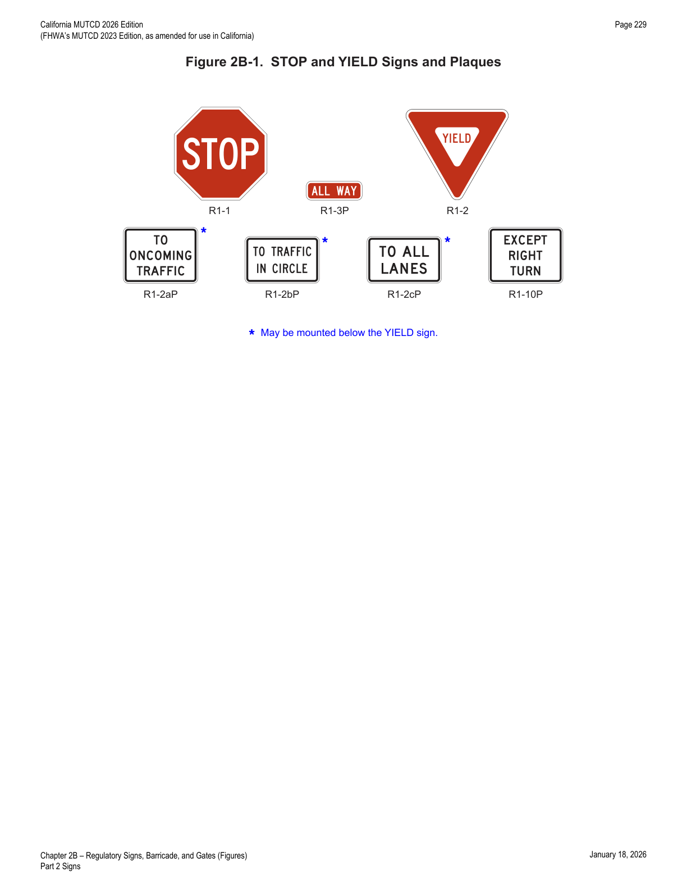
Signing for Right-of-Way at Intersections
2B.06General Considerations
- 01Unsignalized intersections represent the most common form of intersection right-of-way control. Selection of control type might be impacted by specific requirements of State law or local ordinances.
- 02Roundabouts and traffic circles are circular intersection designs and are not traffic control devices. The decision to convert an intersection from a conventional intersection to a circular intersection is an engineering design decision, not a traffic control device decision. As such, criteria for conversion to a circular intersection are not included in the MUTCD.
- 03The type of traffic control used at an unsignalized intersection should be the least restrictive that provides appropriate levels of safety and efficiency for all road users.
- 04Types of right-of-way control at an unsignalized intersection, from least to most restrictive: (A) No intersection control (Section 2B.09) — no right-of-way devices on any approach; (B) Yield control (Section 2B.10) — YIELD signs on all approaches (circular intersection), on opposing approaches (four-leg), on a single approach (three-leg), or in the median of a divided highway, placed on the minor road; (C) Minor road stop control (Section 2B.11) — STOP signs typically on opposing approaches (four-leg) or a single approach (three-leg), normally on the minor road (Section 2B.07 covers selecting the minor road); (D) All-way stop control (Section 2B.12) — STOP signs on all approaches.
- 05When selecting a form of intersection control, the following factors should be considered: (A) motor vehicle, bicycle, and pedestrian traffic volumes on all approaches (where units/day or units/hour is indicated, it is the total of vehicle, bicycle, and pedestrian volume); (B) driver yielding behavior with regard to all modes of conflicting traffic, including bicyclists and pedestrians; (C) number and angle of approaches; (E) approach speeds; (E) sight distance available on each approach; (F) reported crash experience; and (G) the presence of a grade crossing near the intersection.
- 06YIELD or STOP signs shall not be used for speed control.
- 07Appropriate traffic calming or other speed control measures are available to control vehicle speeds without diminishing the effectiveness of traffic control devices used for their specified purpose.
- 08Because the potential for conflicting commands could create driver confusion, YIELD or STOP signs shall not be used in conjunction with any traffic control signal operation, except: (A) if the signal indication for an approach is a flashing red at all times; (B) if a minor street or driveway is located within or adjacent to the signal-controlled area but does not require separate signal control because of extremely low conflict potential; or (C) if a channelized turn lane is separated from adjacent travel lanes by an island and is not itself signal-controlled.
- 08aSTOP signs shall not be erected at any entrance to an intersection controlled by traffic signals. Refer to CVC § 21355(a).
- 08bSTOP signs may be used at a channelized turn lane if it is separated from adjacent same-direction travel lanes by an island and is not itself signal-controlled.
- 09STOP signs and YIELD signs shall not be installed on different approaches to the same unsignalized intersection if those approaches conflict with or oppose each other, except as provided in Items A and B of Paragraph 3, Section 2B.10.
- 10Portable or part-time STOP or YIELD signs shall not be used except for emergency and temporary traffic control zone purposes.
- 11A portable or part-time (folding) STOP sign manually placed into and removed from view shall not be used during a power outage to control a signalized approach unless the maintaining agency establishes that the signal indication to be first displayed to that approach upon power restoration is flashing red, and that the portable STOP sign will be manually removed from view before resuming stop-and-go signal operation.
- 12A portable or part-time (folding) STOP sign that is electrically or mechanically operated such that it only displays the stop message during a power outage, and ceases upon power restoration, may be used during a power outage to control a signalized approach.
- 13The use of STOP signs at grade crossings is described in Sections 8B.04 and 8B.05.
- 14Section 9B.01 contains provisions regarding the assignment of priority where a shared-use path crosses a roadway.
2B.07Determining the Minor Road for Unsignalized Intersections
- 01Selection of the minor road to be controlled by YIELD or STOP signs should be based on one or more of: (A) a roadway intersecting a designated through or numbered highway; (B) a roadway with the lower functional classification; (C) a roadway with the lower traffic volume; (D) a roadway with the lower speed limit; and/or (E) a roadway that intersects with a roadway of higher priority for one or more modes of travel.
- 02When two intersecting roadways have relatively equal volumes, speeds, and/or other characteristics, the following should be considered in selecting the minor road: (A) controlling the direction that conflicts the most with established pedestrian crossing activity or school walking routes; (B) controlling the direction that has obscured vision, dips, or bumps that already require lower operating speeds; and (C) controlling the direction with the best sight distance from a controlled position to observe conflicting traffic.
- 03Refer to CVC § 21356 for the erection of YIELD signs upon the approaches to more than one of the intersecting streets.
2B.08Right-of-Way Intersection Control Considerations
- 01Before converting to a more restrictive form of right-of-way control at an unsignalized intersection, the following alternative treatments to address safety, operational, or other concerns should be among those considered: (A) where yield- or stop-controlled, installing Yield Ahead or Stop Ahead signs on the appropriate approaches; (B) removing parking on one or more approaches; (C) removing sight distance obstructions; (D) installing signs along the major street to warn approaching road users; (E) relocating stop line(s) and making other changes to improve sight distance; (F) installing measures to reduce approach speeds; (G) installing an Intersection Control Beacon (Section 4S.02) or Stop Beacon (Section 4S.05) to supplement STOP sign control; (H) installing a Warning Beacon (Section 4S.03) on advance warning signs on major-street and/or minor-street approaches; (I) adding one or more lanes on a minor-street approach to reduce per-lane volume; (J) revising geometrics to channelize vehicular movements and reduce movement completion time, which could also assist pedestrians; (K) revising geometrics to add pedestrian median refuge islands and/or curb extensions; (L) installing roadway lighting if a disproportionate number of crashes occur at night; (M) restricting one or more turning movements full- or part-time if alternate routes are available; (N) installing a pedestrian-actuated device (Warning Beacon, rectangular rapid-flashing beacon, or In-Roadway Warning Lights) on the major street if pedestrian safety is the major concern; (O) installing all-way stop control if the warrant is satisfied; (P) installing a pedestrian hybrid beacon (Chapter 4J) on the major street; (Q) installing a circular intersection; and (R) employing other alternatives depending on site conditions.
2B.09No Intersection Control
- 01The decision not to use intersection control should be based on engineering judgment.
- 02The following factors may be considered: (A) intersection sight distance is adequate on all approaches; (B) all approaches are a single lane with no separate turn lanes; (C) combined motor vehicle, bicycle, and pedestrian volume (existing or projected) entering the intersection from all approaches averages less than 1,000 units per day or 80 units in the peak hour; (D) there are no marked crosswalks or bicycle lanes on any approach; (E) none of the approaches are for a through highway, main road, or higher functional classification; (F) the angle of intersection is between 90 and 75 degrees; (G) the functional classification of the intersecting streets is either two local streets, or a local street with a collector street.
2B.10Yield Control
- 01At intersections where a full stop is not necessary at all times, consideration should first be given to using less restrictive measures such as YIELD signs.
- 02Yield control should be considered when engineering judgment indicates all of the following conditions exist: (A) intersection sight distance is adequate on the YIELD-controlled approaches; (B) all approaches are a single lane with no separate turn lanes; (C) one of the following crash-related criteria applies — (D) for changing from no intersection control to yield control, two or more reported crashes in the previous 12 months susceptible to correction by a YIELD sign; (E) for changing from minor road stop control to yield control, two or fewer reported crashes in the previous 12 months; (F) combined motor vehicle, bicycle, and pedestrian volume entering the intersection averages less than 1,800 units per day or 140 units in the peak hour; (G) the angle of intersection is between 90 and 75 degrees; (H) the functional classification of the intersecting streets is either two local streets, or a local street with a collector street.
- 02aRefer to FHWA's List of Known Errors for errors in Paragraph 2, Items D and E text (see Section 1A.04).
- 03YIELD signs may be installed at an intersection when any of the following conditions apply: (A) at the second intersection of a divided highway crossing or median break functioning as two separate intersections (see Figure 2B-19) — a YIELD sign may be installed at the entrance to the second intersection; (B) for a channelized turn lane separated from adjacent travel lanes by an island, even if adjacent lanes are signal- or STOP-controlled; (C) at an intersection with a special problem that engineering judgment indicates is susceptible to correction by a YIELD sign; (D) facing the entering roadway for a merge-type movement, if engineering judgment indicates control is needed because acceleration geometry and/or sight distance is inadequate for merging traffic; (E) on low-volume rural roads if engineering judgment indicates a YIELD sign would provide adequate control; (F) on an approach where the only permissible movement is a right turn with geometry similar to a channelized right-turn lane or a roundabout approach.
- 04YIELD signs should be installed on opposing minor-street approaches (four-leg) or the minor-street approach (three-leg). When two intersecting roadways have relatively equal volumes, speeds, and other characteristics, yield control should be installed on the approach that conflicts the most with established pedestrian crossing activity, school walking routes, or bicycle crossing activity.
- 05A YIELD sign shall be used to require road users to yield the right-of-way to other traffic at the entrance to a roundabout. YIELD signs at roundabouts shall be used to control the approach roadways and shall not be used to control the circulatory roadway.
- 06YIELD signs shall not be placed on more than one of the approaches to an intersection, except at roundabouts. Refer to CVC § 21356.
2B.11Minor Road Stop Control
- 01Stop control on the minor-road approach(es) should be considered when engineering judgment indicates one or more of: (A) a restricted view requires road users to stop to adequately observe conflicting traffic on the through street or highway; (B) crash records indicate — (1) for a four-leg intersection, three or more reported crashes in a 12-month period or six or more in a 36-month period, susceptible to correction by minor-road stop control; (2) for a three-leg intersection, three or more reported crashes in a 12-month period or five or more in a 36-month period, susceptible to correction by minor-road stop control; (C) the intersection is of a lower functional classification road with a higher functional classification road; (D) conditions that previously supported all-way stop control no longer exist.
- 02On low-volume rural roads, a STOP sign should be considered at an intersection where engineering judgment indicates Item C of Paragraph 1 applies, or where the intersection has inadequate sight distance for the operating vehicle speeds.
2B.12All-Way Stop Control
- 01The following sections describe warrants for the recommended engineering study to determine all-way stop control. Warrants are not a substitute for engineering judgment. Meeting a warrant for a particular traffic control device is not conclusive justification to install or not install all-way stop control. Because each intersection has unique characteristics affecting its operational performance or safety, the engineering study for a given intersection is ultimately the basis for the decision.
- 02All-way stop control at intersections with substantially differing approach volumes can reduce the effectiveness of these devices for all roadway users.
- 03The decision to establish all-way stop control at an unsignalized intersection should be based on an engineering study analyzing factors related to existing operation and safety, the potential to improve those conditions, and the applicable factors in the following warrants: (A) Warrant A — Crash Experience (Section 2B.13); (B) Warrant B — Sight Distance (Section 2B.14); (C) Warrant C — Transition to Signal Control or Transition to Yield Control at a Circular Intersection (Section 2B.15); (D) Warrant D — 8-Hour Volume (Vehicles, Pedestrians, Bicycles) (Section 2B.16); (E) Warrant E — Other Factors (Section 2B.17).
- 04The decision to install all-way stop control on site roadways open to public travel may be based on engineering judgment.
- 05The satisfaction of an all-way stop control warrant or warrants shall not in itself require the installation of all-way stop control at an unsignalized intersection.
2B.13All-Way Stop Control Warrant A: Crash Experience
- 01All-way stop control may be installed at an intersection where an engineering study indicates: (A) for a four-leg intersection, five or more reported crashes in a 12-month period or six or more in a 36-month period, of a type susceptible to correction by all-way stop control; (B) for a three-leg intersection, four or more reported crashes in a 12-month period or five or more in a 36-month period, of a type susceptible to correction by all-way stop control.
2B.14All-Way Stop Control Warrant B: Sight Distance
- 01All-way stop control may be installed at an intersection where an engineering study indicates that sight distance on the minor-road approaches controlled by a STOP sign is not adequate for a vehicle to turn onto or cross the major (uncontrolled) road.
- 02At such a location, a road user, after stopping, cannot see conflicting traffic and is not able to negotiate the intersection unless conflicting cross traffic is also required to stop.
2B.15All-Way Stop Control Warrant C: Transition to Signal Control or Transition to Yield Control at a Circular Intersection
- 01All-way stop control may be installed at locations where all-way stop control is an interim measure to control traffic while arrangements are being made for the installation of a traffic control signal (see Chapter 4C) at the intersection, or for the installation of yield control at a circular intersection.
2B.16All-Way Stop Control Warrant D: 8-Hour Volume (Vehicles, Pedestrians, Bicycles)
- 01All-way stop control may be installed at an intersection where an engineering study indicates: (A) the combined motor vehicle, bicycle, and pedestrian volume entering from the major-street approaches is at least 300 units per hour for each of any 8 hours of a typical day; and (B) the combined volume entering from the minor-street approaches is at least 200 units per hour for each of the same 8 hours.
- 02If the 85th-percentile approach speed of the major-street traffic exceeds 40 mph, the minimum vehicular volume warrants may be reduced to 70 percent of the values in Items A and B of Paragraph 1.
2B.17All-Way Stop Control Warrant E: Other Factors
- 01All-way stop control may be installed at an intersection where an engineering study indicates it is needed due to other factors not addressed by the other warrants, including but not limited to: (A) the need to control left-turn conflicts; (B) an intersection of two residential neighborhood collector (through) streets of similar design and operating characteristics where all-way stop control would improve traffic operational characteristics; or (C) where pedestrian and/or bicyclist movements support the installation of all-way stop control.
2B.18STOP Sign or YIELD Sign Placement
- 01The STOP or YIELD sign shall be installed on the near side of the intersection on the right-hand side of the approach to which it applies. When the sign is installed at this required location and its visibility is restricted, a Stop Ahead sign (see Section 2C.35) shall be installed in advance of the STOP sign, or a Yield Ahead sign (see Section 2C.35) shall be installed in advance of the YIELD sign.
- 02The STOP or YIELD sign shall be located as close as practicable to the intersection it regulates, while optimizing its visibility to the road user it is intended to regulate.
- 03STOP signs and YIELD signs shall not be mounted on the same post.
- 03aIf other signs are grouped with a STOP sign, except for ONE WAY (R6-1 & R6-2) signs and Street Name (D3-1) signs (refer to Sections 2B.49 and 2D.45), they shall be installed below the STOP sign.
- 03bWhen a Street Name sign and a ONE WAY sign are mounted on the same assembly as a STOP sign, the Street Name sign is placed at the top, the ONE WAY sign directly below it, and the STOP sign at the bottom.
- 04Section 2A.05 contains information about mounting signs back-to-back with a STOP or YIELD sign.
- 05STOP or YIELD signs should not be placed farther than 50 feet from the edge of the pavement of the intersected roadway (see Drawing F in Figure 2A-3).
- 06Supplemental plaques used in conjunction with a STOP or YIELD sign should be limited to those specified for such use in this Manual.
- 07Where drivers proceeding straight ahead must yield to opposite-direction traffic, such as at a one-lane bridge, a TO ONCOMING TRAFFIC (R1-2aP) plaque (see Figure 2B-1) may be mounted below the YIELD sign.
- 08Where drivers must yield to traffic in a multi-lane roundabout, a TO TRAFFIC IN CIRCLE (R1-2bP) or TO ALL LANES (R1-2cP) plaque (see Figure 2B-1) may be mounted below the YIELD sign.
- 09Figure 2A-3 shows examples of typical placements of STOP and YIELD signs.
- 09aThe TO ONCOMING TRAFFIC (R1-2a) sign, when used, shall be mounted on the same post and immediately below a YIELD (R1-2) sign.
- 09bThe width of the R1-2a sign should be equal to the width of the YIELD (R1-2) sign.
- 10Section 2A.13 contains additional information about separate and combined mounting of other signs with STOP or YIELD signs.
- 11Stop lines used to supplement a STOP sign should be located as described in Section 3B.19; yield lines used to supplement a YIELD sign should be located as described in Section 3B.19.
- 12Where there is a marked crosswalk at the intersection, the STOP sign should be installed in advance of the edge of the crosswalk nearest to approaching traffic.
- 13Except at roundabouts and channelized right-turn lanes, where there is a marked crosswalk at the intersection, the YIELD sign should be installed in advance of the edge of the crosswalk nearest to approaching traffic.
- 14Where two roads intersect at an acute angle, the STOP or YIELD sign should be positioned at an angle, or shielded, so the legend is out of view of traffic to which it does not apply.
- 15If a raised splitter island is available on the left-hand side of a multi-lane roundabout approach, an additional YIELD sign should be placed on the left-hand side of the approach.
- 16If a raised splitter island is available on the left-hand side of a single-lane roundabout approach, an additional YIELD sign may be placed on the left-hand side of the approach.
- 17At wide-throat intersections or where two or more approach lanes exist on the signed approach, an additional STOP or YIELD sign may be installed on the left-hand side and/or a stop or yield line may be used to improve observance of the right-of-way control. At channelized intersections or divided roadways separated by a median or divisional island, the additional sign may be placed on a channelizing island, in the median, or on the divisional island. An additional STOP or YIELD sign may also be placed overhead facing the approach.
- 18More than one STOP sign or more than one YIELD sign shall not be placed on the same support facing in the same direction.
- 19For a yield-controlled channelized right-turn movement onto a roadway without an acceleration lane, and for an entrance ramp onto a freeway or expressway without an acceleration lane, a NO MERGE AREA (W4-5aP) supplemental plaque (see Section 2C.45) may be mounted below a Yield Ahead (W3-2) sign and/or below a YIELD (R1-2) sign when engineering judgment indicates road users would otherwise expect an acceleration lane to be present.
2B.19Yield Here To Pedestrians Signs and Stop Here For Pedestrians Signs (R1-5 Series)
- 01The R1-5 series signs are intended to mitigate the scenario that can place pedestrians at risk by blocking other drivers' view of pedestrians and by blocking the pedestrians' view of vehicles approaching in adjacent lanes.
- 02Yield Here to (Stop Here for) Pedestrians (R1-5, R1-5a, R1-5b, R1-5c, R1-5d, R1-5e) signs (see Figure 2B-2) shall be used if yield (stop) lines are used in advance of a marked crosswalk only where it crosses an uncontrolled multi-lane approach. The Stop Here for Pedestrians signs shall only be used where the law specifically requires that a driver must stop for a pedestrian in a crosswalk. The legend STATE LAW shall not be displayed on the R1-5 series signs.
- 02aThe Stop Here for Pedestrian signs (R1-5b, R1-5c, and R1-5e) are deleted for California use, as a stop is not required in California per CVC § 21950.
- 03If yield (stop) lines and Yield Here to (Stop Here for) Pedestrians signs are used in advance of a crosswalk crossing an uncontrolled multi-lane approach, the signs should be placed 20 to 50 feet in advance of the nearest edge of the crosswalk (see Section 3B.19 and Figure 3B-16).
- 04When used with a School Crossing assembly within school zones (see Part 7), the R1-5a and R1-5c signs shall be used in place of the R1-5 and R1-5b signs, per Paragraph 2.
- 05When used with a Trail Crossing assembly (see Section 2C.54), the R1-5d and R1-5e signs shall be used in place of the R1-5 and R1-5b signs, per Paragraph 2.
- 06When Yield Here to (Stop Here for) Pedestrians signs are provided in advance of a crosswalk across a multi-lane approach, parking should be prohibited in the area between the yield (stop) line and the crosswalk.
- 07Yield (stop) lines and Yield Here to (Stop Here for) Pedestrians signs should not be used in advance of crosswalks crossing an approach to or departure from a roundabout.
- 08Yield Here to (Stop Here for) Pedestrians signs may be used per Paragraphs 2 through 4 even if yield (stop) lines are not used.
- 09A Pedestrian Crossing (W11-2) warning sign may be placed overhead or post-mounted with a diagonal downward-pointing arrow (W16-7P) plaque at the crosswalk location where Yield Here to (Stop Here for) Pedestrians signs have been installed in advance.
- 10If a W11-2 sign is post-mounted at the crosswalk location where a Yield Here to (Stop Here for) Pedestrians sign is used on the approach, the Yield Here to (Stop Here for) Pedestrians sign shall not be placed on the same post as the W11-2 sign.
- 11An advance Pedestrian Crossing (W11-2) warning sign with an AHEAD or distance supplemental plaque may be used in conjunction with a Yield Here to (Stop Here for) Pedestrians sign on the approach to the same crosswalk.
- 12In-Street Pedestrian Crossing signs and Yield Here to (Stop Here for) Pedestrians signs may be used together at the same crosswalk.
2B.20In-Street and Overhead Pedestrian and Trail Crossing Signs (R1-6 and R1-9 Series)
- 01The In-Street Pedestrian Crossing (R1-6 or R1-6a), In-Street Trail Crossing (R1-6d or R1-6e), Overhead Pedestrian Crossing (R1-9 or R1-9a), or Overhead Trail Crossing (R1-9d or R1-9e) sign (see Figure 2B-2) may be used to remind road users of laws regarding right-of-way at an unsignalized crosswalk. The legend STATE LAW may be displayed at the top of the R1-6 series and R1-9 series signs if applicable. On the R1-6 series signs, the legends STOP or YIELD may be used instead of the appropriate STOP or YIELD sign symbol.
- 02Highway agencies may develop and apply criteria for determining the applicability of In-Street Pedestrian Crossing signs.
- 02aThe In-Street Pedestrian Crossing (R1-6a), In-Street Trail Crossing (R1-6e), Overhead Pedestrian Crossing (R1-9a), and Overhead Trail Crossing (R1-9e) signs are deleted for California use, as a stop is not required in California per CVC § 21950.
- 03The STOP FOR legend shall only be used in States where State law specifically requires that a driver must stop for a pedestrian or bicyclist in a crosswalk.
- 04If used, In-Street Pedestrian or Trail Crossing signs shall only be placed in the roadway at the crosswalk location on the center line, on a median island, on a lane line, or on an edge line.
- 05The In-Street Pedestrian or Trail Crossing sign shall not be post-mounted on the left-hand or right-hand side of the roadway.
- 06Section 3I.02 contains information about the use of tubular markers to provide additional emphasis for a pedestrian crossing.
- 07If used, the Overhead Pedestrian or Trail Crossing sign shall be placed over the roadway at the crosswalk location.
- 08When used at an uncontrolled crossing, the In-Street or Overhead Pedestrian Crossing sign shall be used only as a supplement to a Pedestrian Crossing (W11-2) warning sign with a diagonal downward-pointing arrow (W16-7P) plaque at the crosswalk location.
- 09When used at an uncontrolled crossing, the In-Street or Overhead Trail Crossing sign shall be used only as a supplement to a Trail Crossing (W11-15) warning sign with a diagonal downward-pointing arrow (W16-7P) plaque at the crosswalk location.
- 10An In-Street or Overhead Pedestrian or Trail Crossing sign shall not be placed in advance of the crosswalk to educate road users about the State law prior to reaching the crosswalk, nor installed as an educational display not near any crosswalk.
- 11If an island (see Chapter 3J) is available, the In-Street Pedestrian or Trail Crossing sign, if used, should be placed on the island.
- 12In-Street Pedestrian or Trail Crossing signs may be mounted back-to-back in the median or on the center line of an undivided roadway.
- 13The In-Street Pedestrian or Trail Crossing sign and the Overhead Pedestrian Crossing or Trail sign shall not be used at crosswalks on approaches controlled by a stop control, traffic control signal, pedestrian hybrid beacon, or emergency-vehicle hybrid beacon.
- 14Except where the In-Street Crossing sign is placed on a physical island, the sign support shall be designed to bend over and then bounce back to its normal vertical position when struck by a vehicle.
- 15The In-Street and Overhead Pedestrian and Trail Crossing sign may be used at intersections or midblock pedestrian crossings with flashing beacons.
- 16The provisions of Section 2A.15 concerning mounting height are not applicable to the In-Street Pedestrian Crossing sign. Section 2A.18 contains information about sign mounting methods.
- 17The top of an In-Street Pedestrian or Trail Crossing sign shall be a maximum of 4 feet above the pavement surface. The top of an In-Street Pedestrian or Trail Crossing sign placed in an island shall be a maximum of 4 feet above the island surface.
- 18The In-Street Pedestrian Crossing or Trail Crossing signs may be used seasonally to prevent damage in winter from plowing operations, and may be removed at night if nighttime pedestrian activity is minimal.
- 19Both sign mounting types — In-Street Crossing (R1-6 series) signs and Overhead Crossing (R1-9 series) signs — may be used together at the same crosswalk.
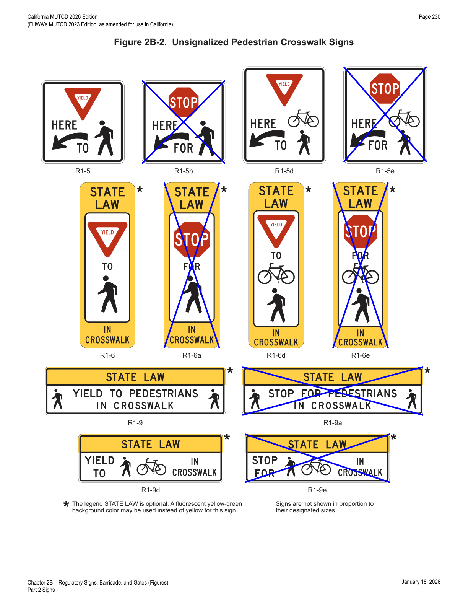
2B.21Speed Limit Sign (R2-1)
- 01In general, the maximum speed limits applicable to rural and urban roads are established: (A) Statutorily — a maximum speed limit applicable to a particular class of road, such as freeways or city streets, established by State law; or (B) As speed zones — based on engineering studies.
- 02State statutory limits might restrict the maximum speed limit that can be established on a particular road, notwithstanding what an engineering study might indicate.
- 03Agencies with designated authority to set speed limits — which include the State and, in some cases, local jurisdictions — can establish non-statutory speed limits or designate reduced speed zones using an engineering study. Setting appropriate speed limits is especially important to ensure safety for all road users in varying contexts, particularly on roadways where adjacent land use suggests that trips could be served by varied modes, such as urban and suburban non-freeway arterials or rural arterials that serve as main streets in smaller communities, consistent with the context classifications of urban core, urban, suburban, and rural towns found in AASHTO's "A Policy on Geometric Design of Highways and Streets," 2018 Edition. When setting a speed limit, factors such as land-use context, pedestrian and bicyclist activity, crash history, intersection spacing, driveway density, roadway geometry, roadside conditions, roadway functional classification, traffic volume, and observed speeds can influence the outcome; the engineering study determines which of these factors prevails.
- 04Jurisdictions can use speed limit setting tools and methods, such as expert systems and approaches consistent with the safe system approach, as part of the required engineering study for a non-statutory speed limit. Because such tools vary, jurisdictions need to be aware of their limitations and advantages, possible variation between tools, and gaps or weaknesses, weighing the output accordingly.
- 04aThe setting of speed limits can be controversial and requires a rational and defensible determination to maintain public confidence. Speed limits are normally set near the 85th-percentile speed, which statistically represents one standard deviation above the average speed and establishes the upper limit of what is considered reasonable and prudent. As with most laws, speed limits depend on the voluntary compliance of the greater majority of motorists; they cannot be set arbitrarily low, as this would create violators of the majority of drivers and would not command public respect. Artificially low speed limits can lead to poor compliance and large variations in speed within the traffic stream, and increased speed variance can create more conflicts and passing maneuvers.
- 05To achieve desired operating speeds, agencies often implement other speed management strategies concurrently with setting speed limits, such as traffic calming measures, geometric design features, speed safety cameras, and increased enforcement.
- 05aThe most effective way to reduce speeds is through a combination of strategies: traffic control devices related to speed management, roadway design and engineering solutions, traffic calming techniques, public education, and enforcement. Effectively managing road user speed relies on enforcement, roadway characteristics, surrounding environment, adjacent land use, and traffic control devices. Many studies find that engineering changes to a road's infrastructure are among the most important factors in reducing vehicle operating speeds and are also among the most effective interventions at reducing pedestrian injury and fatality rates. Potential engineering changes — curb extensions, median islands, raised crosswalks, roundabouts, and speed bumps or humps — naturally result in lower speeds, though these changes can be costly and time-consuming to implement.
- 06Speed zones (other than statutory speed limits) shall only be established on the basis of an engineering and traffic survey (E&TS), also referred to as an engineering study, performed in accordance with traffic engineering practices. The engineering study shall consider the roadway context.
- 07The engineering study should consider the roadway context. Factors that should be considered when conducting an engineering study for establishing or reevaluating speed limits within speed zones include: (A) Roadway environment not readily apparent to the driver (CVC § 627), such as roadside development, number and frequency of driveways and access points, land use, functional classification, public transit volume and location or frequency of stops, parking practices, and pedestrian/bicycle facilities and activity; (B) Roadway characteristics not readily apparent to the driver (CVC § 627), such as lane widths, shoulder condition, grade, alignment, median type, and sight distance; (C) Geographic context (urban district, rural town center, non-urbanized rural area, suburban area, residential district, business district, business activity district) and multi-modal trip generation; (D) Reported crash experience for at least a 36-month period; (E) Speed distribution of free-flowing vehicles, including the pace, median (50th-percentile), and 85th-percentile speeds; and (F) A review of past speed studies to identify trends in operating speeds (CVC § 22358.8).
- 07aRefer to FHWA's List of Known Errors for an error in the Item E text of Paragraph 7 (see Section 1A.04).
- 08When the 85th-percentile speed is appreciably greater than the posted speed limit, and the roadway context does not support setting a higher speed limit, the engineering study (not the E&TS) should consider whether changes to geometric features, enforcement, and/or other speed-reduction countermeasures might improve compliance with the posted speed limit. A similar approach should be used if past speed studies indicate that the 85th-percentile speed has consistently increased.
- 09On urban and suburban arterials, and on rural arterials that serve as main streets through developed areas of communities, the 85th-percentile speed should not be used to set speed limits without consideration of all the factors described in Paragraph 7 of this Section.
- 10On a freeway, expressway, or rural highway (outside urbanized locations or conditions), the speed limit posted within a speed zone shall be within 12.4 mph of the 85th-percentile speed of free-flowing motor-vehicle traffic, provided: (A) all factors described in Paragraph 7 of this Section have been considered and determined to be non-mitigating; and (B) the measures described in Paragraph 8 of this Section have been considered to the extent practicable.
- 11State and local agencies should conduct engineering studies to reevaluate non-statutory speed limits on roadway segments that have undergone significant changes since the last review, such as changes to roadway context, the addition or elimination of parking or driveways, changes in the number of travel lanes, changes in the configuration of bicycle lanes, changes to road geometrics, changes in traffic signal coordination, or significant changes in traffic volumes.
- 12Speed studies for signalized intersection approaches should be taken outside the influence area of the traffic control signal — generally considered to be approximately ½ mile — to avoid skewed speed-distribution results. If the signal spacing is less than 1 mile, the speed study should be taken at approximately the middle of the segment.
- 12aSpeed limits in California are governed by CVC §§ 22348 through 22413, with additional pertinent provisions in §§ 627 and 40802 and others referenced throughout this Section. Refer to Section 1A.05 for information regarding these publications.
- 12bRefer to Part 6, Section 6B.01 for speed limit signs in temporary traffic control zones. Refer to Part 7 for speed limit signs in school areas.
Basic Speed Law and Prima Facie Speed Limits — CVC §§ 22350 & 22352
- 12cThe basic speed law states: "No person shall drive a vehicle upon a highway at a speed greater than is reasonable or prudent having due regard for weather, visibility, the traffic on, and the surface and width of, the highway, and in no event at a speed which endangers the safety of persons or property."
- 12dPrima facie speed limits are specific limits and shall apply unless changed based upon an E&TS and signs are posted that display the new speed limit.
- 12ePrima facie speed limits may be preempted by the basic speed law when roadway, traffic, or weather conditions warrant a lower speed.
Legal Authority for Establishing Speed Limits
- 12fDelegation of legal authority to set speed limits based on a valid E&TS on State highways is given to Caltrans District Directors. The District Director of each transportation district is authorized to issue orders regulating the speed of traffic, up to 70 mph, on State highways. The Director of Caltrans retains the authority to approve variable and minimum speed limits on State freeways.
- 12gThe speed limits shown in Table 2B-101(CA) shall apply, unless changed upon the basis of an E&TS.
- 12hThe speed limits shown in Table 2B-102(CA) may apply, unless changed upon an E&TS.
- 12iVariable Speed Limits on Freeways (CVC § 22355) — Whenever Caltrans determines, based upon an E&TS, that the safe and orderly movement of traffic upon any freeway segment will be facilitated by the establishment of variable speed limits, Caltrans may erect, regulate, and control signs upon that State highway freeway (or any portion thereof) that, if used, are designed to permit display of different speeds at various times of the day or night. Such signs need not conform to the standards and specifications of CVC § 21400, but if used shall be of sufficient size and clarity to give adequate notice of the applicable speed limit.
- 12jMinimum Speed Limits on State Highways (CVC § 22400) — Whenever Caltrans determines, based upon an E&TS, that slow speeds on any part of a State highway consistently impede the normal and reasonable movement of traffic, Caltrans may determine and declare a minimum speed limit; appropriate signs giving notice shall then be installed on that segment. A motorist can be cited for stopping or impeding the normal and reasonable movement of traffic unless the stop is necessary for safe operation and in compliance with the law.
Engineering and Traffic Survey (E&TS)
- 12kCVC § 627 defines the term "engineering and traffic survey" and lists its requirements.
- 12lAn E&TS shall include, among other requirements deemed necessary by Caltrans, consideration of all of the following: (A) prevailing speeds as determined by traffic engineering measurements; (B) collision records; and (C) highway, traffic, and roadside conditions not readily apparent to the driver.
- 12mThe E&TS should contain sufficient information to document that the three required items of CVC § 627 are provided and that other conditions not readily apparent to a driver are properly identified.
- 12nPrevailing speeds are determined by a speed zone survey. A speed zone survey should include: (A) speed measurements intended to determine the actual speed of unimpeded traffic — traffic should not be altered by concentrated law enforcement or other means just prior to, or while taking, the measurements; (B) speeds read directly from radar or other electronic speed measuring devices, or (C) other devices capable of accurately distinguishing and measuring the unimpeded speed of free-flowing vehicles; (D) a location selected where prevailing speeds are representative of the entire speed zone section — if speeds vary along a route, more than one speed zone section may be required with separate measurements for each, and locations should be chosen to minimize the effects of traffic signals or stop signs; (E) measurements taken during off-peak hours between peak traffic periods on weekdays (or, if difficulty obtaining the desired quantity arises, during any period with free-flowing traffic); (F) fair weather (dry pavement) with no unusual conditions prevailing; (G) a surveyor and equipment that do not affect traffic speeds — an unmarked car is recommended, with the radar speed meter located as inconspicuously as possible; (H) a minimum sample of 100 vehicles per survey, and in no case fewer than 50 vehicles, to be representative of actual traffic flow; (I) avoidance of short speed zones of less than 0.5 miles, except in transition areas; (J) coordination of speed zone changes with changes in roadway conditions or roadside development; and (K) coordination of speed zoning with adjacent jurisdictions.
- 12oPhysical conditions such as width, curvature, grade, and surface conditions, or any other condition readily apparent to the driver, in the absence of other factors, would not require special downward speed zoning. Refer to CVC § 22358.5.
- 12pWhen qualifying an appropriate speed limit, local authorities may also consider all of the following findings: (A) Residential density, if any of the following conditions exist on the portion of highway and the contiguous property, other than a business district: (1) upon one side of the highway, within 0.25 miles, the contiguous property fronting thereon is occupied by 13 or more separate dwelling houses or business structures; (2) upon both sides of the highway, collectively, within 0.25 miles the contiguous property fronting thereon is occupied by 16 or more separate dwelling houses or business structures; or (3) the portion of highway is longer than 0.25 miles but has a ratio of dwellings/structures to length equivalent to (1) or (2). (B) Safety of bicyclists and pedestrians, with increased consideration for vulnerable pedestrian groups including children, seniors, persons with disabilities, users of personal assistive mobility devices, and the unhoused.
- 12qTwo forms may be used to document speed zoning based on an E&TS: (1) For State highways, the E&TS is made under the direction of the Caltrans District traffic engineer using a long form to document data and reports, including (a) a Speed Zone Survey Sheet (refer to Figure 2B-101(CA)) showing a north arrow; the route name/number; post mile or other distance measurement; limits of the proposed zones for each direction of travel; road/crossroad names, number and width of lanes, and parking restrictions; notations of roadside development type ("scattered business," "solid residential," etc. — schools adjacent to the highway are shown, other buildings need not be plotted unless a factor in the recommendation or zone terminus); collision rates for the zones; annual average daily traffic volume; location of signals, signs, and markings; for divided highways, the limits of zones for each direction; and plotted 85th-percentile and pace speeds showing the speed profile; and (b) a report to the District Director including the reason for initiating the survey, recommendations and supporting reasons, the enforcement jurisdictions involved and their recommendations/opinions, and the stationing or reference post mileage at the beginning and ending of each proposed zone (with location ties to readily identifiable physical features). (2) For roadways under city or county jurisdiction, (a) a short form may be used (Figure 2B-104(CA)), and (b) Figures 2B-103(CA) and 2B-104(CA) show example data sheets that may be used to record speed observations, with specific vehicle types tallied by letter symbols in appropriate squares.
- 12rIn most situations, the short form for local streets and roads will be adequate; however, the long-form procedure used on State highways may be used at the option of the local agency.
- 12sEstablishing a speed limit more than 5 mph below the 85th-percentile speed should be done with great care, as studies show that setting a speed limit below the 85th percentile generally increases collision rates and may make violators of a disproportionate number of the reasonable majority of drivers.
- 12tGenerally, the most decisive evidence of conditions not readily apparent to the driver is found in collision histories.
- 12uSpeed limits are established at or near the 85th-percentile speed — the speed at or below which 85 percent of traffic is moving, often called the critical speed. Pace speed is the 10 mph increment containing the largest number of vehicles (refer to Figure 2B-102(CA)); its lower limit is plotted on the Speed Zone Survey Sheets to aid in determining zone limits. Speed limits higher than the 85th-percentile speed are not generally considered reasonable and prudent, while limits below the 85th percentile do not ordinarily facilitate orderly traffic movement and require constant enforcement to maintain compliance. Limits based on the 85th-percentile speed conform to the consensus of highway users as to what is reasonable and prudent, rather than the judgment of one or a few individuals.
- 12vThe majority of drivers comply with the basic speed law. Speed limits set at or near the 85th-percentile speed give law enforcement officers a limit to cite drivers who will not conform to what the majority considers reasonable and prudent. Studies further show that setting a speed limit below the 85th-percentile (critical) speed generally increases collision rates.
- 12wWhen roadside development results in traffic conflicts and unusual conditions not readily apparent to drivers, as indicated in collision records, speed limits somewhat below the 85th percentile may be justified. Concurrence and support of enforcement officials are necessary for a speed zone to operate successfully.
- 12xSpeed zones of less than 0.5 miles in rural locations, 0.25 miles in urban locations, and short transition zones should be avoided.
- 12yAny existing E&TS performed before January 1, 2022 in accordance with previous traffic control device standards is not required to be updated until it is due for reevaluation under the 5-, 7-, or 14-year criteria. An E&TS can originally be valid for 7 years and may be extended to 14 years if conditions are met.
CVC § 22358.6 — 85th-Percentile Speed, Rounding, and Speed Reduction Limits
- 12zWhen a speed limit is to be posted, it shall be established at the nearest 5 mph increment of the 85th-percentile speed of free-flowing traffic (CVC § 22358.6(a)), except as shown in the two Options in Paragraphs 12aa and 12ab, or if using an additional 5 mph speed reduction for a safety corridor designation (CVC § 22358.7(a)(1)) or for land/a facility generating high concentrations of bicyclists and pedestrians (CVC § 22358.7(a)(2)).
- 12aaWhere rounding the 85th-percentile speed to the nearest 5 mph increment would require rounding down, the speed limit may instead be reduced by 5 mph from the nearest 5 mph increment, in compliance with CVC §§ 627 and 22358.5 (CVC §§ 22353, 22353.2, 22353.3, 22353.4, and 22353.5 may also be considered, if applicable). Refer to the Standard below for documentation requirements, and to CVC § 22358.6(b).
- 12abWhere rounding the 85th-percentile speed to the nearest 5 mph increment would require rounding up, the speed limit may instead be rounded down to the nearest 5 mph increment below the 85th-percentile speed. Refer to CVC § 21400(b) and CVC § 22358.6(c).
- 12acIf a 5 mph reduction is applied to the 85th-percentile speed after it is rounded to the nearest 5 mph increment, and the required rounding was a rounding down, the E&TS shall document in writing the conditions and justification for the 5 mph reduction and be approved by a registered civil or traffic engineer. The reasons for the lower speed limit shall comply with CVC §§ 627 and 22358.5. Refer to CVC § 22358.6(b).
- 12adIf the 85th-percentile speed is rounded down to the lower 5 mph increment in cases where the 85th-percentile speed needed to round up to the nearest 5 mph increment, the speed limit shall not be reduced any further pursuant to CVC § 22358.6(b).
- 12aeThe total reduction from the 85th-percentile speed shall not exceed 12.4 mph. Refer to CVC § 22358.6(e).
- 12afRefer to Table 2B-103(CA), which provides examples of 85th-percentile speed values and the application of the speed limit policies and criteria under CVC §§ 22358.6 and 22358.7.
CVC § 22358.7 — Safety Corridors and Land/Facilities Generating High Concentrations of Bicyclists or Pedestrians
- 12agAdditional lowering of speed limits beyond the standards in Paragraph 12z and the Options in Paragraphs 12aa and 12ab is prohibited, except for roadway segments designated as a "safety corridor" or as "land or facilities that generate high concentrations of bicyclists and pedestrians," in compliance with CVC §§ 22358.6(d) and 22358.7.
- 12ahCaltrans or a local authority may additionally lower the speed limit by 5 mph from the final value determined under Paragraphs 12z, 12aa, and 12ab if, after completing an E&TS, it finds the speed limit is still more than is reasonable or safe, for either of the following reasons: (1) the portion of highway has been designated as a safety corridor; or (2) the portion of highway meets the definition of land or a facility that generates high concentrations of bicyclists or pedestrians.
"Safety Corridor" Definition — CVC § 22358.7(a)(1)
- 12aiA safety corridor shall be defined as a roadway segment within an overall roadway network where the highest number of serious injury and fatality crashes occur.
- 12ajOne or more crash weighting factors, as provided in Paragraph 12ak, shall be used to prioritize the locations of fatal and serious injury crashes in developing the safety corridor.
- 12akThe crash weighting factors used to prioritize fatal and serious injury crash locations in developing a safety corridor may include, but are not limited to, the factors in Table 2B-104(CA).
- 12alData used to determine a safety corridor may be drawn from the most recent E&TS performed. The crash data source may include, but is not limited to, the California Highway Patrol's Statewide Integrated Traffic Records System (SWITRS).
- 12amThe prioritized subset of safety corridors shall: (1) identify specific locations with high crash occurrences; (2) identify corridor-level segments with a pattern of crash reoccurrence; and (3) be capable of being stratified by mode.
- 12anSafety corridors shall represent a prioritized subset of the overall roadway network within an authority's responsibilities and shall not exceed one-fifth of the overall roadway network.
- 12aoA jurisdiction should use three to five years of the most recent crash data to determine a safety corridor based on fatal and serious injury data.
- 12apFor crash coverage, safety corridors may identify the subset of the overall roadway network where a minimum of 25% of the Fatal + Serious Injury (F+SI) crashes occur.
- 12aqTo identify logical termini, the geographic extent of a safety corridor may be determined by non-engineering staff.
- 12arA licensed professional engineer shall sign off on logical termini identified for a safety corridor using existing E&TS data.
- 12asA crash/volume rate may be used to identify additional locations to include in the safety corridor. Local agencies may use proactive measures as indicators.
"Land or Facility That Generates High Concentrations of Bicyclists or Pedestrians" Definition — CVC § 22358.7(a)(2)
- 12atA land or facility that generates high concentrations of bicyclists or pedestrians shall be defined as the portion of highway where one or more of the generators listed in Table 2B-105(CA) is present within 1320 feet longitudinally of the highway, and that meets the condition specified in Paragraph 12au.
- 12auCrash data must demonstrate the highway segment is within the top twenty percent of pedestrian and/or bicyclist fatalities or serious injuries over a three-to-five-year period.
- 12avA highway segment shall be defined as the portion of highway where a location meeting the aforementioned criteria is present within 1320 feet longitudinally of the highway.
- 12awA highway segment may be longer than 1320 feet longitudinally provided that a minimum of one location within the top twenty percent of fatal and serious injury pedestrian and/or bicyclist crashes (within a three-to-five-year period) is present for every 1320 feet.
- 12axThe top twenty percent of pedestrian and/or bicyclist fatalities or serious injury crashes within a three-to-five-year period shall be based on the geographic area within the jurisdiction.
- 12ayA high concentration of pedestrians and bicyclists may extend longer than 1320 feet longitudinally provided a minimum of one generator is present for every 1320 feet.
- 12azData used to determine high-concentration locations may be obtained from the most recently performed E&TS.
- 12baCVC § 22358.8 (Retain Currently Adopted or Restore Immediately Prior Speed Limit) — Caltrans or a local authority may retain the currently adopted speed limit without further reduction, or restore the immediately prior adopted speed limit, on a highway that is not a freeway, without further reduction, as provided in CVC § 22358.8.
CVC § 22358.8 — Retaining or Restoring a Speed Limit
- 12bbA currently adopted speed limit or immediately prior adopted speed limit shall only be retained — by Caltrans Director's Order for the State Highway System or by local ordinance for highways under local jurisdiction — if, after completing an E&TS, Caltrans or the local authority finds the speed limit is still more than reasonable or safe; that speed limit was established with an E&TS; and a registered engineer has evaluated the highway section and determined that no additional general-purpose lanes have been added since completion of the traffic survey that established the prior speed limit.
- 12bcIf Caltrans or a local authority decides to use a lower speed limit based on CVC § 22358.8, after completing an E&TS and finding the speed limit is still more than reasonable or safe, it shall not be reduced by more than 5 mph from the currently adopted speed limit, nor below the immediately prior speed limit. Refer to CVC § 22358.8(b).
- 12bdCVC § 22358.8 shall not apply to a roadway that is a freeway.
CVC § 22358.9 — Business Activity District
- 12beCaltrans or a local authority may, by Caltrans Director's Order (State Highway System) or local ordinance (locally-jurisdictional highways), determine and declare a 25 or 20 mph prima facie speed limit on a highway that is not a freeway and that is contiguous to a business activity district, posted with a sign indicating the 25 or 20 mph limit, if the segment meets all of the following: (1) a maximum of four traffic lanes; (2) a maximum posted 30 mph prima facie speed limit immediately prior to and after the business activity district, if establishing a 25 mph limit; and (3) a maximum posted 25 mph prima facie speed limit immediately prior to and after the district, if establishing a 20 mph limit.
- 12bfA "business activity district" is that portion of a highway that is not a freeway, together with the contiguous property, that includes central or neighborhood downtowns, urban villages, or zoning designations that prioritize commercial land uses at the downtown or neighborhood scale, and that meets at least three of the following four requirements: (4) no less than 50 percent of the contiguous property fronting the highway consists of retail or dining commercial uses (including outdoor dining) that open directly onto sidewalks adjacent to the highway; (5) parking (parallel, diagonal, or perpendicular) located alongside the highway; (6) traffic control signals or stop signs regulating traffic flow located at intervals of no more than 600 feet; and (7) marked crosswalk(s) not controlled by a traffic control device.
- 12bgCaltrans or a local authority shall not declare a prima facie speed limit on a portion of highway where it has already lowered the speed limit for a designated safety corridor (CVC § 22358.7), for land/a facility adjacent to a high concentration of pedestrians and bicyclists (CVC § 22358.7), or has retained/restored a speed limit under CVC § 22358.8. Refer to CVC § 22358.9(c).
- 12bhCVC § 22358.9 shall not apply to a roadway that is a freeway.
- 12biCVC §§ 22358.7, 22358.8, and 22358.9 and their related policies also apply to privately owned and maintained roads or commercial establishments if the private road or property has been subjected to CVC application by the owner, or a city or county enacts an ordinance or resolution to that effect. Refer to CVC §§ 21100, 21100.1, 21107, 21107.5, 21107.6, and 21107.7.
Truck Speed Zones on Descending Grades
- 12bjHighway descending grades used for posting TRUCK Speed Limit signs (R2-1 and M4-4P) for trucks traveling downhill should have a recorded incident history of runaway commercial vehicles. Descending grades shorter than 1 mile should be avoided for posting such signs, because deceleration due to braking can generally provide sufficient control on grades of less than 1 mile.
- 12bkTo establish a downhill truck speed limit, a physical profile showing length and gradient, and a downhill speed profile for three-or-more-axle commercial vehicles with a gross rating of 10,000 lbs. or more, will be provided.
- 12blSpeed profiles for truck speed limits shall be prepared on the same form as other speed surveys and remain valid for up to 7 years, extendable to 14 years if conditions are met. An analysis of collisions involving trucks shall be prepared.
Speed Traps — CVC § 40802
- 12bmRefer to CVC § 40802 for speed traps.
- 12bnA speed trap shall not apply to a local street, road, school zone, senior zone, or business activity district.
- 12boA senior zone is an area approaching or passing a senior center building or other facility primarily used by senior citizens (or its grounds) that is contiguous to a highway and on which a standard "SENIOR" warning sign is posted pursuant to CVC § 22352.
- 12bpA business activity district is a section of highway described in CVC § 22358.9(b) in which a standard 25 mph or 20 mph speed limit sign has been posted pursuant to CVC § 22358.9(a)(1).
- 12bqA section of highway shall be defined as a speed trap if the prima facie speed limit is not justified by an E&TS within five years and enforcement involves radar or another electronic speed-measuring device — or within seven years when using radar and all criteria in Paragraph 12bn (and 12br) are met.
- 12brThis time provision shall be extended to seven years if the existing speed limit is initially valid for 5 years, when using radar and all of the following are met: the arresting officer has successfully completed a minimum of 24 hours of radar operator training approved and certified by the Commission on Peace Officer Standards and Training; and the radar used meets or exceeds the minimal operational standards of the National Highway Traffic Safety Administration and has been calibrated within three years of the alleged violation.
- 12bsThis time provision shall likewise be extended to seven years, when using laser or other electronic devices (other than radar), if all of the following are met: the arresting officer has completed a minimum of 24 hours of radar operator training, approved and certified by the Commission on Peace Officer Standards and Training; the arresting officer has completed a minimum of 2 hours of additional training, similarly approved and certified; and the laser or other device meets or exceeds the minimal operational standards of the National Highway Traffic Safety Administration and has been calibrated within three years of the alleged violation.
- 12btThis time provision for an E&TS may be extended to fourteen years when all of the above conditions are met and no significant changes in roadway or traffic conditions have occurred — including changes in adjoining property or land use, roadway width, or traffic volume — as determined by a registered engineer.
Sign Design, Placement, and Spacing
- 13The Speed Limit (R2-1) sign (see Figure 2B-3) shall display the limit established by law, ordinance, resolution, regulation, or as adopted by the authorized agency based on an engineering study. Displayed speed limits shall be in multiples of 5 mph.
- 14Speed Limit (R2-1) signs, indicating speed limits for which posting is required by law, shall be located at the points of change from one speed limit to another.
- 14aSections 2A.13 and 2A.16 provide guidance on sign location and lateral offset.
- 14bWhere speed zones are longer than 1 mile, intermediate signs may be placed at approximately 1-mile intervals.
- 14cFor three or more lanes in each direction, dual installation on both the left and right sides of the roadway may be used.
- 14dOn freeway segments with a 65 or 70 mph speed limit, Speed Limit (R2-1) signs shall be posted: at the beginning of the segment, on the right-hand side of the roadway; and subsequently throughout the segment, at a maximum 10-mile interval and immediately after locations where significant volumes of traffic enter the segment, on the right-hand side of the roadway. (The 10-mile interval may be modified to include locations following entrance ramps.)
- 14eOn freeway segments with a 55 mph speed limit, Speed Limit (R2-1) signs shall be posted: at the beginning of the segment, on the right-hand side of the roadway; and subsequently throughout the segment at a maximum 3-mile interval and immediately after locations where significant traffic volumes enter, with no more than 3 interchanges between signs, on the right-hand side of the roadway.
- 14fOn expressway segments with a 55 or 65 mph speed limit, Speed Limit (R2-1) signs shall be posted: at the beginning of the segment, on the right-hand side of the roadway; and subsequently at 3- to 5-mile intervals and immediately after locations where significant traffic volumes enter, on the right-hand side of the roadway.
- 14gOn conventional highway segments with a 55 or 65 mph speed limit, Speed Limit (R2-1) signs shall be posted: at the beginning of the segment, on the right-hand side of the roadway; and subsequently at maximum 5- to 10-mile intervals and immediately after locations where significant traffic volumes enter, on the right-hand side of the roadway.
- 14hPavement markings with appropriate numerals (refer to Section 3B.20) may be used to supplement speed limit signs.
- 15At the downstream end of the section to which a particular speed limit applies, a Speed Limit sign showing the next speed limit shall be installed.
- 16Speed Limit signs indicating statutory speed limits shall be installed at entrances to the State and, where appropriate, at jurisdictional boundaries in urban areas.
- 17Additional Speed Limit signs should be installed beyond interchanges and major intersections, and at other locations where it is necessary to remind road users of the applicable speed limit.
- 17aA Speed Zone Ahead (R2-4(CA)) sign shall always be followed by a Speed Limit (R2-1) sign installed at the beginning of the zone where the speed limit applies.
- 17bAn End Speed Limit (R3(CA)) sign shall be placed at the end of the final speed zone, before the highway reverts to the maximum statutory speed limit.
- 17cThe End Speed Limit (R3(CA)) sign shall only be used to mark the end of a speed zone.
- 17dThe End Speed Limit (R3(CA)) sign shall not be used at a transition into a change of speed limits within a reduced zone.
- 17eThe End Speed Limit (R3(CA)) sign shall be placed at the end of all speed zones and within a reasonable distance of no greater than 1000 feet from the next Speed Limit (R2-1) sign.
- 17fThe Speed Zone Ahead (R2-4(CA)) sign (refer to Figure 2B-3(CA)) may be used to inform motorists of a speed zone.
- 17gThe End Truck Speed Limit (R2-14) sign, or the R3(CA) sign (refer to Figure 2B-3(CA)) with the TRUCK (M4-4P) plaque, may be used to mark the end of truck speed zones on descending grades.
- 17hSLOWER TRAFFIC KEEP RIGHT (R4-3) signs may be installed at locations where motorists tend to drive in the left-hand lane(s) below the normal speed of traffic.
Truck and Bus Speed Limit Signs
- 17iThe TRUCKS, 3 AXLES OR MORE 55 (R6-3B(CA)) sign, the ALL VEHICLES WHEN TOWING 55 (R6-4B(CA)) sign, or the Speed Limit (R2-1) sign with the TRUCK SPEED LIMIT (R2-2P) plaque, shall be placed to indicate the truck speed limit in all truck speed zones.
- 17jThe Speed Limit (R2-1) sign with the BUS SPEED LIMIT (R2-2aP(CA)) plaque shall be placed to indicate the bus speed limit in all bus speed zones.
- 17kRefer to Section 2B.22 for TRUCK and BUS speed zone signs.
- 18The "Traffic Control Devices Handbook" contains suggested criteria on the spacing of speed limit signs.
- 18aRefer to FHWA's List of Known Errors for an error in the Paragraph 18 text (see Section 1A.04).
- 18bThe Speed Limit (R2-1), R6-3B(CA), and R6-4B(CA) signs should be placed in a location that is most effectively viewed by approaching motorists.
- 18cWhen used, the TRUCKS, 3 AXLES OR MORE 55 (R6-3B(CA)) sign shall be installed approximately 750 feet following each R2-1 sign, both at the beginning and throughout each 60, 65, or 70 mph segment.
- 18dThe ALL VEHICLES WHEN TOWING 55 (R6-4B(CA)) sign shall be installed approximately 750 feet following the R6-3B(CA) sign.
- 18eThe R6-3B(CA) and R6-4B(CA) signs should be placed on highway segments where speeds in excess of 55 mph are permitted.
- 18fThe existing AUTOS WITH TRAILERS, TRUCKS 55 MAXIMUM (R6-1(CA)) sign may remain in place until knocked down, damaged, stolen, vandalized, or otherwise reaching the end of its useful life.
- 18gThe local California Highway Patrol office may be consulted to identify highway segments where enforcement is an issue; on these segments, early replacement of existing R6-1(CA) signs may be necessary.
- 18hRefer to CVC § 22406 for the types of vehicles subject to the 55 mph maximum speed limit.
- 19If a jurisdiction has a policy of installing Speed Limit signs, in accordance with statutory requirements only, on the streets that enter a city, neighborhood, or residential area to indicate the speed limit applicable to the entire area unless otherwise posted, a CITYWIDE (R2-5aP), NEIGHBORHOOD (R2-5bP), or RESIDENTIAL (R2-5cP) plaque may be mounted above the Speed Limit sign, and an UNLESS OTHERWISE POSTED (R2-5P) plaque may be mounted below it (see Figure 2B-3).
- 20Section 2C.40 contains information about the use of speed zone signs to inform road users of a reduced or variable speed zone and to provide advance notice to comply with the posted speed limit ahead.
- 21If a W3-5b sign is posted to give notice of a variable speed zone, an END VARIABLE SPEED LIMIT (R2-13) sign (see Figure 2B-3) may be installed at the downstream end of the zone to notify road users of the zone's termination.
- 22If a W3-5c sign is posted to give notice of a truck speed zone, an END TRUCK SPEED LIMIT (R2-14) sign (see Figure 2B-3) shall be installed at the downstream end of the zone to notify road users of its termination.
- 23An advisory speed plaque (see Section 2C.59) mounted below a warning sign should be used to warn road users of an advisory speed for a roadway condition. A Speed Limit sign should not be used for this purpose.
- 24Advance traffic control warning signs (see Section 2C.35), intersection warning signs (see Section 2C.41), and/or other traffic control devices are the appropriate warning prior to a signalized intersection. A Speed Limit sign should not be used for this purpose.
- 25Two types of Speed Limit signs may be used: one to designate passenger car speeds (including any nighttime, maximum, or minimum speed limit information that might apply); and the other to show special speed limits for trucks and other vehicles.
- 26No more than three speed limits should be displayed on any one Speed Limit sign or assembly.
Speed Enforced Signs
- 26aThe SPEED ENFORCED BY RADAR (R48(CA)) sign (refer to Figure 2B-3(CA)) may be used where the California Highway Patrol has received authority to use radar and requests such signs.
- 26bOne sign should be used in each direction at the beginning of the roadway segment, and at intervening major route intersections, where radar enforcement is in effect.
- 26cThe R48(CA) sign is a stand-alone sign intended to alert motorists that speed is enforced by radar on a particular segment of roadway.
- 26dThe RADAR ENFORCED (R48-1P(CA)) sign (refer to Figure 2B-3(CA)) may be used in combination with the Speed Limit (R2-1) sign on any roadway where law enforcement has the authority to use radar.
- 26eWhen used, the R48-1P(CA) sign should be placed below the R2-1 sign, at the beginning of the roadway segment and at intervening major intersections where radar enforcement is in effect.
- 26fThe SPEED ENFORCED BY AIRCRAFT (R48-2(CA)) sign (refer to Figure 2B-3(CA)) may be placed, when requested by the California Highway Patrol, on sections of highway regularly patrolled by aircraft.
- 26gThe R48-2(CA) sign shall be used for both directions of travel.
- 26hThe R48-2(CA) sign should be placed at the beginning of the section and spaced at 25-mile intervals.
Speed Zones in Temporary Traffic Control Areas
- 26iFor signing and establishing speed zones in temporary traffic control areas, refer to Section 6B.01 in Part 6.
Traffic Signals within Speed Zones
- 26jAn agency changing the speed limit within its jurisdiction shall report the speed limit change to the agency operating and maintaining traffic signals within the speed zone no later than 30 days before the posted speed limit is changed.
- 26kChanging signal timing and adjusting advance detector loops based on the revised speed limit can enhance the operation of the traffic signal.
Use of Metric System Designations — CVC § 21351.3
- 26lDual units for speed limits — Metric and English — may be placed on signs on local streets and roads.
- 26mIf used, dual-unit speed limits should be rounded to the nearest 10 km/h for Metric and 5 mph for English units for posting on local street and road signs.
- 26nRefer to AASHTO's Traffic Engineering Metric Conversion Factors (see Section 1A.05).
- 26oMetric speed limits shall not be placed on State highways.
Variable Speed Limit Signs
- 27A variable speed limit sign that changes the speed limit for traffic and ambient conditions may be installed, provided the appropriate speed limit is displayed at the proper times and locations in accordance with Paragraphs 9 and 10 of this Section.
- 28The variable speed limit sign legend "SPEED LIMIT" shall be a black legend on a white retroreflective background; the variable speed limit numeral legend shall be displayed in white LEDs on an opaque black background.
- 29Section 2C.13 contains information about the use of a Vehicle Speed Feedback plaque mounted below a Speed Limit sign, which displays to approaching drivers the speed at which they are traveling.
- 30Advisory speed signs and plaques are discussed in Sections 2C.12 and 2C.59. Temporary traffic control zone speed signs are discussed in Part 6. The WORK ZONE (G20-5aP) plaque intended for installation above a Speed Limit sign is discussed in Section 6G.08. School Speed Limit signs are discussed in Section 7B.05.
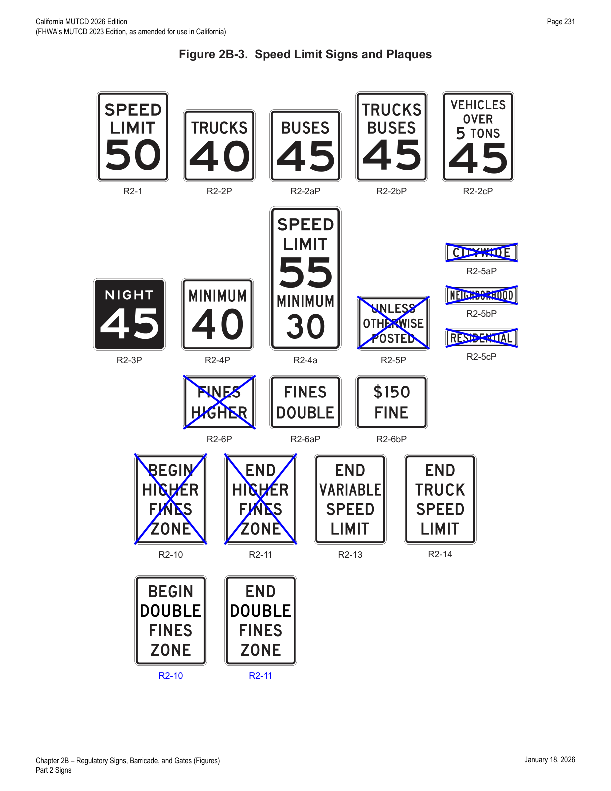
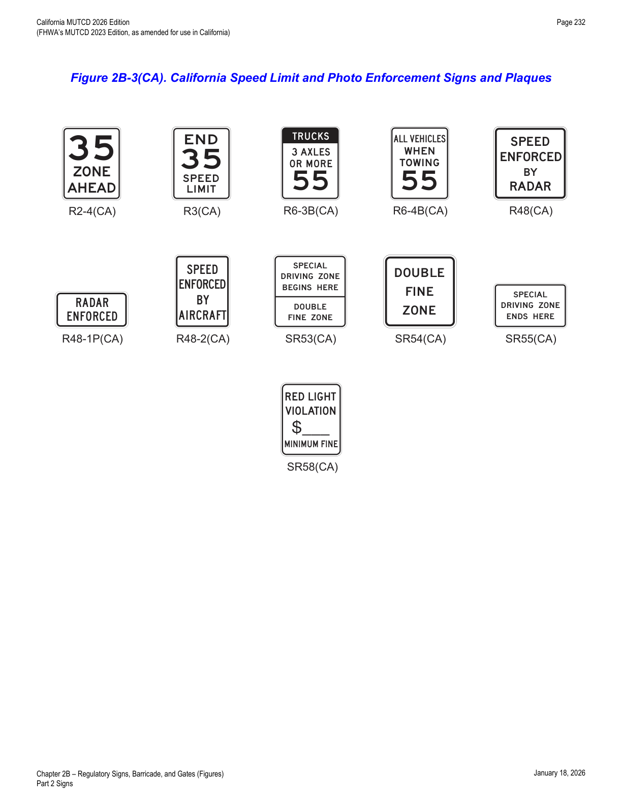
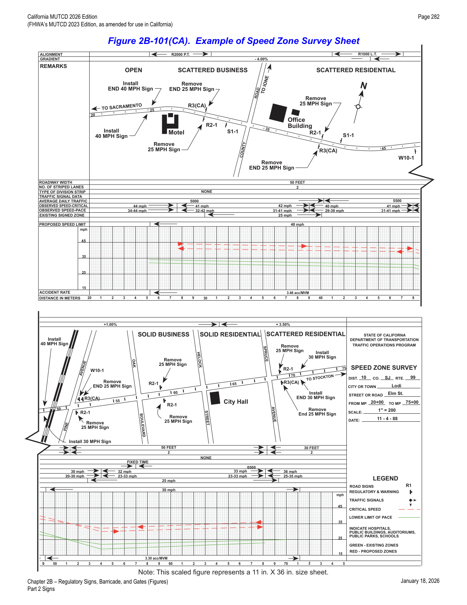
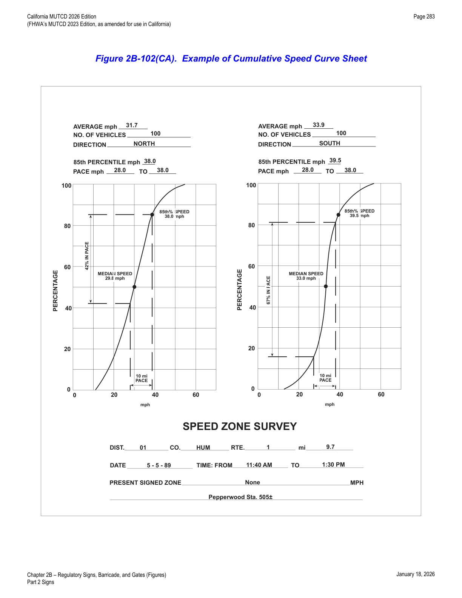
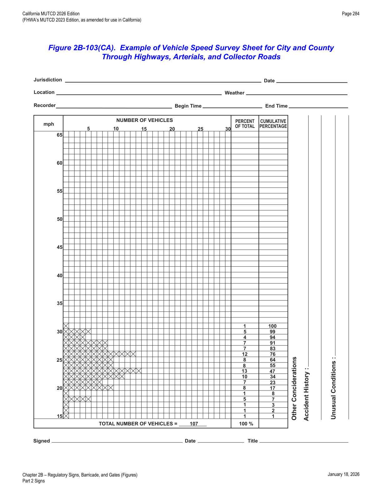
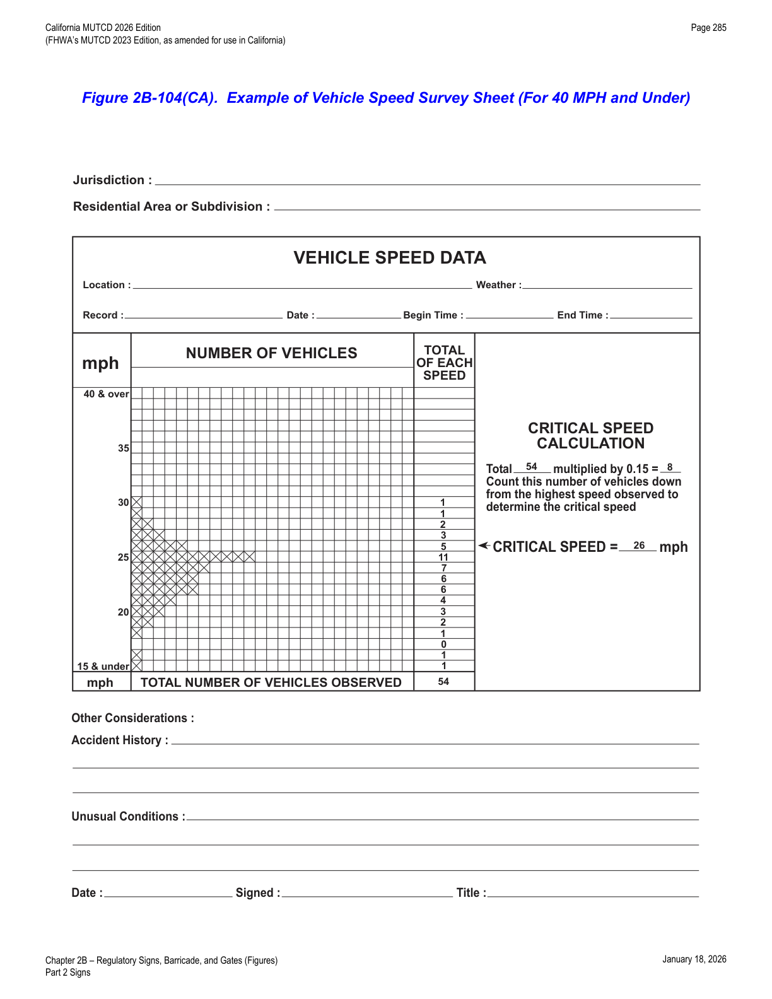
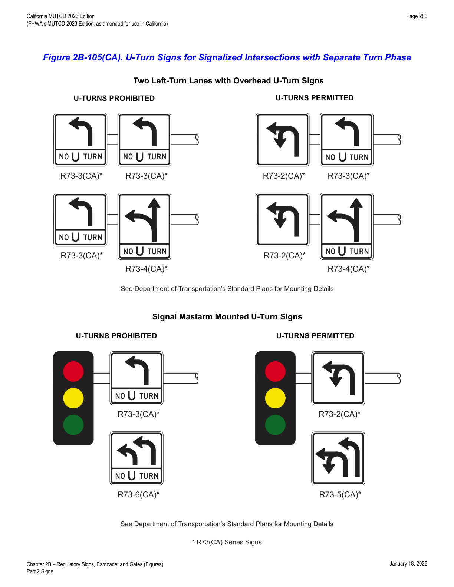
| Speed | Determined By | Roadway Facility | CVC Section |
|---|---|---|---|
| 15 mph | State or local authority | Railroad grade crossing with obstructed view; uncontrolled highway intersection with obstructed view; an alley | 22352.a.1 |
| 15 & 20 mph | State or local authority | Where the prima facie speed of 25 mph is more than reasonable or safe: narrow street not exceeding 25 feet (other than a State highway) in a business or residential area or public park; road near a school or senior center facility | 22358.3 & 22358.4 |
| 15 & 20 mph | State or local authority | Any highway in any business or residential district | 22352.b & 22357.1 |
| 25 mph | State or local authority | A street contiguous to a senior citizen facility, other than a State highway; adjacent to a children's playground in a public park (only during particular hours/days children are expected to use the facilities) | — |
| Speed | Determined By | Roadway Facility | CVC Section |
|---|---|---|---|
| 15 to 60 mph | Caltrans | State highway, based on an E&TS, where the 65 mph limit is more than reasonable or safe | 22354 |
| 15 to 60 mph | Local city council or county board of supervisors (for a Caltrans State highway) | Local entities may hold a public hearing on proposed increases/decreases; Caltrans shall consider the hearing results | 22354.5 |
| 30 to 65 mph | Local authority | Any street other than a State highway; by ordinance, may post a prima facie speed limit based on an E&TS where a speed > 25 mph would facilitate orderly, reasonable, and safe traffic movement | 22357 |
| 15 to 60 mph | Local authority | Any street other than a State highway; by ordinance, may post a prima facie speed limit based on an E&TS where the 65 mph limit is more than reasonable or safe | 22358 |
| 20 to 50 mph (trucks) | State or local authority | Highways under their jurisdiction where 55 mph is more than reasonable or safe for the vehicles named in CVC § 22406 (trucks and other large vehicles) | 22407 |
| Maximum 55 mph | State or local authority | Two-lane undivided highway; or any highway when driving: (a) a motortruck/truck tractor with >3 axles, (b) a passenger vehicle or bus towing another vehicle, (c) a school bus transporting a pupil, (d) a farm labor vehicle transporting passengers, (e) a vehicle transporting explosives, or (f) a trailer bus | 22349.b & .c and 22406 |
| Maximum 65 mph | State or local authority | Any highway, posted at 65 mph based upon an E&TS, for vehicles not subject to CVC § 22406 | 22349(a) & 22349 |
| Maximum freeway 70 mph | Caltrans | Freeways, after consultation with the CHP, based upon an E&TS (or, for newly constructed freeway segments, based on design standards and projected traffic volumes), for vehicles not subject to CVC § 22406 | 22356 |
| 85th-Percentile Speed (mph) | Rounding to nearest 5 mph increment (CVC § 22358.6(a)) | If rounding to nearest is up, may round down (CVC § 22358.6(c)) | If rounding to nearest is down, may additionally lower by 5 mph (CVC § 22358.6(b)) | If safety corridor or high concentration of bicyclists/pedestrians, may additionally lower by 5 mph (CVC § 22358.7) |
|---|---|---|---|---|
| 47.5–50.0 | 50 | 45 | N/A | 40 |
| 45.1–47.4 | 45 | N/A | 40 | 35 |
| 42.5–45.0 | 45 | 40 | N/A | 35 |
| 40.1–42.4 | 40 | N/A | 35 | 30 |
These example rows illustrate the maximum overall reduction ceiling of 12.4 mph from the 85th-percentile speed (Paragraph 12ae): e.g., a 47.4 mph 85th-percentile speed rounds down to 45, and — if additionally in a safety corridor or a high-concentration bicyclist/pedestrian location — may be further lowered to 35 mph.
| Category | Factors |
|---|---|
| Crash weighting factors to develop one serious/fatal-injury safety corridor | Crash severity (fatal crashes, serious injury crashes); mode (pedestrian-bicycle related crashes vs. vehicle/other); disadvantaged community status (MPO/RTPA or locally defined, based on the most current CalEnviroScreen); vulnerable populations (seniors age 65+, youth under 15, per the American Community Survey); school proximity (within 0.25 miles, per the California School Campus Database); systemic or predicted crashes |
| Crash density | Each roadway segment block may be converted into ~0.25-mile overlapping or contiguous "corridor" segments to create a consistent unit of measurement and assess the concentration of linear crash patterns within a defined distance. The highest-scoring corridor segments (most fatal + serious injury crashes per mile) are identified, with an appropriate threshold set for safety corridor eligibility. |
| Maintenance | The jurisdiction may establish a review and re-evaluation frequency for safety corridors, but this frequency need not exceed seven years. |
| Category | Generator |
|---|---|
| Land use | Employment centers; presence of retail; parks, multi-use trails, and recreational destinations; schools/universities; senior centers; cultural areas, entertainment spaces, or areas of community significance; religious facilities; health/medical facilities |
| Transit factors | Transit stops; Transit-Oriented Developments/Transit Priority Areas |
| Presence of pedestrian/bicyclist infrastructure | Sidewalk presence; crosswalk presence; bikeway presence; nearby signalized four-way intersections; presence of micromobility devices such as bicycles or scooters |
| Demographic factors | Presence of vulnerable groups (children, seniors, persons with disabilities, users of personal assistive mobility devices, the unhoused); MPO/RTPA or locally defined disadvantaged community status; presence of students (all levels) |
| Local data | Need identified in a safety analysis, such as a road safety audit or a formalized planning document (e.g., a local road safety plan) |
In practice, the E&TS/speed-zoning framework in this Section is the most heavily litigated and audited part of Chapter 2B for California practitioners. The practical workflow is: (1) run the speed zone survey (100-vehicle minimum sample, off-peak/free-flow conditions) and plot the cumulative speed curve to get the 85th-percentile and pace speeds; (2) round to the nearest 5 mph increment per CVC § 22358.6(a); (3) apply the one-way-only rounding relief in 12aa/12ab; (4) only if the segment is a documented, engineer-certified safety corridor or high-bicyclist/pedestrian-generator segment, apply the single additional 5 mph reduction under § 22358.7 — the 12.4 mph total cap (Paragraph 12ae) is an absolute ceiling that cannot be exceeded by stacking justifications. Always keep the underlying E&TS on file; its 5/7/14-year validity window is what protects a jurisdiction's radar/laser enforcement from being challenged as an unlawful "speed trap" under CVC § 40802.
2B.22Vehicle Speed Limit Plaques (R2-2P Series)
- 01Where a special speed limit applies to certain classes of vehicles, the Truck Speed Limit (R2-2P) plaque, Bus Speed Limit (R2-2aP) plaque, Truck-Bus Speed Limit (R2-2bP) plaque, or Vehicles Over X Tons Speed Limit (R2-2cP) plaque (see Figure 2B-3) shall be displayed below the Speed Limit (R2-1) sign, except as provided in Paragraph 2 of this Section.
- 01aWhere a special speed limit applies to certain classes of vehicles, the TRUCKS, 3 AXLES OR MORE 55 (R6-3B(CA)) sign, followed by the ALL VEHICLES WHEN TOWING 55 (R6-4B(CA)) sign, may be used instead. Refer to Section 2B.21 and CVC § 22406.
- 02The legend of a Vehicle Speed Limit (R2-2P series) plaque may be combined into a single sign and displayed below the SPEED LIMIT XX legend, similar to the Combined Maximum and Minimum Speed Limits (R2-4a) sign (see Section 2B.24). A different vehicle class legend may also be substituted on the R2-2P series plaque for other classes of vehicles not included in Paragraph 1 of this Section.
2B.23Night Speed Limit Plaque (R2-3P)
- 01Where different speed limits are prescribed for day and night, both limits shall be posted.
- 02A Night Speed Limit (R2-3P) plaque (see Figure 2B-3) should be reversed — using a white retroreflective legend and border on a black background.
- 03A Night Speed Limit plaque may be combined with, or installed below, the standard Speed Limit (R2-1) sign.
- 04Refer to CVC § 22355.
2B.24Minimum Speed Limit Plaque (R2-4P) and Combined Maximum and Minimum Speed Limits Sign (R2-4a)
- 01A Minimum Speed Limit (R2-4P) plaque (see Figure 2B-3) shall be displayed only in combination with a Speed Limit sign. Where used, the R2-4P plaque shall be mounted below a Speed Limit (R2-1) sign.
- 02Where engineering judgment determines that slow speeds on a highway might impede the normal and reasonable movement of traffic, the Minimum Speed Limit (R2-4P) plaque may be installed below a Speed Limit (R2-1) sign to indicate the minimum legal speed. In lieu of an R2-1/R2-4P assembly, the Combined Maximum and Minimum Speed Limits (R2-4a) sign may be used.
- 03Refer to CVC § 22400.
2B.25Higher Fines Signs and Plaque (R2-6P, R2-10, and R2-11)
- 01Except as provided in Paragraph 3 of this Section, if increased fines are imposed for traffic violations within a designated zone of a roadway, a BEGIN HIGHER DOUBLE FINES ZONE (R2-10) sign (see Figure 2B-3) or a FINES HIGHER DOUBLE (R2-6aP) plaque (see Figure 2B-3) shall be used to notify road users.
- 02If an R2-10 sign or an R2-6P plaque is posted to notify road users of increased fines, an END HIGHER DOUBLE FINES ZONE (R2-11) sign (see Figure 2B-3) shall be installed at the downstream end of the zone to notify road users of the zone's termination.
- 03The BEGIN HIGHER DOUBLE FINES ZONE (R2-10) sign or FINES HIGHER DOUBLE (R2-6aP) plaque may be omitted where the higher double fines zone is established by statute.
- 04The BEGIN HIGHER DOUBLE FINES ZONE sign or FINES HIGHER DOUBLE plaque should be located at the beginning of the temporary traffic control zone, school zone, or other applicable designated zone, and just beyond any interchanges, major intersections, or other major traffic generators.
- 05Agencies should limit the use of the Higher Double Fines signs and plaque to locations where work is actually underway, or to locations where roadway, shoulder, or other conditions — including the presence of a school zone and/or a reduced school speed limit zone — require a speed reduction or extra caution.
- 06The Higher Double Fines signs and plaque shall have a black legend and border on a white rectangular background. All supplemental plaques mounted below the Higher Double Fines signs and plaque shall likewise have a black legend and border on a white rectangular background.
- 07The FINES HIGHER DOUBLE plaque shall be mounted below an applicable regulatory or warning sign in a temporary traffic control zone (see Section 6G.08), a school zone (see Section 7B.06), or other applicable designated zone.
- 08Alternate legends, such as BEGIN (or END) DOUBLE FINES ZONE, may also be used for the R2-10 and R2-11 signs.
- 09The legend FINES HIGHER on the R2-6P plaque may be replaced by FINES DOUBLE (R2-6aP), $XX FINE (R2-6bP), or another legend appropriate to the specific regulation (see Figure 2B-3).
- 10The following may be mounted below an R2-10 sign or R2-6P plaque: (A) a supplemental plaque specifying the times the higher fines are in effect (similar to the S4-1P plaque shown in Figure 7B-1); (B) a supplemental plaque WHEN CHILDREN (WORKERS) ARE PRESENT; or (C) a supplemental plaque WHEN FLASHING (similar to the S4-4P plaque shown in Figure 7B-1) if used with a Speed Limit Sign Beacon (see Section 4S.04).
- 11In California, the CVC only allows doubling of fines, not higher fines of other denominations. Refer to CVC § 42010 (Safety Enhancement — Double Fine Zone), Section 6G.08, and CVC § 42009 (fines for offenses committed in a highway construction or maintenance area).
- 12The SPECIAL DRIVING ZONE BEGINS HERE — DOUBLE FINE ZONE (SR53(CA)) sign (refer to Figure 2B-3(CA)) shall be placed at the beginning of portions of highway designated and identified as Safety Enhancement — Double Fine Zones per CVC § 42010.
- 13The SPECIAL DRIVING ZONE ENDS HERE (SR55(CA)) sign (refer to Figure 2B-3(CA)) shall be placed at the end of portions of highway designated and identified as Safety Enhancement — Double Fine Zones per CVC § 42010.
- 14The DOUBLE FINE ZONE (SR54(CA)) sign (refer to Figure 2B-3(CA)) should be placed at major intersections within portions of highway designated and identified as a Safety Enhancement — Double Fine Zone, per CVC § 42010, to advise motorists upon entering the highway that they are in a double fine zone.
2B.26Movement Prohibition Signs (R3-1 through R3-4, R3-18, and R3-27)
- 00Motorists can make a semicircular or U-turn on a green signal or green arrow, except where such a turn is prohibited by signs. Refer to CVC §§ 21451 and 21454.
- 00aLocal authorities, by ordinance, may prohibit any turning movement by any vehicle at any intersection or between any designated intersections. Refer to CVC § 22113.
- 00bRefer to Section 2B.01 for information on ordinances and resolutions by local authorities that affect State highways.
- 00cCaltrans may restrict turning movements on State highways. Refer to CVC § 21352.
- 00dA thorough investigation is necessary to determine whether prohibited movements can be satisfactorily made at other locations without undue circuitry of travel.
- 00eRefer to CVC § 22101 for Turn Prohibition signs.
- 01Movement Prohibition signs (see Figure 2B-4) shall be installed where specific movements are prohibited at an intersection approach, except as provided in Paragraphs 13 and 17 of this Section.
- 02Movement Prohibition signs should only be used to prohibit a turn or through movement from an entire approach and should not be used to designate movements that are required or permitted from a specific lane or lanes on a multi-lane approach.
- 03Movement Prohibition signs should be placed where they will be most easily seen by road users who might intend to make the movement.
- 04If a No Right Turn (R3-1) sign (see Figure 2B-4) is used, at least one should be placed either over the roadway or at the right-hand corner of the intersection.
- 05If a No Left Turn (R3-2) sign (see Figure 2B-4) is used, at least one shall be placed over the roadway, at the far left corner of the intersection, on a median, or in conjunction with a STOP or YIELD sign located on the near right corner.
- 06Except as provided in Item C of Paragraph 11 of this Section for signalized locations, if a NO TURNS (R3-3) sign (see Figure 2B-4) is used, two signs should be used — one at a location specified for a No Right Turn sign and one at a location specified for a No Left Turn sign.
- 06aThe NO TURNS (R3-3) sign shall be used in advance of an intersection to indicate that turns are prohibited.
- 07If a No U-Turn (R3-4) sign (see Figure 2B-4) or a combination No U or Left Turn (R3-18) sign (see Figure 2B-4) is used, at least one should be used at a location specified for a No Left Turn sign.
- 07aThe appropriate R3-4 or R3-18 sign should be placed as follows: (A) on undivided roads without traffic signals, at the near right and far left corners of the intersection; (B) on undivided roads with traffic signals, at the far right and far left corners of the intersection, or on the signal mast arm; (C) on divided roads at both signalized and unsignalized intersections, in the median on the near and far side of the intersection, and on the signal mast arm at signalized intersections.
- 08If both left turns and U-turns are prohibited, the combination No U or Left Turn (R3-18) sign shall be used instead of separate R3-2 and R3-4 signs.
- 08aThe No U-Turn (R3-4) sign shall be used where U-turns are prohibited, except when Intersection Lane Control signs (R73(CA) series) are used at signalized intersections with separate left-turn phases.
- 08bThe R73(CA) series signs shall be installed adjacent to the signal face viewed by road users for the projection of the lane to which the sign applies.
- 09Sections 2B.27 through 2B.30 contain information regarding lane control signs that indicate the required or permitted movements from individual lanes.
- 10If a No Straight Through (R3-27) sign (see Figure 2B-4) is used, at least one should be placed either over the roadway or at a location visible to road users who might intend to travel straight through the intersection.
- 11If turn prohibition signs are installed in conjunction with traffic control signals: (A) the No Right Turn sign should be installed adjacent to a signal face viewed by road users in the right-hand lane; (B) the No Left Turn (or No U-Turn, or combination No U or Left Turn) sign should be installed adjacent to a signal face viewed by road users in the left-hand lane; (C) a NO TURNS sign should be placed adjacent to a signal face viewed by all road users on that approach, or two signs should be used.
- 12If turn prohibition signs are installed in conjunction with traffic control signals, an additional turn prohibition sign may be post-mounted to supplement the sign mounted overhead.
- 13Where ONE WAY signs are used (see Section 2B.49), No Left Turn and No Right Turn signs may be omitted.
- 13aOn one-way roads, the No Right/Left Turn (R3-1/R3-2) sign shall be placed at the near right/left corner facing traffic approaching the intersection.
- 14Where a movement restriction applies to certain vehicle classes, signs incorporating a supplementary legend, modified as appropriate, may be used to indicate the specific vehicle class restriction (R3-1b through R3-1d) or exception (R3-1e and R3-1f) (see Figure 2B-4). When the movement restriction applies only during certain time periods, the following Movement Prohibition signing alternatives may be used, listed in order of preference: (A) a blank-out or changeable message sign (see Chapter 2L) that displays the prohibited movement only during the time the prohibition is applicable, especially at signalized intersections; (B) permanently-mounted signs incorporating a supplementary legend showing the hours and days the prohibition applies (R3-1g and R3-1h) (see Figure 2B-4); (C) portable signs, installed by proper authority, located off the roadway at each corner of the intersection, used only during the time the movement prohibition applies.
- 15The blank-out, part-time, electronic-display Movement Prohibition sign shall consist of a red circle and diagonal with a white prohibited-movement symbol on an opaque black background.
- 16Movement Prohibition signs may be omitted at a ramp entrance to an expressway or a channelized intersection where the design clearly indicates the one-way traffic movement on the ramp or turning lane.
- 17The No Left Turn (R3-2) sign, the No U-Turn (R3-4) sign, and the combination No U or Left Turn (R3-18) sign shall not be used at approaches to roundabouts to prohibit drivers from turning left onto the circulatory roadway of a roundabout.
- 18At roundabouts, using R3-2, R3-4, or R3-18 signs to prohibit left turns onto the circulatory roadway might confuse drivers about the legal turning movements around the roundabout. Roundabout Circulation (R6-5P) plaques (see Section 2B.51) and/or ONE WAY (R6-1 or R6-2) signs are appropriate to indicate the travel direction within a roundabout.
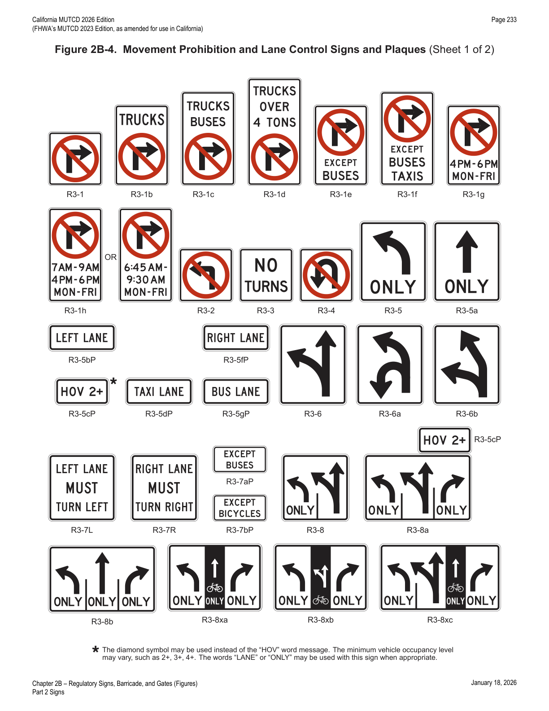
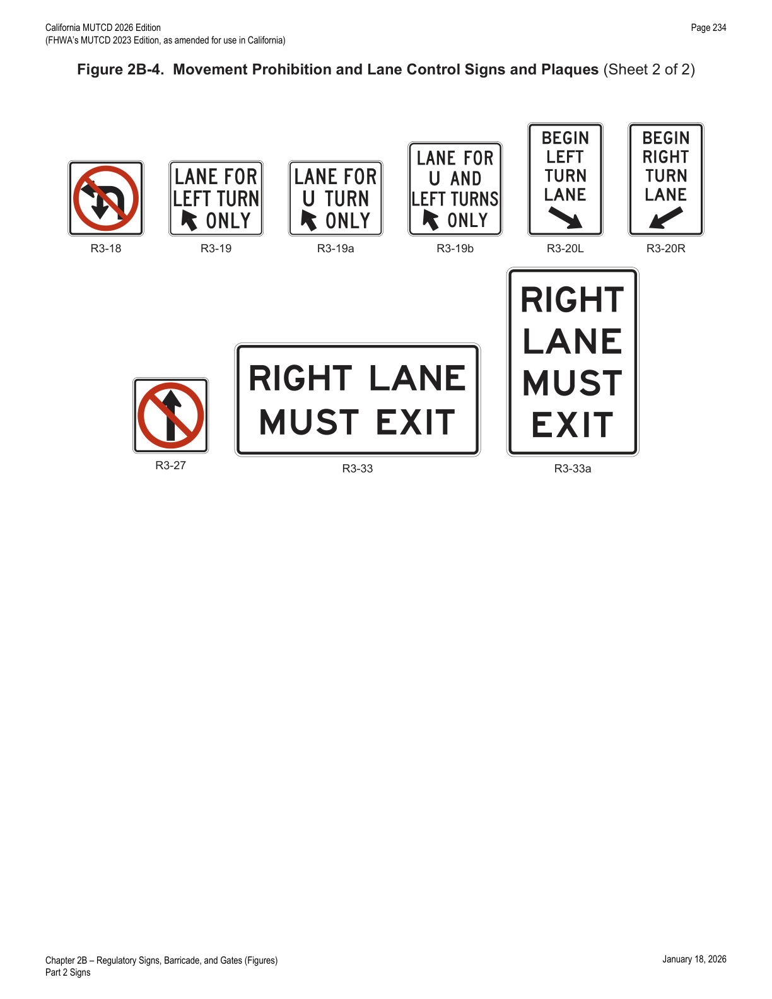
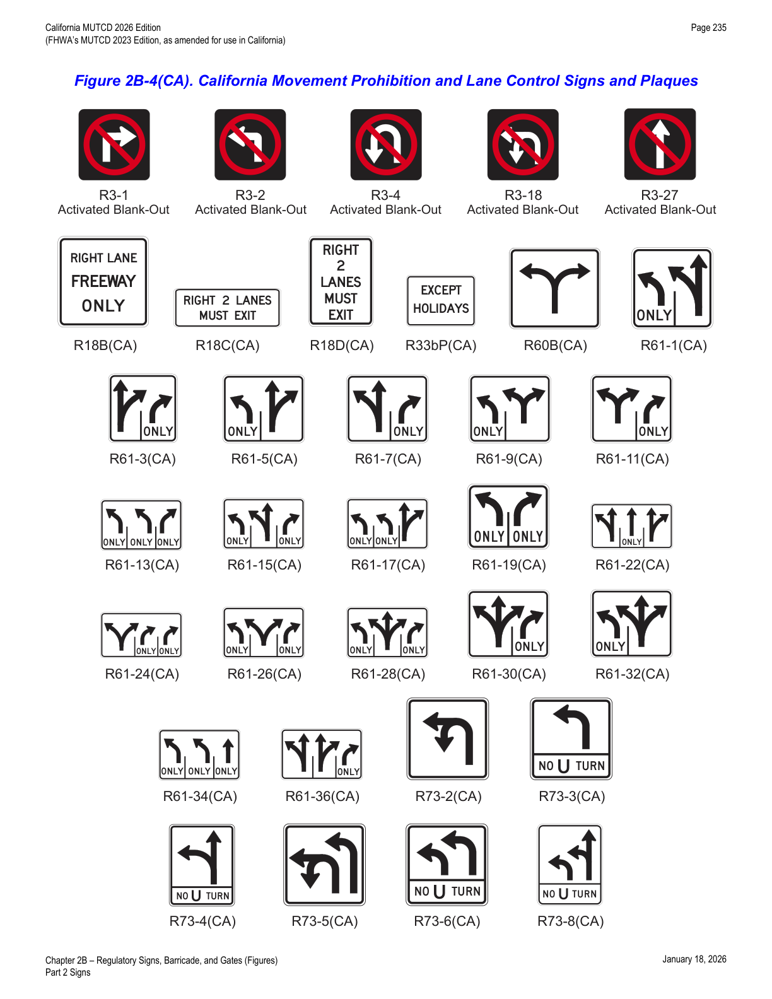
In practice, the R73(CA) series is the key tool that lets an agency avoid posting a blanket No U-Turn (R3-4) sign at a signalized intersection that has a separate protected left-turn phase — the R61/R73 CA-series signs let U-turns and left turns be regulated per lane and per signal phase rather than for the whole approach, which is why Paragraph 08a carves them out as the exception to the general R3-4 requirement.
2B.27Intersection Lane Control Signs (R3-5 through R3-8)
- 01Intersection Lane Control signs (see Figure 2B-4), if used, shall require road users in certain lanes to turn, shall permit turns from a lane where such turns would otherwise not be permitted, shall require a road user to stay in the same lane and proceed straight through an intersection, or shall indicate permitted movements from a lane.
- 02Intersection Lane Control signs have three applications: (A) Mandatory Movement Lane Control (R3-5 series and R3-7 series) signs; (B) Optional Movement Lane Control (R3-6 series) signs; and (C) Advance Intersection Lane Control (R3-8 series) signs.
- 03When Intersection Lane Control signs are mounted overhead, each sign used should be placed over the lane, or a projection of the lane, to which it applies.
- 04On signalized approaches where through lanes become mandatory turn lanes, multiple-lane turns with shared through/turning lanes, or other lane-use regulations exist that would be unexpected by unfamiliar road users, overhead Intersection Lane Control signs should be installed at the signalized location over the appropriate lanes (or their projections), and in advance of the intersection over the appropriate lanes.
- 05Where overhead mounting on the approach is impracticable for Advance and/or Intersection Lane Control signs, one of the following alternatives should be employed: (A) at locations where through lanes become mandatory turn lanes, a Mandatory Movement Lane Control (R3-7) sign should be post-mounted on the left-hand side of the roadway (where a through lane becomes a mandatory left-turn lane on a one-way street, or where a median of sufficient width is available) or on the right-hand side (where a through lane becomes a mandatory right-turn lane); (B) at locations where a through lane becomes a mandatory left-turn lane on a two-way street without a sufficiently wide median, and at locations with multiple-lane turns that include shared through/turning lanes, an Advance Intersection Lane Control (R3-8 series) sign should be post-mounted in a prominent location in advance of the intersection, with consideration given to an oversized version per Table 2B-1 and 2B-1(CA).
- 05aRefer to FHWA's List of Known Errors for an error in the Paragraph 5 text (see Section 1A.04).
- 06Use of an overhead sign for one approach lane should not require installation of overhead signs for the other lanes of that approach.
- 07Intersection Lane Control signs may be omitted where: (A) a turn bay has been provided by physical construction or pavement markings, and (B) only road users using such turn bays are permitted to make a turn in that direction.
- 08At roundabouts, Intersection Lane Control (R3-5, R3-6, and R3-8 series) signs may display any of the arrow symbol options shown in Figure 2B-5.
- 09The Intersection Lane Control (R61(CA) series and R73(CA) series) signs (refer to Figure 2B-4(CA)) may be used to indicate the types of movements permitted at intersections.
- 10Refer to Section 2B.26 for use of the R73(CA) series signs when a NO U-TURN restriction is required.
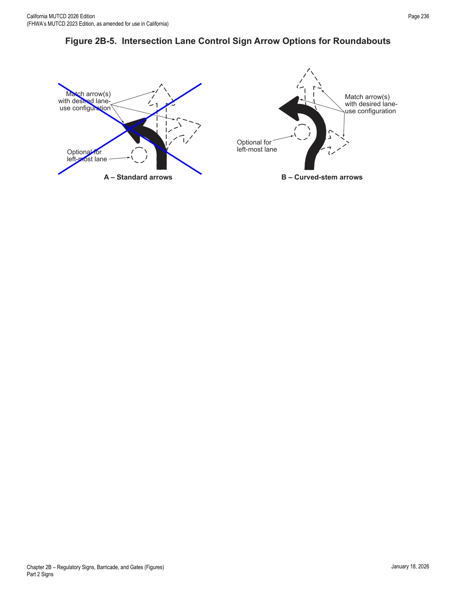
2B.28Mandatory Movement Lane Control Signs (R3-5, R3-5a, R3-7, R3-19 Series, and R3-20) and Plaques
- 01Mandatory Movement Lane Control (R3-5, R3-5a, and R3-7) signs (see Figure 2B-4), if used, shall indicate only the single vehicle movement required from the lane.
- 02The Mandatory Movement Lane Control (R3-5 and R3-5a) symbol signs shall include the legend ONLY and shall be mounted overhead over the specific lanes (or their projections) to which they apply (see Section 2B.27). The R3-7 sign shall be for post-mounting only and shall not be mounted at the far side of the intersection.
- 03When the mandatory movement applies to lanes exclusively designated for HOV traffic, the HOV 2+ (R3-5cP) supplemental plaque shall be used. When it applies to lanes not designated for HOV traffic but exclusively designated for buses and/or taxis, the TAXI LANE (R3-5dP) and/or BUS LANE (R3-5gP) supplemental plaques shall be used.
- 04If used, the Mandatory Movement Lane Control (R3-7) sign shall be located in advance of the intersection, such as near the upstream end of the mandatory movement lane, and/or at the near side of the intersection where the regulation applies.
- 05Use of the Mandatory Movement Lane Control (R3-7) word message sign should be limited to locations adjacent to the full-width portion of a mandatory turn lane. It should not be installed adjacent to a through lane in advance of a turn bay taper, or adjacent to a turn bay taper.
- 06Mandatory Movement Lane Control signs should be accompanied by lane-use arrow markings, especially where traffic volumes are high, where there is a high percentage of commercial vehicles, or where other distractions exist.
- 07Where the restriction does not apply to buses or bicycles, an EXCEPT BUSES (R3-7aP) or EXCEPT BICYCLES (R3-7bP) plaque should be used.
- 08The Through Only (R3-5a) sign may be used to require a road user in a particular lane to proceed straight through an intersection.
- 09The diamond symbol may be used instead of the word message HOV on the R3-5cP supplemental plaque.
- 10Where a mandatory left- or U-turn lane is added at a median location, a LANE FOR LEFT TURN ONLY (R3-19) or LANE FOR U TURN ONLY (R3-19a) sign may be post-mounted on the median at the beginning of the taper; where both a U-turn and a left turn are allowed, a LANE FOR U AND LEFT TURNS ONLY (R3-19b) sign may be used. Where an R3-19 series sign is used, Mandatory Movement Lane Control signs along the turn lane in the median may be omitted.
- 11The R3-19 series signs may be used where the added median turn lane is separated from the through lanes by a channelizing or divisional island.
- 12On an approach to a mandatory turn lane where traffic regularly enters the shoulder to access the turn lane inappropriately, creating safety or operational issues, a DO NOT DRIVE ON SHOULDER (R4-17) sign (see Section 2B.43) may be used to supplement the standard Mandatory Movement Lane Control (R3-5 and/or R3-7 series) signs.
- 13Refer to CVC § 22101 for Mandatory Movement Lane Control signs.
- 14Signs or markings should be repeated in advance of mandatory turn lanes when necessary to prevent entrapment and to help motorists select the appropriate lane before reaching the end of the line of waiting vehicles.
- 15Refer to Section 2C.50 for warning signs used in advance of the R3-7 sign.
- 16The RIGHT (LEFT) LANE FREEWAY ONLY (R18B(CA)) sign (refer to Figure 2B-4(CA)) should be used on non-freeway facilities to indicate that a particular lane leads only to a freeway entrance and on to the freeway, in conjunction with, and at the beginning of, the 8-inch solid white lines indicating that traffic in that lane has a mandatory movement leading to the freeway.
2B.29Optional Movement Lane Control Signs (R3-6 Series)
- 01Optional Movement Lane Control (R3-6, R3-6a, and R3-6b) signs (see Figure 2B-4), if used, shall be used for two or more movements from a specific lane, or to emphasize permitted movements. The sign shall be mounted overhead over the specific lane (or its projection) to which it applies.
- 02If used, Optional Movement Lane Control signs shall indicate all permissible movements from the specific lane.
- 03Because more than one movement is permitted from the lane, the word message ONLY shall not be used on an Optional Movement Lane Control sign.
- 04Optional Movement Lane Control signs shall be used for two or more movements from a specific lane where a movement not allowed by State statute or local ordinance is permitted.
- 05Optional Movement Lane Control signs shall not be used alone to effect a turn prohibition.
- 06If used, the Optional Movement Lane Control sign should be located overhead in advance of the intersection, such as near the upstream end of an adjacent mandatory movement lane, and/or overhead at the intersection where the regulation applies.
2B.30Advance Intersection Lane Control Signs (R3-8 Series)
- 01Advance Intersection Lane Control (R3-8, R3-8a, and R3-8b) signs (see Figure 2B-4) should be used to indicate the configuration of all lanes ahead where there are optional lanes, mandatory turn lanes without turn bays, or un-shadowed turn lanes.
- 02The word messages ONLY, THRU, HOV 2+, TAXI, FWY, TRUCKS OK, BUS, or BIKE, or the bicycle symbol, may be used within the border in combination with the arrow symbols of the R3-8 sign series. The R3-5cP, R3-5dP, and R3-5gP supplemental plaques may be installed at the top outside border of the R3-8 sign over the applicable lane designation. The diamond symbol may be used instead of the word message HOV, and the minimum allowable vehicle occupancy requirement may vary based on the level established for a particular facility.
- 03Where a bicycle lane is located between two general-purpose lanes, the R3-8 series signs may be modified to show the bicycle lane with a white legend on a black background, in accordance with the designs of the R3-8x series signs (see Figure 2B-4).
- 04When used, an Advance Intersection Lane Control sign should be placed at an adequate distance in advance of the intersection, either along the lane tapers or at the beginning of the turn lane, so road users can select the appropriate lane (see Figure 2A-4).
- 04aAdvance Intersection Lane Control (R3-8, R3-8a, and R3-8b) signs may be installed at intersections with short turn-lane storage capacity.
- 05An Advance Intersection Lane Control sign may be repeated closer to the intersection along the approach for additional emphasis.
- 06An Advance Intersection Lane Control (R3-8 series) sign shall not be mounted at the far side of the intersection to which it applies.
- 07Where three or more approach lanes are available to traffic, Advance Intersection Lane Control (R3-8 series) signs, if used, shall be post-mounted in advance of the intersection and shall not be mounted overhead.
- 08When only the two outermost lanes of the roadway are shown on an R3-8 sign, the R3-5bP or R3-5fP plaque shall be mounted above the R3-8 sign.
2B.31RIGHT (LEFT) LANE MUST EXIT Signs (R3-33, R3-33a)
- 01A RIGHT (LEFT) LANE MUST EXIT (R3-33) sign (see Figure 2B-4) may be used to supplement an overhead EXIT ONLY guide sign, informing road users that traffic in the right-hand (left-hand) lane of a roadway approaching a grade-separated interchange is required to depart the roadway on the exit ramp at the next interchange.
- 01aThe RIGHT (LEFT) LANE MUST EXIT (R3-33) sign (refer to Figure 2B-4) shall be used to indicate a freeway lane drop. The R3-33 sign shall be placed at the beginning of the 8-inch solid white line approaching the exit ramp.
- 02The R3-33a sign (see Figure 2B-4) may be used in place of the R3-33 sign where the roadside width is limited and will not accommodate the R3-33 sign.
- 02aThe R18C(CA) or R18D(CA) sign (refer to Figure 2B-4(CA)) may be used in place of the R3-33 or R3-33a sign where multiple lanes are required to depart the roadway on the exit ramp at the next interchange.
- 03Section 2C.50 contains information regarding a warning sign that can be used in advance of lane drops at grade-separated interchanges.
2B.32Two-Way Left-Turn-Only Signs (R3-9a and R3-9b) and Plaques
- 01A Two-Way Left-Turn-Only (R3-9a or R3-9b) sign (see Figure 2B-6) should be used in conjunction with the required pavement markings where a non-reversible lane is reserved for the exclusive use of left-turning vehicles in either direction and is not used for passing, overtaking, or through travel.
- 02The post-mounted R3-9b sign may be used as an alternate to, or a supplement to, the overhead R3-9a sign. The legend BEGIN or END may be used within the border of the main sign itself, or on an R3-9cP or R3-9dP plaque (see Figure 2B-6) mounted immediately above it.
- 03Signing is especially helpful to drivers in areas where the two-way left-turn-only maneuver is new, in areas subject to environmental conditions that frequently obscure pavement markings, and on peripheral streets with two-way left-turn-only lanes leading to an extensive system of routes with such lanes.
- 04Refer to Figure 3A-108(CA) and Figure 3B-7(CA) for pavement marking applications for Two-Way Left-Turn Lanes.
2B.33BEGIN and END Plaques (R3-9cP and R3-9dP)
- 01The BEGIN (R3-9cP) or END (R3-9dP) plaque (see Figure 2B-6), mounted directly above a regulatory sign, may be used to inform road users of the location where a regulatory condition begins or ends.
2B.34Reversible Lane Control Signs (R3-9e through R3-9i)
- 01A reversible lane may be used for through traffic (with left turns either permitted or prohibited) in alternating directions during different periods of the day, and the lane may also be used for exclusive left turns in one or both directions during other periods. Reversible Lane Control (R3-9e through R3-9i) signs (see Figure 2B-6) may be either static or changeable message type, and may be either post-mounted or overhead. Lane-use control signals (see Chapter 4T) may also be used for reversible lanes.
- 02Where an engineering study determines that lane-use control signals or physical barriers are not necessary, the lane shall be controlled by overhead Reversible Lane Control signs (see Figure 2B-7).
- 03Post-mounted Reversible Lane Control signs shall be used only as a supplement to overhead signs or signals. Post-mounted signs shall be identical in design to the overhead signs, and an additional legend such as CENTER LANE shall be added to the top of the sign (R3-9f) to indicate which lane is controlled.
- 04Reversing traffic flow may be controlled with pavement markings and Reversible Lane Control signs (without lane-use control signals) when all of the following conditions are met: (A) only one lane is being reversed; (B) an engineering study indicates that Reversible Lane Control signs alone would result in an acceptable level of safety and efficiency; and (C) there are no unusual or complex operations in the reversible lane pattern.
- 05Reversible Lane Control signs shall contain the legend or symbols designating the allowable uses of the lane and the time periods such uses are allowed. Where symbols and legends are used, their meanings shall be as shown in Table 2B-2.
- 06Reversible Lane Control signs shall consist of a white background with a black legend and border, except for the R3-9e sign, where the color red is used for the X symbol.
- 07Symbol signs, such as the R3-9e sign, shall consist of the appropriate symbol in the upper portion of the sign with the applicable times of day and days of the week below it. All times of day and days of the week shall be accounted for on the sign to eliminate confusion to the road user.
- 08In situations where more than one message is conveyed to the road user, such as on the R3-9e sign, the sign legend shall be arranged as follows: (A) the prohibition or restriction message is the primary legend and shall be on top for word message signs and to the far left for symbol signs; (B) the permissive use message shall be displayed as the second legend; and (C) the OTHER TIMES message shall be displayed at the bottom for word message signs and to the far right for symbol signs.
- 09Symbol signs may also include a downward-pointing arrow with the legend THIS LANE. The term OTHER TIMES may be used for either the symbol or word message sign.
- 10A Reversible Lane Control sign shall be mounted over the approximate center of the lane being reversed.
- 11If the vertical or horizontal alignment is curved to the degree that a driver would be unable to see at least one sign — and preferably two signs — additional overhead signs shall be installed. Sign placement shall be such that the driver has a definite indication of the lanes specifically reserved for use at any given time. Special consideration shall be given to major generators introducing traffic between the normal sign placements.
- 12Transitions at the entry to and exit from a section of roadway with reversible lanes shall include advance signs to notify or warn drivers of the boundaries of the reversible lane controls. The R3-9g or R3-9h signs (see Figure 2B-6) shall be used for this purpose.
- 13More than one End Reverse Lane (R3-9i) sign (see Figure 2B-6) may be used at the termination of the reversible lane to emphasize the importance of the message.
- 14Where longitudinal barriers separate opposing directions of traffic, the R3-9g or R3-9h signs may be omitted.
- 15Flashing beacons, if used to supplement overhead Reversible Lane Control signs, shall comply with the applicable requirements for flashing beacons in Chapter 4S.
- 16When used in conjunction with Reversible Lane Control signs, Turn Prohibition (R3-1 through R3-4, and R3-18) signs shall be mounted overhead and separate from the Reversible Lane Control signs, and shall be designed and installed in accordance with Section 2B.26.
- 17For additional emphasis, a supplemental plaque stating the distance of the prohibition, such as NEXT 1 MILE, should be added to Turn Prohibition signs used in conjunction with Reversible Lane Control signs.
- 18If used, overhead signs should be located at intervals not greater than ¼ mile. The bottom of overhead Reversible Lane Control signs should not be more than 19 feet above the pavement grade.
- 19Where more than one sign is used at the termination of a reversible lane, the signs should be at least 250 feet apart. Longer distances are appropriate for streets with speeds over 35 mph, but the separation should not exceed 1,000 feet.
- 20Because left-turning vehicles have a significant impact on the safety and efficiency of a reversible lane operation, if a mandatory left-turn lane or two-way left-turn lane cannot be incorporated into the lane-use pattern for a particular peak or off-peak period, consideration should be given to prohibiting left turns and U-turns during that period.
- 21Reversible Lane Control signs and parking signs should be consistent in message during the same operational periods.
| Symbol / Word Message | Meaning |
|---|---|
| Red X on white background | Lane closed |
| Upward-pointing black arrow on white background (if left turns are permitted, the arrow is modified to show a left/through arrow) | Lane open for through travel and any turns not otherwise prohibited |
| Black two-way left-turn arrows on white background with legend ONLY | Lane may be used only for left turns in either direction (i.e., as a two-way left-turn lane) |
| Black single left-turn arrow on white background with legend ONLY | Lane may be used only for left turns in one direction (without opposing left turns in the same lane) |
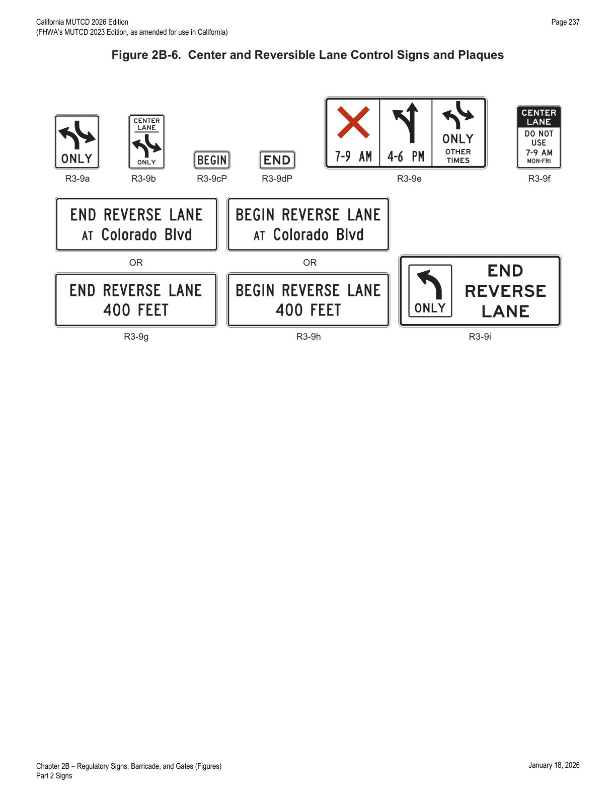
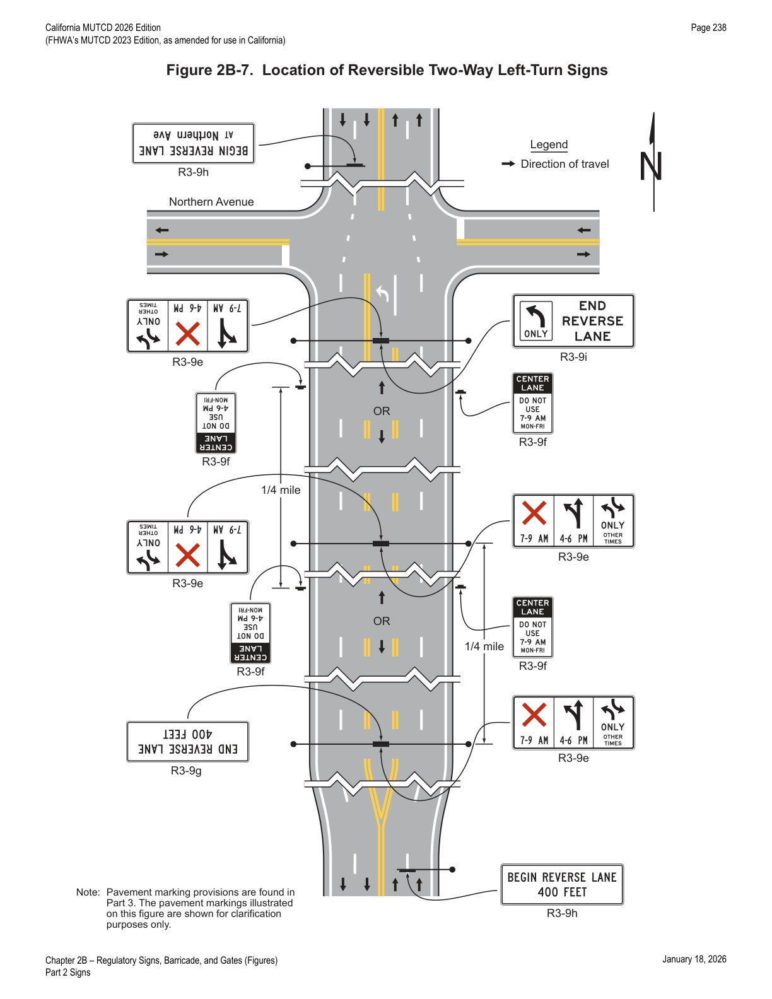
2B.35Jughandle Signs (R3-23, R3-24, R3-25, and R3-26 Series)
- 01A jughandle turn is a left turn or U-turn that, because of special geometry, is made by initially making a right turn. This type of turn can increase the operational efficiency of a roadway by eliminating the need for mandatory left-turn lanes, and can increase the efficiency of a traffic control signal by eliminating the need for protected left-turn phases. A jughandle turn can also provide an opportunity for trucks and commercial vehicles to make a U-turn where the median and roadway are not wide enough to accommodate a traditional U-turn by these vehicles.
- 02Figure 2B-8 shows the various signs that can be used for signing jughandle turns. Figure 2B-9 shows examples of regulatory and destination guide signing for various types of jughandle turns.
- 03On multi-lane roadways, since road users generally anticipate needing to be in the left-hand lane when approaching a location where they desire to turn left or make a U-turn, an ALL TURNS FROM RIGHT LANE (R3-23) or a U TURN FROM RIGHT LANE (R3-23a) sign (see Figure 2B-8) shall be installed in advance of the location to inform drivers that left turns and/or U-turns will be made from the right-hand lane.
- 04Where a median of sufficient width is available, supplemental regulatory or guide signs may also be placed on the left-hand side of the roadway.
- 05The R3-24 series sign, with an upward diagonal arrow pointing to the right, if the jughandle entrance is designed as an exit ramp (see Drawings A and B in Figure 2B-9), or the R3-25 series sign, with a horizontal arrow pointing to the right, if the jughandle entrance is designed as an intersection, shall be installed on the right-hand side of the roadway at the entrance to the jughandle. The legend on the sign shall be ALL TURNS, U TURN, or U AND LEFT TURNS, as appropriate.
- 06If the jughandle is designed such that the jughandle entrance is downstream of the location where the turn would normally have been made (see Drawing C in Figure 2B-9), the R3-26 series sign, with an arrow pointing straight upward, shall be installed on the right-hand side of the roadway at the intersection to inform road users that they need to proceed straight through the intersection to make a left turn or U-turn. The legend on the sign shall be U TURN or U AND LEFT TURNS, as appropriate.
- 07The R3-24, R3-25, and R3-26 series signs are designed to be mounted below conventional guide signs.
- 08Section 2C.12 contains information regarding the use of advisory exit and ramp speed signs for exit ramps.
- 09Section 2D.40 contains information regarding the use of guide signs for jughandles.
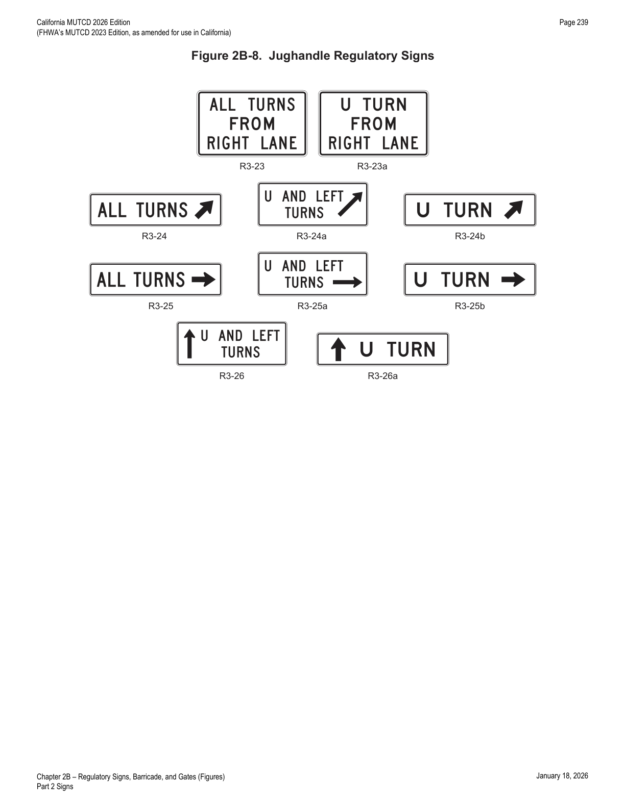
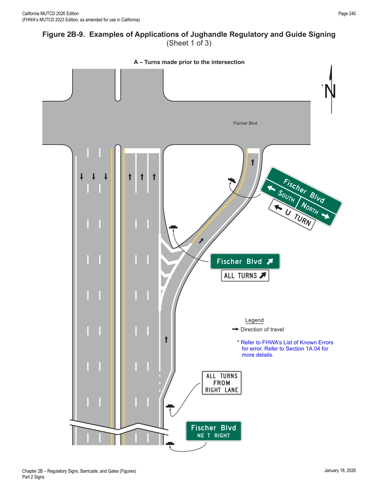
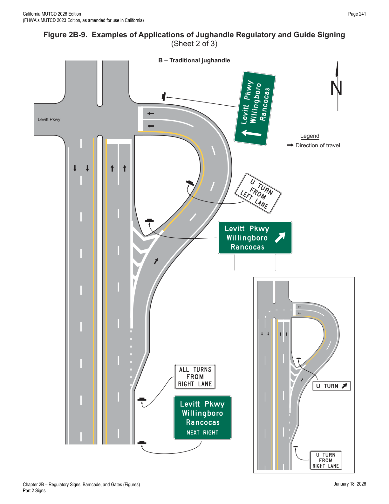
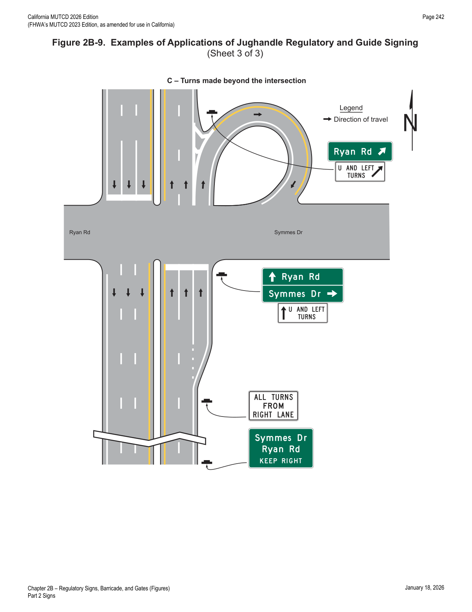
In practice, the choice among the R3-24 (Drawing A), R3-25 (Drawing B), and R3-26 (Drawing C) series hinges entirely on where the jughandle physically diverges relative to the main intersection: upstream and ramp-like (R3-24), upstream and at-grade (R3-25), or downstream of where the turn would conventionally be made (R3-26, requiring drivers to first go straight through the main intersection). Getting the right series matched to the geometry is what prevents the classic jughandle wrong-turn mistake by unfamiliar drivers.
2B.36DO NOT PASS Sign (R4-1)
- 01The DO NOT PASS (R4-1) sign (see Figure 2B-10) may be used in addition to pavement markings (see Section 3B.03) to emphasize the restriction on passing.
- 01aWhen used, the DO NOT PASS sign shall be used at the beginning of, and at intervals within, a zone through which sight distance is restricted or where other conditions make overtaking and passing inappropriate.
- 01bThe R4-1 sign shall not be used on a freeway or expressway, etc., where two or more lanes remain after a lane has been dropped or reduced. Refer to Section 2B.36.
- 02If signing is needed on the left-hand side of the roadway for additional emphasis, NO PASSING ZONE (W14-3) signs may be used (see Section 2C.53).
- 03Standards for determining the location and extent of no-passing zone pavement markings are set forth in Section 3B.03.
- 04Typical examples of where the R4-1 sign could be applied are shown in Figures 3B-14(CA) and 3B-104(CA).
- 05The R4-1 sign may be used in conjunction with temporary traffic control signs.
2B.37PASS WITH CARE Sign (R4-2)
- 01The PASS WITH CARE (R4-2) sign (see Figure 2B-10) should be installed at the downstream end of a no-passing zone if a DO NOT PASS sign has been installed at the upstream end of the zone.
2B.38KEEP RIGHT EXCEPT TO PASS Sign (R4-16), SLOWER TRAFFIC KEEP RIGHT Sign (R4-3), and TRUCKS USE RIGHT LANE Sign (R4-5)
- 01The KEEP RIGHT EXCEPT TO PASS (R4-16) sign (see Figure 2B-10) may be used on roadways where there are two lanes in one direction of travel to direct drivers to stay in the right-hand lane except when they are passing another vehicle. Refer to CVC 21659.
- 02If used, the KEEP RIGHT EXCEPT TO PASS sign should be installed at or just beyond the beginning of a two-lane section of roadway and at selected locations along two-lane roadways where additional emphasis is needed.
- 03The SLOWER TRAFFIC KEEP RIGHT (R4-3) or the TRUCKS USE RIGHT LANE (R4-5) sign (see Figure 2B-10) may be used on multi-lane through roadways to improve capacity or reduce unnecessary lane changing due to the presence of slower vehicles that impede the normal flow of traffic.
- 03aThe SLOWER TRAFFIC KEEP RIGHT (R4-3) sign shall be used at the beginning of passing lanes. Refer to CVC 21654.
- 04If used, the SLOWER TRAFFIC KEEP RIGHT sign or the TRUCKS USE RIGHT LANE sign should be installed at or just beyond the beginning of a multi-lane roadway section or at the beginning of an extra lane provided for trucks and/or other slow-moving traffic, and at selected locations where there is a tendency on the part of some road users to drive in the left-hand lane(s) below the normal speed of traffic. These signs should not be used on the approach to an interchange or through an interchange area where traffic is entering or exiting, or along deceleration or acceleration lanes.
- 04aThe TRUCKS USE RIGHT LANE (R4-5) sign (see Figure 2B-10) shall be used when a climbing lane is provided and it is necessary to prohibit trucks from passing slower-moving vehicles. Signs shall be placed at the beginning of the restriction and at approximately 0.25-mile intervals. When the restriction is necessary only during certain hours, the Specific Hours/Day (R82aP(CA)) Plaque (see Figure 2B-10(CA)) shall be placed below the R53B(CA) sign.
- 04bThe TRUCKS USE RIGHT LANE (R4-5) sign may be placed to advise trucks that they must use the right lane except to pass slow-moving vehicles, as provided in CVC 21654.
- 05The TRUCKS USE RIGHT LANE sign may be used as a supplement to the SLOWER TRAFFIC KEEP RIGHT sign.
- 05aThe TRUCKS OK (R70(CA)) sign (see Figure 2B-10(CA)) may be used to allow trucks to legally use a lane other than the right lane(s) to facilitate the safe and orderly movement of traffic, such as in advance of freeway branch connections, lane drops, etc. If the TRUCKS OK (R70(CA)) sign cannot fit on an overhead sign structure, the TRUCKS (R70A(CA)) and OK (R70B(CA)) sign panels may be used in place of the TRUCKS OK (R70(CA)) sign. Refer to CVC 21655.
- 05cRefer to CVC 21655.
- 06If an extra lane has been provided for trucks and other slow-moving traffic, a Lane Ends sign (see Section 2C.47) should be installed in advance of the point where the extra lane ends. Appropriate pavement markings should be installed at both the upstream and downstream ends of the extra lane (see Section 3B.12 and Figure 3B-14).
- 07The TRUCKS 3 AXLES OR MORE RIGHT 2 LANES ONLY (R6-3A(CA)) sign (see Figure 2B-10(CA)) may be used on divided highways having four or more lanes for traffic in one direction where this type of vehicle, unless otherwise designated, is restricted to the two right lanes. Refer to CVC 21655 and 22348(c).
- 08The ALL VEHICLES WHEN TOWING RIGHT 2 LANES ONLY (R6-4A(CA)) sign (see Figure 2B-10(CA)) may be used on divided highways having four or more lanes for traffic in one direction where this type of vehicle, unless otherwise designated, is restricted to the two right lanes. Refer to CVC 21655 and 22348(c).
- 09The END TRUCK LANE CONTROL (R53E(CA)) sign (see Figure 2B-10(CA)) shall be placed at the end of a segment of roadway in which trucks are restricted to a particular lane.
- 10The YIELD TO UPHILL TRAFFIC (R55(CA)) sign (see Figure 2B-10(CA)) shall be used facing downhill traffic where a climbing lane has been provided and where a one-direction no-passing marking has been placed to allow downhill traffic to pass. Refer to CVC 21661. Refer to Section 3B.01 for further details.
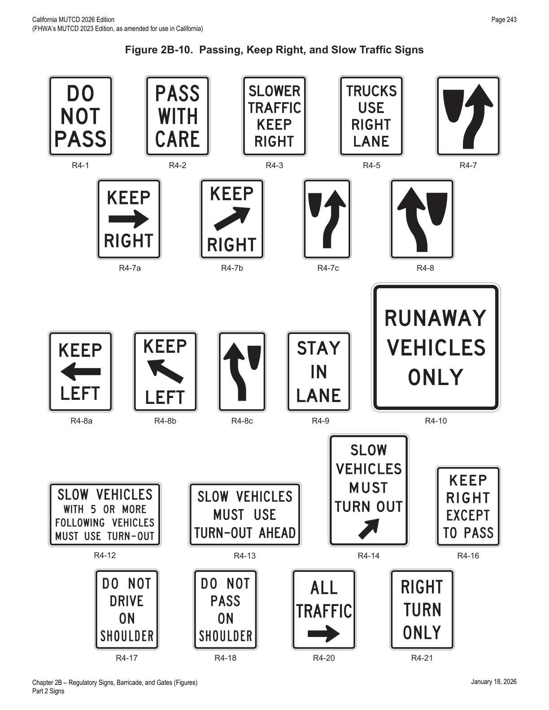
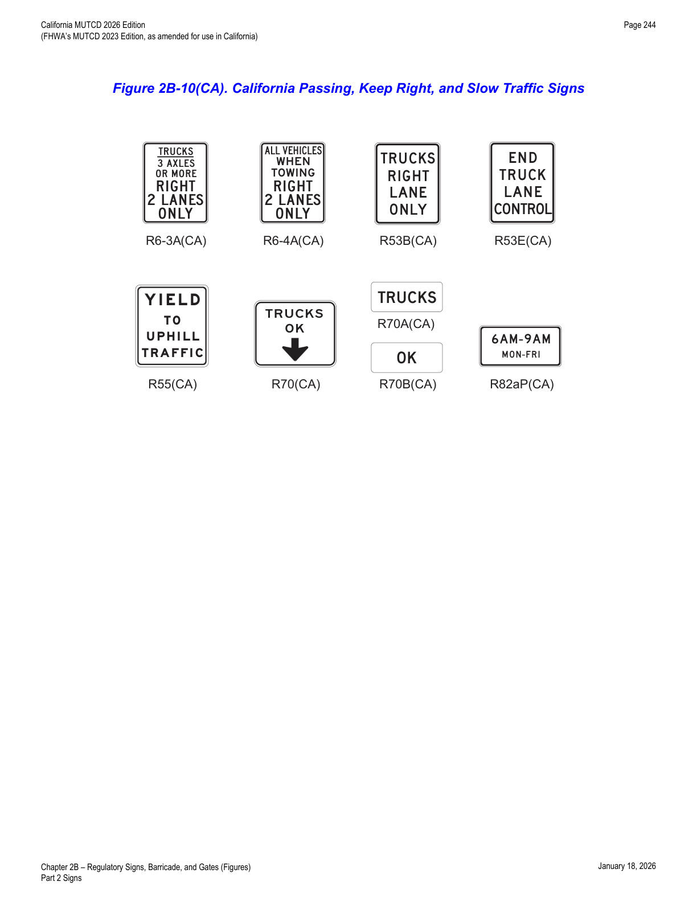
2B.39Keep Right and Keep Left Signs (R4-7 Series and R4-8 Series)
- 01The Keep Right (R4-7) sign (see Figure 2B-10) may be used at locations where it is necessary for traffic to pass only to the right-hand side of a roadway feature or obstruction. The Keep Left (R4-8) sign (see Figure 2B-10) may be used at locations where it is necessary for traffic to pass only to the left-hand side of a roadway feature or obstruction.
- 02At locations where it is not readily apparent that traffic is required to keep to the right, a Keep Right sign should be used.
- 03If Keep Right signs are installed at the start of a median or at a median opening, they shall be placed as close as practicable to the approach ends of the medians, and shall be visible to traffic on the divided highway and angled toward the applicable crossroad approach as shown in Figure 2B-20.
- 04If used, the Keep Right sign should be mounted on the face of or just in front of a pier or other obstruction separating opposite directions of traffic in the center of the highway such that traffic will have to pass to the right-hand side of the sign.
- 05Where the approach end of the island channelizes traffic away from the approach direction, the word legend (R4-7a, R4-7b, R4-8a, or R4-8b) signs (see Figure 2B-10) should be used instead of the symbol (R4-7 or R4-8) signs to emphasize the degree of curvature away from the approach direction (see Figure 2B-11).
- 06Where a regulatory sign is used within the central island of a neighborhood traffic circle to direct traffic counter-clockwise around the central island, the Keep Right with diagonal arrow (R4-7b) sign should be used (see Figure 2B-24). The mounting height of the sign should be at least 4 feet, measured vertically from the bottom of the sign to the elevation of the near edge of the traveled way.
- 07The Keep Right (Left) sign shall not be installed on the right-hand (left-hand) side of the roadway in a position where traffic must pass to the left-hand (right-hand) side of the sign.
- 08The Keep Right sign may be omitted at intermediate ends of divisional islands and medians.
- 09Word message KEEP RIGHT (LEFT) with an arrow (R4-7a or R4-7b) signs (see Figure 2B-10) may be used instead of the R4-7 or R4-8 symbol signs.
- 10A narrow Keep Right (R4-7c) sign (see Figure 2B-10) may be installed on the approach end of a median island that is less than 4 feet wide at the point where the sign is to be located.
- 11A narrow Keep Right (R4-7c) sign shall not be installed on a median island that has a width of 4 feet or more at the point where the sign is to be located.
- 12The Keep Right sign shall be installed in the median of a divided highway crossing that functions as a single intersection such that it is visible to traffic on the divided highway and angled as needed toward the applicable crossroad approach as shown in Figure 2B-20.
- 12aIf the median is not wide enough to accommodate the KEEP RIGHT or narrow Keep Right sign, the sign may be omitted if all other applicable standards are met.
- 13Section 2B.49 provides more information about the use of the Keep Right sign in combination with or in lieu of ONE WAY signs at divided highway crossings.
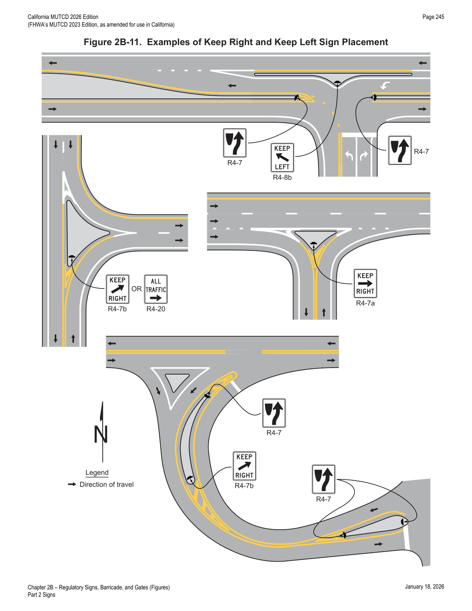
2B.40STAY IN LANE Sign (R4-9)
- 01A STAY IN LANE (R4-9) sign (see Figure 2B-10) may be used on multi-lane highways to direct road users to stay in their lane until conditions permit shifting to another lane.
- 02If a STAY IN LANE sign is used, it should be accompanied by a solid double white lane line(s) to prohibit lane changing.
2B.41RUNAWAY VEHICLES ONLY Sign (R4-10)
- 01A RUNAWAY VEHICLES ONLY (R4-10) sign (see Figure 2B-10) shall be installed near a truck escape (or runaway truck) ramp entrance to discourage other road users from entering the ramp.
- 02The NO STOPPING ANY TIME (R26A(S)(CA)) signs (see Figure 2B-25(CA)) shall be placed as required to keep motorists from stopping in the path of runaway trucks.
- 03Refer to Figure 3G-103(CA) for runaway truck signing.
2B.42Slow Vehicle Turn-Out Signs (R4-12, R4-13, and R4-14)
- 01On two-lane highways in areas where traffic volumes and/or vertical or horizontal curvature make passing difficult, turn-out areas are sometimes provided for the purpose of giving a group of faster vehicles an opportunity to pass a slow-moving vehicle.
- 02A SLOW VEHICLES WITH XX (5 OR MORE) FOLLOWING VEHICLES MUST USE TURN-OUT (R4-12) sign (see Figure 2B-10) shall be installed in advance of the first turn-out area to inform drivers who are driving so slowly that they have accumulated a specific number of vehicles behind them that they are required by the traffic laws of the State to use the turn-out to allow the vehicles following them to pass. Refer to CVC 21656.
- 03The specific number of vehicles displayed on the R4-12 sign provides law enforcement personnel with the information they need to enforce this regulation.
- 03aRefer to CVC 21656 for Turning Out of Slow-Moving Vehicles.
- 03bThe R4-12 sign is not intended to be used in advance of each individual turn-out.
- 03cRefer to Section 3B.101(CA) for more details.
- 04If an R4-12 sign has been installed in advance of a turn-out area, a SLOW VEHICLES MUST USE TURN-OUT AHEAD (R4-13) sign (see Figure 2B-10) may also be installed downstream from the R4-12 sign, but upstream from the turn-out area, to remind slow drivers that they are required to use a turn-out that is a short distance ahead.
- 05If an R4-12 sign has been installed in advance of a turn-out area, a SLOW VEHICLES MUST TURN OUT (with arrow) (R4-14) sign (see Figure 2B-10) shall be installed at the entry point of the turn-out area.
- 06Section 2D.54 contains information regarding advance information signs for slow vehicle turn-out areas.
2B.43DO NOT DRIVE ON SHOULDER Sign (R4-17) and DO NOT PASS ON SHOULDER Sign (R4-18)
- 01The DO NOT DRIVE ON SHOULDER (R4-17) sign (see Figure 2B-10) may be installed to inform road users that using the shoulder of a roadway as a travel lane is prohibited.
- 02The DO NOT PASS ON SHOULDER (R4-18) sign (see Figure 2B-10) may be installed to inform road users that using the shoulder of a roadway to pass other vehicles is prohibited.
2B.44ALL TRAFFIC Sign (R4-20) and RIGHT (LEFT) TURN ONLY Sign (R4-21)
- 01The ALL TRAFFIC (R4-20) sign may be used at an intersection where all traffic on the approach to the intersection must turn in the direction indicated and the Movement Prohibition (see Section 2B.26) and/or ONE WAY (see Section 2B.49) signs do not adequately convey the allowable direction of travel.
- 02The RIGHT (LEFT) TURN ONLY (R4-21) sign may be used at or on an approach to an intersection where all traffic on that approach must turn in the direction indicated.
- 03The RIGHT (LEFT) TURN ONLY sign should not be used for a channelized turn lane separated from the adjacent travel lanes by an island.
- 04The ALL TRAFFIC sign shall not be used to substitute for the Keep Right (R4-7 series) or Keep Left (R4-8 series) signs.
- 05The RIGHT (LEFT) TURN ONLY sign shall not be used to substitute for the Mandatory Movement Lane Control signs (see Sections 2B.27 and 2B.28).
2B.45Selective Exclusion Signs and Plaques
- 01Selective Exclusion signs (see Figure 2B-12) may be used to provide notice to road users that State or local statutes or ordinances exclude designated types of traffic from using particular roadways or facilities.
- 02Selective Exclusion signs shall clearly indicate the type of traffic that is excluded.
- 03Typical exclusion messages include: (A) No Trucks (R5-2); (B) NO MOTOR VEHICLES (R5-3); (C) NO COMMERCIAL VEHICLES (R5-4); (D) NO VEHICLES WITH LUGS (R5-5); (E) No Bicycles (R5-6); (F) NO NON-MOTORIZED TRAFFIC (R5-7); (G) NO MOTOR-DRIVEN CYCLES (R5-8); (H) No Pedestrian Crossing (R9-3); (I) No Skaters (R9-13); (J) No Equestrians (R9-14); (K) No Snowmobiles (R9-15); (L) No All-Terrain Vehicles (R9-16); (M) Hazardous Material (R14-3) (see Section 2B.67); (N) NO THRU TRAFFIC (R5-12); (O) NO THRU TRUCKS (R5-2b); (P) EXCEPT ON SHOULDER (R9-19P) plaque; and (Q) EXCEPT LOCAL DELIVERY (R5-2aP) plaque.
- 04Appropriate combinations or groupings of these legends into a single sign, such as NO PEDESTRIANS BICYCLES MOTOR-DRIVEN CYCLES (R5-10 and R5-10a) or NO PEDESTRIANS OR BICYCLES (R5-10b), may be used.
- 05If an exclusion is governed by vehicle weight, a Weight Limit sign (see Section 2B.64) should be used instead of a Selective Exclusion sign.
- 06If used on a ramp to a freeway or expressway where pedestrian and bicyclist travel are prohibited by law or regulation, the NO PEDESTRIANS OR BICYCLES (R5-10b) or NO PEDESTRIANS BICYCLES MOTOR-DRIVEN CYCLES (R5-10) sign should be installed in a location where it is clearly visible to any pedestrian or bicyclist attempting to enter the limited-access facility from a street intersecting the ramp. Where a freeway or expressway is accessed from a ramp from a roadway parallel to the freeway or expressway, the sign should be placed in a location that clearly indicates the prohibition applies only to the freeway or expressway or to the ramp.
- 07The Selective Exclusion sign should be placed on the right-hand side of the roadway at an appropriate distance from the intersection so as to be clearly visible to all road users turning into the roadway that has the exclusion. The NO PEDESTRIANS (R5-10c) or No Pedestrian Crossing (R9-3) sign (see Section 2B.57) should be installed so as to be clearly visible to pedestrians who are at a location where an alternative route is available.
- 08The NO PEDESTRIANS (R5-10c) or No Pedestrian Crossing (R9-3) sign may also be used at underpasses or elsewhere where pedestrian facilities are not provided.
- 09The NO THRU TRAFFIC (R5-12) or NO THRU TRUCKS (R5-2b) signs may be used at locations to prohibit through traffic from using a particular roadway or facility.
- 10The EXCEPT LOCAL DELIVERY (R5-2aP) plaque may be mounted below the R5-2 or R5-2b sign.
- 11The EXCEPT ON SHOULDER (R9-19P) plaque may be used where such modes are allowed on a shoulder but not on the traveled way, and placed at intersections with other roads and established paths or trails where such vehicles or modes are expected to enter the highway.
- 12The AUTHORIZED VEHICLES ONLY (R5-11) sign may be used at median openings and other locations to prohibit vehicles from using the median opening or facility unless they have special permission (such as law enforcement or emergency vehicles) or are performing official business (such as highway agency vehicles).
Restrictions on Use of Freeways
- 13CVC Section 21960 authorizes Caltrans and local authorities, with respect to freeways under their respective jurisdictions, to prohibit or restrict the use of freeways by pedestrians, bicycles, or other non-motorized traffic, or by any person operating a motor-driven cycle or a motorized bicycle.
- 14Restrictions on use of a freeway shall be by the order of the Caltrans District Director.
- 15No ordinance or resolution of local authorities shall apply to any State highway until the proposed ordinance or resolution has been presented to, and approved in writing by, Caltrans.
- 16The District Directors have been delegated the authority to issue orders restricting the use of freeways. They are also authorized to approve orders, ordinances, or resolutions of local authorities that would restrict the use of State highways.
- 17It is Caltrans' policy to restrict the use of freeways when a satisfactory alternate route is available.
- 18The NO PEDESTRIANS BICYCLES MOTOR-DRIVEN CYCLES (R5-10) sign shall be used on a freeway at or near the beginning of the section of freeway to which the prohibition applies and on the right side of freeway entrance ramps.
- 19Prior to placement of the R5-10 sign on State highways, an order signed by the Caltrans District Director should be on file.
- 20At the end of freeway sections where both bicycles and pedestrians have been allowed, and on the continuing freeway where such traffic is prohibited, the R5-10 sign should be placed beyond the exit ramp gore.
- 21The R5-10 sign may be modified by deleting the word BICYCLES at locations where bicycles are permitted on freeway shoulders.
- 22The NO PEDESTRIANS (R5-10c) sign shall be used at all freeway exit ramps to inform the public that pedestrians are prohibited.
- 23The R5-10c sign should be placed on the left, facing pedestrian traffic that might enter a freeway exit ramp. The sign should be placed up the ramp to avoid conflict with the ramp terminal signs.
- 24Where pedestrian problems exist, a second identical sign on the right-hand side of the off-ramp at the same location may be installed.
- 25Refer to Section 2E.59 for additional details.
- 26Refer to CVC 21101 through 21104, 22402 through 22405, and 35650 through 35755 for Truck Exclusion signs.
- 27The No Trucks (R5-2) sign is used together with a Truck Exclusion (R20DP(CA) Series) plaque (see Figure 2B-12(CA)) to specify the maximum width or other restrictions in effect.
- 28An alternative route should be evaluated for height, weight, and size restrictions. Appropriate signs should be posted along the route to advise motorists of any restrictions.
- 29Advance signs may be necessary to give trucks an opportunity to turn around and retrace their path or select another route.
- 30The R5-2 signs shall be placed at each end of the affected portion of a highway section. They shall be placed at a distance of not more than 500 feet from the ends of an affected bridge or structure.
- 31The Bridge Speed and Weight Limit (R21(CA)) sign (see Figure 2B-12(CA)) shall be used to specify the maximum speed permitted on a bridge or structure for vehicles over a specified weight. The R21(CA) sign shall not be erected more than 500 feet in advance of the bridge or structure.
- 32The R21(CA) sign, when used with the Weight Limit (R12-5) sign, may be placed on the same post.
- 33The Truck Length Limit (R20H(CA)) sign may be used at locations where a semi-truck over 65 feet in length, and a semi-truck with trailer over 75 feet in length, is prohibited.
- 34The No Trucks Variable Message (R20-1(CA)) sign (see Figure 2B-12(CA)) may be used with an advance guide sign where there is a truck restriction.
- 35The NEXT RIGHT (R20-1aP(CA)) Plaque (see Figure 2B-12(CA)) shall be used below the R20-1(CA) sign when no advance guide sign is available.
- 36The AUTOS WITH TRAILERS - TRUCKS - PROHIBITED (R53D(CA)) sign (see Figure 2B-12(CA)) may be used at locations where these vehicles are prohibited from using the roadway.
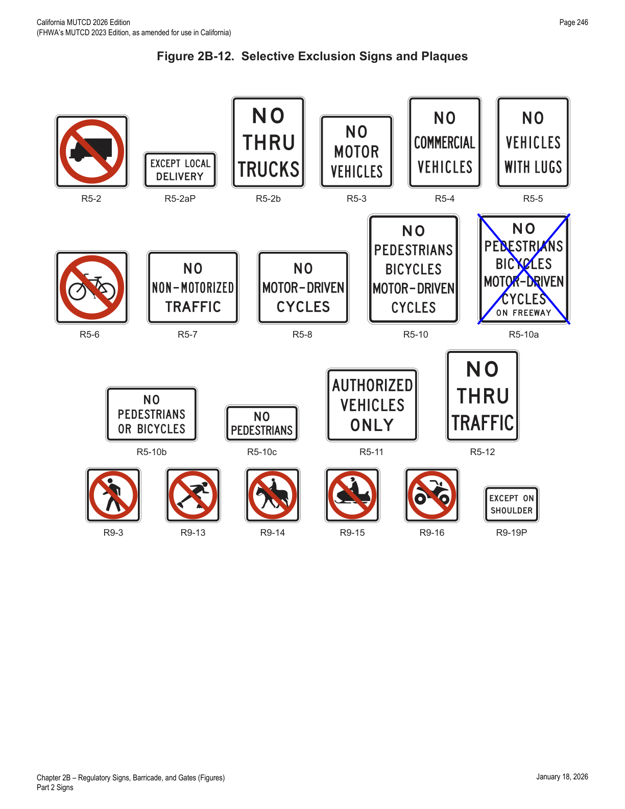
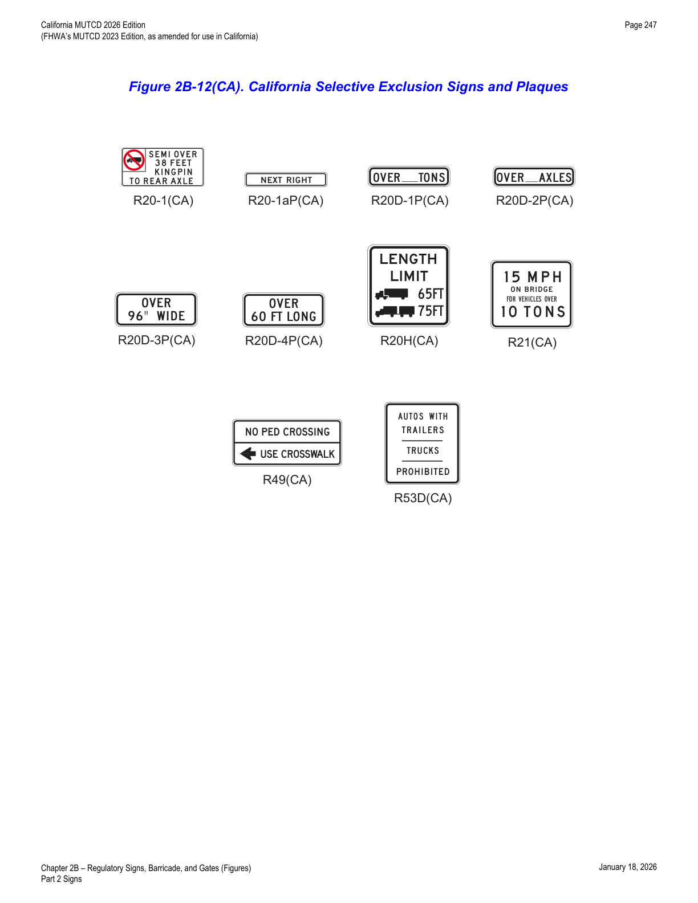
2B.46DO NOT ENTER Sign (R5-1)
- 00The DO NOT ENTER package is a DO NOT ENTER (R5-1) sign with a WRONG WAY (R5-1a) sign directly beneath it on the same sign assembly.
- 01The DO NOT ENTER package (R5-1) sign (see Figure 2B-13) shall be used at the following locations: (A) Where a two-way roadway becomes a one-way roadway (see Figure 2B-18); (B) The intersection of an interchange exit ramp with a crossroad as specified in Section 2B.48 (see Figure 2B-15); (C) The intersection of a channelized or turning roadway with a two-way undivided crossroad; and (D) Except as provided in Paragraph 4 of this Section, an intersection with a divided highway where the crossing functions as a single (see Figure 2B-14(CA)) or two separate intersections (see Figure 2B-14).
- 01aRefer to Section 2B.48 for DO NOT ENTER package requirements at interchange exit ramp terminals.
- 02A DO NOT ENTER package sign should be installed at other locations where additional emphasis is needed where wrong-way movements are prominent or where the intersecting angle of roadways is such that the visibility of ONE WAY signs alone does not sufficiently convey the restriction.
- 02bIf used for controlling reversible lanes and for prohibiting turns into reversible lanes, the R5-1 and R5-1a Activated Blank-Out signs shall be used in two sets.
- 02cThe R5-1 and R5-1a Activated Blank-Out signs may also be used to supplement static R5-1 and R5-1a signs.
- 03A DO NOT ENTER sign may be installed at an intersection with a divided highway where the crossing functions as a single intersection, as shown in Figure 2B-20.
- 04A DO NOT ENTER sign may be omitted on a low-speed urban street that is a divided highway at a crossing that functions as two separate intersections.
- 05An EXCEPT BICYCLES (R3-7bP) plaque (see Figure 2B-4) may be used below a DO NOT ENTER package sign when counter-flow bicycle traffic is allowed.
- 06The DO NOT ENTER package sign, if used, should be placed directly in view of a road user at the point where a road user could wrongly enter a divided highway, one-way roadway, or ramp. The sign should be mounted facing traffic that might enter the roadway or ramp in the wrong direction.
- 07At a crossing with a divided highway that functions as a single intersection, the package, if used, should be placed on the outside edge of the roadway facing traffic that might enter the roadway in the wrong direction.
- 08If the DO NOT ENTER package sign would be visible to traffic to which it does not apply, the sign should be turned away from, or shielded from, the view of that traffic.
- 08aAt least one set of the DO NOT ENTER package should be visible from each decision point on each likely wrong-way approach.
- 09A second DO NOT ENTER package sign shall be used, particularly where traffic approaches from an intersecting roadway (see Figure 2B-14).
- 10Sections 2A.15 and 2B.48 contain information regarding an optional lower mounting height for DO NOT ENTER package signs that are located along an exit ramp facing a road user who is traveling in the wrong direction.
- 11Section 2A.12 contains the provisions for the use of continuously-operated or actuated LEDs to enhance the conspicuity of signs.
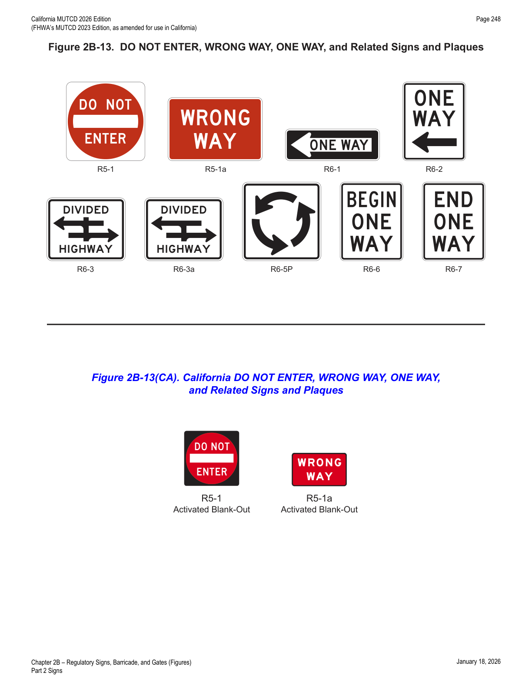
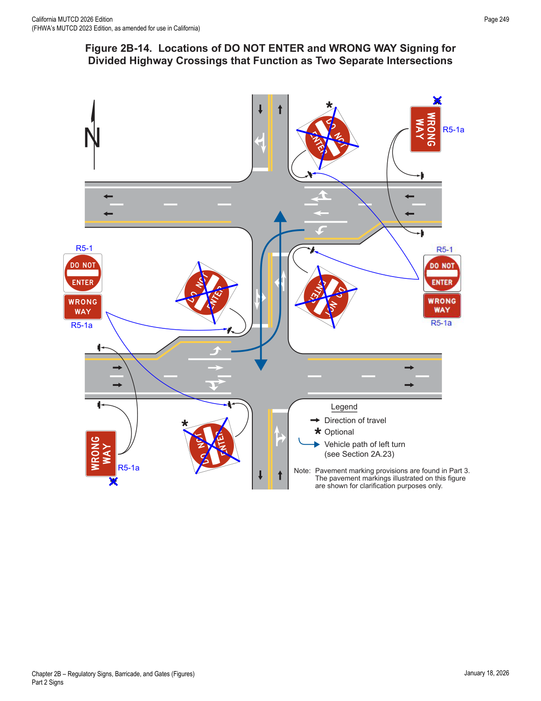
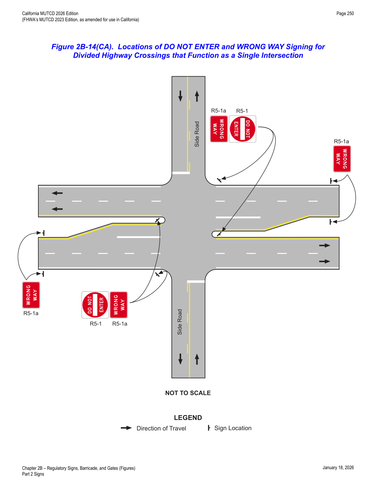
2B.47WRONG WAY Sign (R5-1a)
- 02If used, the WRONG WAY sign shall be placed at a location along the one-way roadway farther from the crossroad than the DO NOT ENTER package sign (see Section 2B.46).
- 03The WRONG WAY sign should be placed on the same side of the road as the DO NOT ENTER package sign.
- 04Sections 2A.15 and 2B.48 contain information regarding an optional lower mounting height for WRONG WAY signs that are located along an exit ramp facing a road user who is traveling in the wrong direction.
- 05Section 2A.12 contains the provisions for the use of continuously-operated or actuated LEDs to enhance the conspicuity of signs.
- 06For additional information on the WRONG WAY (R5-1a) sign, refer to Sections 2B.46 and 2B.48.
2B.48Wrong-Way Traffic Control at Interchange Ramps
- 01At interchange exit ramp terminals where the ramp intersects a crossroad in such a manner that wrong-way entry could inadvertently be made, the following signs shall be used (see Figure 2B-15): (A) At least one ONE WAY sign for each direction of travel on the crossroad shall be placed where the exit ramp intersects the crossroad. (B) At least one DO NOT ENTER package sign shall be conspicuously placed near the downstream end of the exit ramp in a position appropriate for full view of a road user starting to wrongly enter from the crossroad. (C) At least one stand-alone WRONG WAY sign shall be placed upstream on the exit ramp facing a road user traveling in the wrong direction.
- 01aThe WRONG WAY sign may be mounted to the backside of an existing sign upstream on the exit ramp facing a road user traveling in the wrong direction.
- 02In addition, the following pavement markings should be used (see Figure 2B-15): (A) On two-lane paved crossroads at interchanges, solid double yellow lines should be used as a center line for an adequate distance on both sides approaching the ramp intersections. (B) Where crossroad channelization or ramp geometrics do not make wrong-way movements difficult, a lane-use arrow should be placed in each lane of an exit ramp near the crossroad terminal where it will be clearly visible to a potential wrong-way road user.
- 03The following traffic control devices may be used to supplement the signs and pavement markings described in Paragraphs 1 and 2 of this Section: (A) Additional ONE WAY signs may be placed, especially on two-lane rural crossroads, appropriately in advance of the ramp intersection to supplement the required ONE WAY sign(s). (B) Additional WRONG WAY signs may be used. (C) Slender, elongated wrong-way arrow pavement markings (see Figures 3B-21 and 3B-21(CA)) intended primarily to warn wrong-way road users that they are traveling in the wrong direction may be placed upstream from the ramp terminus (see Figure 2B-15) to indicate the correct direction of traffic flow. Wrong-way arrow pavement markings may also be placed on the exit ramp at appropriate locations near the crossroad junction to indicate wrong-way movement; these markings may consist of pavement markings or bidirectional red-and-white raised pavement markers or other units that show red to wrong-way road users and white to other road users. (D) Lane-use arrow pavement markings may be placed on the exit ramp and crossroad near their intersection to indicate the permissive direction of flow. (E) Freeway entrance signs (see Section 2D.50) may be used. (F) Lane control signs or movement prohibition signs may be used on the approaches to the exit ramp. (G) A Keep Right (R4-7 or R4-7c) sign may be used on a ramp median nose for wrong-way traffic control.
- 04On interchange entrance ramps where the ramp merges with the through roadway and the design of the interchange does not clearly make evident the direction of traffic on the separate roadways or ramps, a ONE WAY sign visible to traffic on the entrance ramp and through roadway should be placed on each side of the through roadway near the entrance ramp merging point, as illustrated in Figure 2B-16.
- 05On interchange entrance ramps where the ramp merges with the through roadway and the design of the interchange does not clearly make evident the direction of traffic on the separate roadways or ramps, a No Left Turn (R3-2) sign may be located on the left-hand side of the entrance ramp at the gore (see Figure 2B-16). If a No Left Turn (R3-2) sign is located on the left-hand side, a supplemental R3-2 sign may be installed on the right-hand side of the entrance ramp.
- 06On interchange entrance ramps where the ramp merges with the through roadway and the design clearly indicates the direction of flow, a ONE WAY sign may be placed visible to traffic on the entrance ramp and/or a NO TURNS (R3-3) sign may be placed visible to traffic on the entrance ramp and through roadway at the gore area, as illustrated in Figure 2B-16.
- 07Where there are no parked cars, pedestrian activity, or other obstructions such as snow or vegetation, and if an engineering study indicates that a lower mounting height would address wrong-way movements on freeway or expressway exit ramps, a DO NOT ENTER sign(s) and/or a WRONG WAY sign(s) located along the exit ramp upstream from the intersection with the crossroad, facing a road user who is traveling in the wrong direction, may be installed at a minimum mounting height of 3 feet, measured vertically from the bottom of the sign to the elevation of the near edge of the pavement. At the intersection with the crossroad, a WRONG WAY sign may be mounted at a minimum height of 3 feet on the same support on which a DO NOT ENTER sign is mounted at a height that complies with the provisions of Section 2A.15 (see Figure 2B-17).
- 07aRefer to Section 2A.15 for mounting heights of the DO NOT ENTER package.
- 07bIn locations subject to deep snow, sign heights may be adjusted in accordance with engineering judgment.
- 08Sections 2B.46, 2B.47, and 2B.49 contain further information on signing to avoid wrong-way movements at at-grade intersections on expressways.
- 09The sign locations shown in Figure 2B-15(CA) are approximate.
- 10All ramp terminals should be reviewed under both day and night conditions by experienced signing personnel to determine exact locations.
On-Ramp Terminal Signing
- 11Lead-in signing directing motorists to on-ramps is important. Care should be taken to ensure that arrows on direction signs could not be interpreted as pointing into inappropriate roadways, especially off-ramp terminals.
- 12Partial interchanges may need special attention with respect to lead-in signing. Trailblazing a route from a partial interchange to another interchange may be necessary to ensure proper traffic movements.
- 13Freeway Entrance packages should be placed as near the diverge point between the on-ramp and the intersecting roadway as practicable. The down-diagonal arrow should always point toward the on-ramp pavement.
- 14Large Freeway Entrance signs should be used with the Freeway Entrance package unless proper placement requires the smaller Freeway Entrance signs.
Off-Ramp Terminal Signing
- 15The Turn Prohibition signs (see Section 2B.26) shall be placed in suitable locations on the crossing street in advance of the off-ramp.
- 16The DO NOT ENTER packages should be placed at off-ramp terminals to meet the following criteria: (A) At least one package should be visible to a road user (within the scope of headlights) at the decision point on each potential approach. (B) At least one package should be in the head-on position for the road user turning into the off-ramp from each potential approach.
- 17A field decision should be made on whether to use three DO NOT ENTER packages or four if the off-ramp is split by a traffic island.
- 18The ONE WAY (R6-1) signs should be placed as close to the crossing street as possible. If there are sidewalks immediately adjacent to the cross street, these signs should be located behind the sidewalk to avoid conflicting with pedestrians.
- 19At skewed ramp intersections, where the angle approaches 90 degrees, a second ONE WAY (R6-1) sign should be added on the obtuse side when it would be visible to approaching traffic. Refer to Figure 2B-15(CA) Sheet 1.
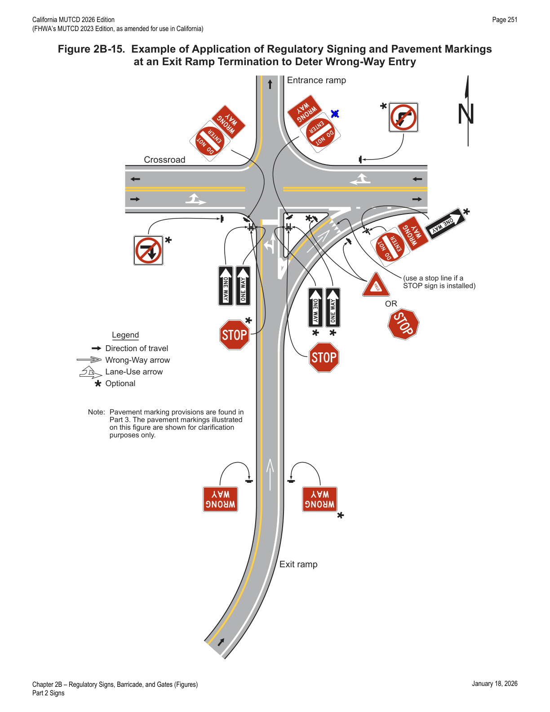
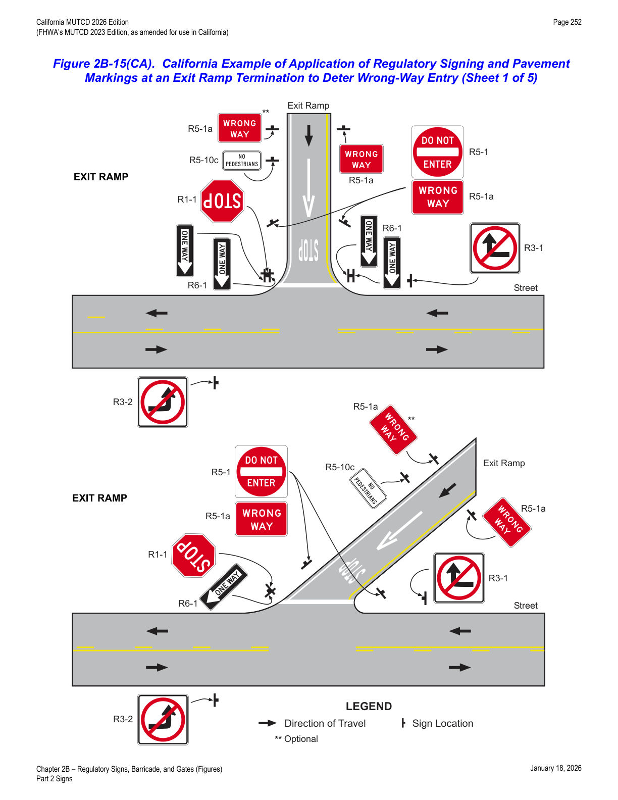
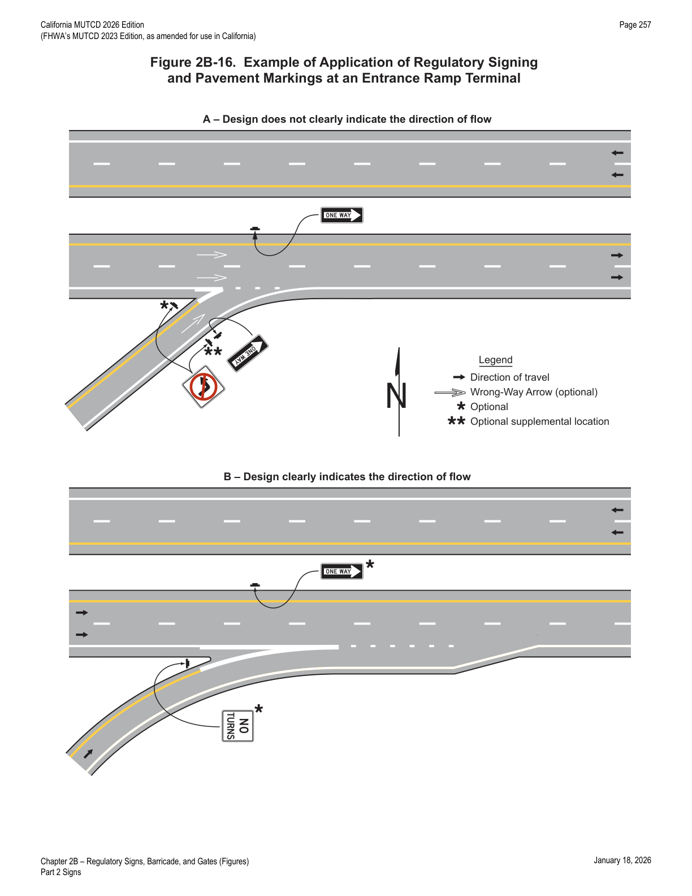
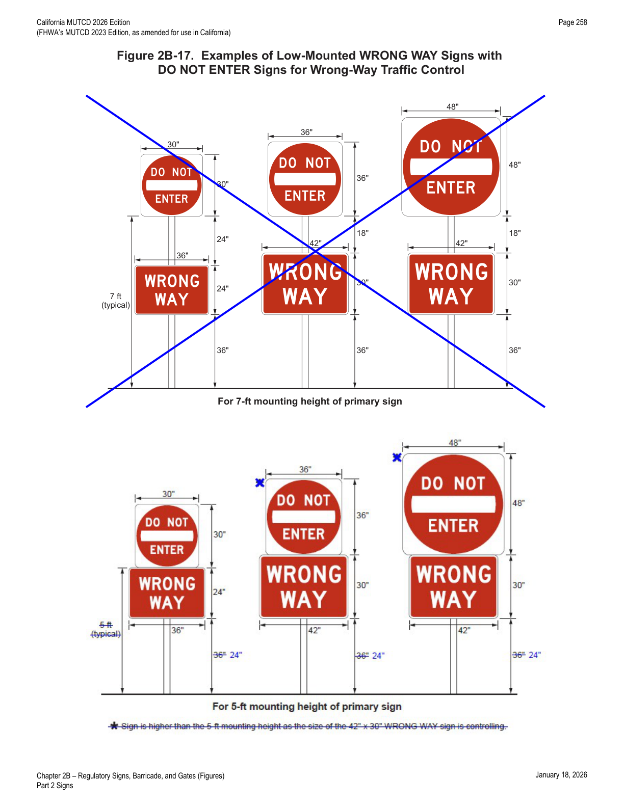
2B.49ONE WAY Signs (R6-1 and R6-2)
- 01Except as provided in Paragraph 6 of this Section, the ONE WAY (R6-1 or R6-2) sign (see Figure 2B-13) shall be used to indicate streets, ramp terminals, or roadways upon which vehicular traffic is allowed to travel in one direction only.
- 01aThe ONE WAY (R6-2) sign may be used as an alternative to the R6-1 sign where space is limited and the R6-2 sign is more appropriate.
- 02ONE WAY signs shall be placed parallel to the one-way street at all alleys and roadways that intersect one-way roadways, as shown in Figure 2B-18.
- 03At the crossing of a roadway with a divided highway that functions as two separate intersections, ONE WAY signs shall be placed, visible to each crossroad approach, on the near right and far left corners of each intersection with the directional roadways (see Figure 2B-19).
- 04At the crossing of a roadway with a divided highway that functions as a single intersection, Keep Right (R4-7) signs (see Section 2B.39) and/or ONE WAY signs shall be installed (see Figure 2B-20). If Keep Right signs are installed, they shall be placed as close as practicable to the approach ends of the medians and shall be visible to traffic on the divided highway and angled (as needed) toward the applicable crossroad approach as shown in Figure 2B-20. If ONE WAY signs are installed, they shall be placed on the near right and far left corners of the intersection and shall be visible to each crossroad approach.
- 04bRefer to Section 2B.18 when a ONE WAY sign is proposed on the same sign assembly as a STOP sign.
- 05At the crossing of a roadway with a divided highway, regardless of function as a single or separate intersections, ONE WAY signs may also be placed on the far right corner of the intersection, as shown in Figures 2B-19 and 2B-20.
- 06ONE WAY signs may be omitted on the one-way roadways of divided highways, where the design of interchanges indicates the direction of traffic on the separate roadways.
- 07An EXCEPT BICYCLES (R3-7bP) plaque (see Figure 2B-4) may be used with a ONE WAY sign when counter-flow bicycle traffic is allowed.
- 08Section 2B.48 contains information for the placement of ONE WAY signs at a crossroad with an interchange.
- 09If used at unsignalized intersections with one-way streets, ONE WAY signs shall be placed on the near right and the far left corners of the intersection facing traffic entering or crossing the one-way street (see Figure 2B-18).
- 10If used at signalized intersections with one-way streets, ONE WAY signs shall be placed near the appropriate signal faces, on the poles holding the traffic signals, on the mast arm or span wire holding the signals, or at the locations specified for unsignalized intersections.
- 11At unsignalized T-intersections where the roadway at the top of the T-intersection is a one-way roadway, ONE WAY signs shall be placed on the near-right and the far side of the intersection facing traffic on the stem approach (see Figure 2B-18).
- 13Where used on the central island of a roundabout, the mounting height of a ONE WAY sign should be at least 4 feet, measured vertically from the bottom of the sign to the elevation of the near edge of the traveled way.
- 14The BEGIN ONE WAY (R6-6) sign (see Figure 2B-13) may be used to notify road users of the beginning point of a one-direction-of-travel restriction on the street or roadway. The END ONE WAY (R6-7) sign (see Figure 2B-13) may be used to notify road users of the ending point of a one-direction-of-travel restriction on the street or roadway.
- 15On streets and highways under local jurisdiction where medians are less than 30 feet wide, raised or unpaved, the R6-1 signs may be placed in the median.
- 16The appropriate height of the R6-1 signs when placed in the median should be 1.5 feet.
- 17The R6-1 signs should also be placed parallel to the one-way street at the appropriate far corner to prevent a wrong-way turn. They should also be placed opposite the exits from alleys and other public ways.
- 18Authorities in charge of any highway may designate, by ordinance or resolution, any roadway, part of a roadway, or specific lanes for one-way traffic. Refer to CVC 21657.
- 19No such ordinance is effective with respect to a State highway until approved by Caltrans.
- 20If, by local ordinance, a State highway through a city has been made one of a pair of one-way streets, the Commission may adopt the additional street into the State Highway System. Refer to SHC Section 111.5. Refer to Section 1A.05 for information regarding this publication.
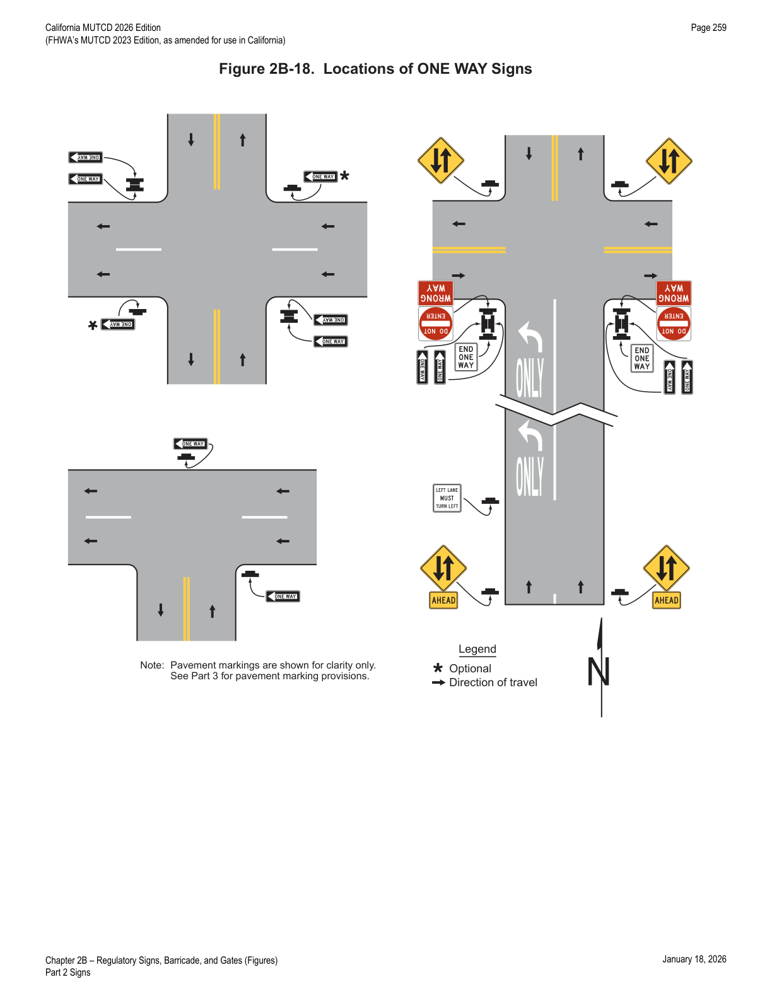
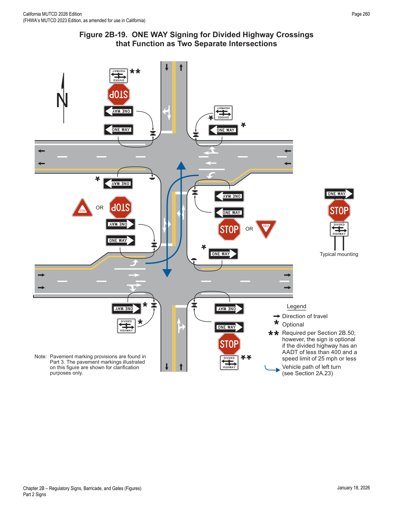
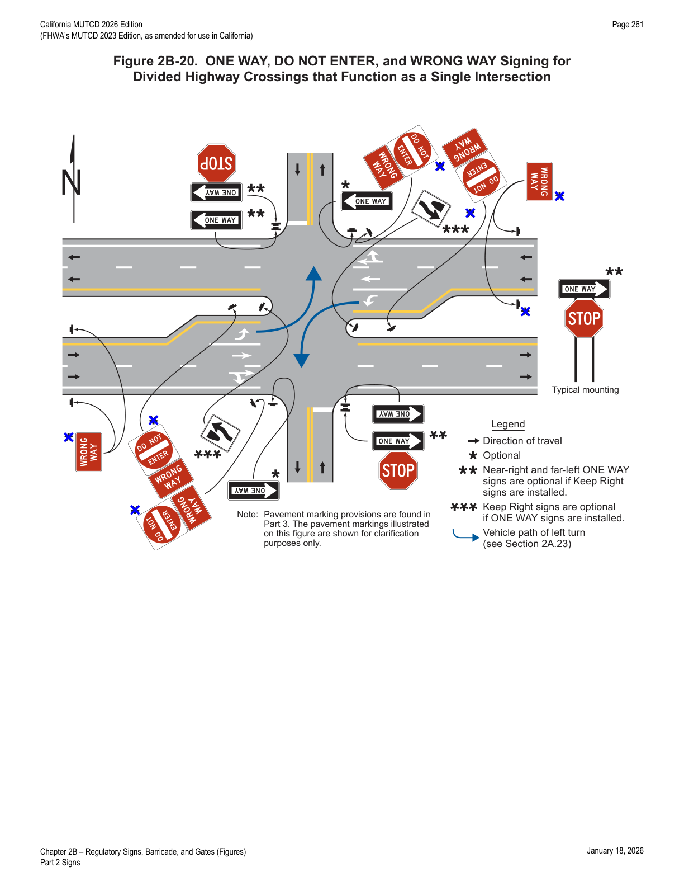
2B.50Divided Highway Crossing Signs (R6-3 and R6-3a)
- 01On unsignalized minor-street approaches from which both left turns and right turns are permitted onto a divided highway at a crossing that functions as two separate intersections (see Section 2A.23), except as provided in Paragraph 2 of this Section, a Divided Highway Crossing (R6-3 or R6-3a) sign (see Figure 2B-13) shall be used to advise road users that they are approaching an intersection with a divided highway (see Figure 2B-19).
- 02If the divided highway has a traffic volume of less than 400 AADT and a speed limit of 25 mph or less, at a crossing that functions as two separate intersections, the Divided Highway Crossing signs facing the unsignalized minor-street approaches may be omitted.
- 03A Divided Highway Crossing sign may be used on signalized minor-street approaches from which both left turns and right turns are permitted onto a divided highway to advise road users that they are approaching an intersection with a divided highway.
- 04If a Divided Highway Crossing sign is used at a four-leg intersection, the R6-3 sign shall be used. If used at a T-intersection, the R6-3a sign shall be used.
- 05The Divided Highway Crossing sign shall be located on the near right corner of the intersection, mounted beneath a STOP or YIELD sign or on a separate support.
- 06An additional Divided Highway Crossing sign may be installed on the left-hand side of the approach to supplement the Divided Highway Crossing sign on the near right corner of the intersection.
2B.51Roundabout Circulation Plaque (R6-5P)
- 01Where the central island of a roundabout or neighborhood traffic circle does not provide a reasonable place to install a sign as provided elsewhere in this Chapter, Roundabout Circulation (R6-5P) plaques (see Figure 2B-13) should be placed below the YIELD signs on each approach.
- 02Paragraph 6 of Section 2B.39 contains information about the use of a Keep Right (R4-7b) sign in the central island of a neighborhood traffic circle.
- 03Paragraph 12 of Section 2B.49 contains information about the use of a One Way (R6-1 or R6-2) sign in the central island of a roundabout.
- 04At roundabouts where ONE WAY signs have been installed in the central island, Roundabout Circulation plaques may be placed below the YIELD signs on approaches to roundabouts to supplement the central island signs.
- 05The Roundabout Circulation plaque may be used at any type of circular intersection.
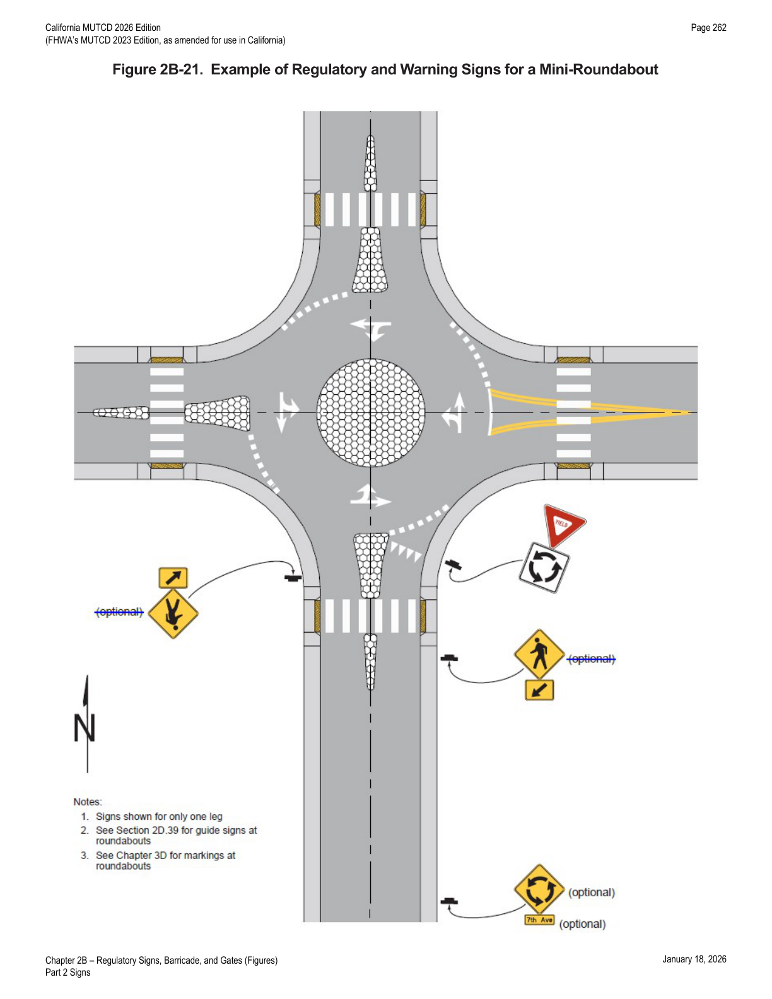
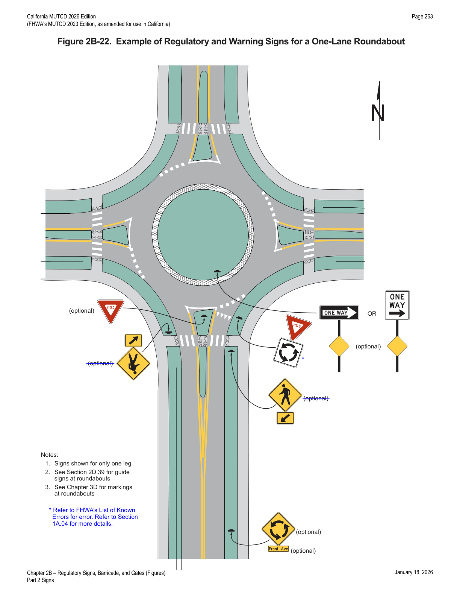
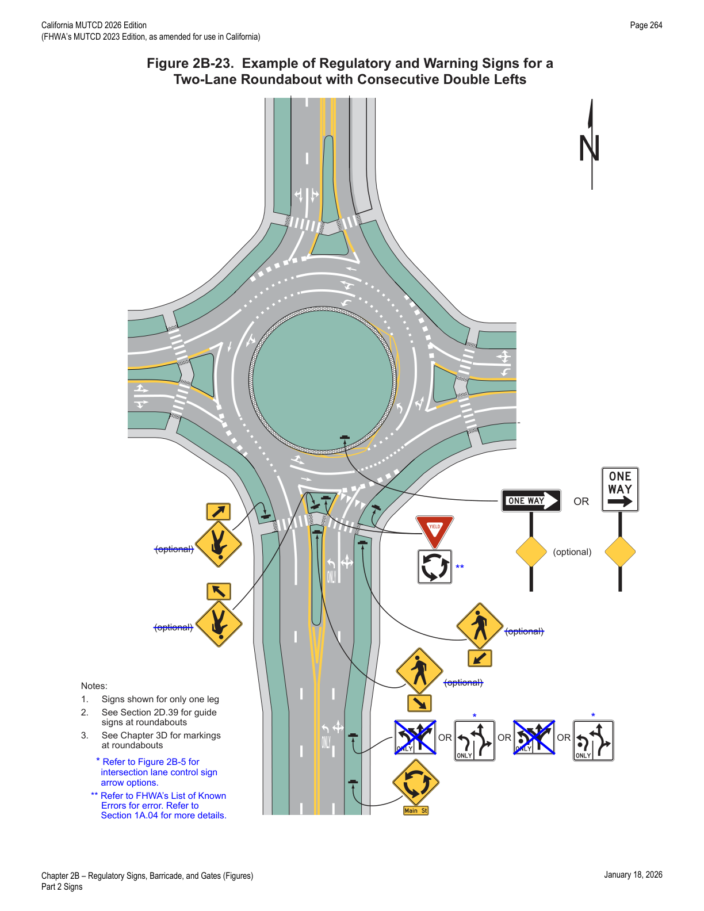
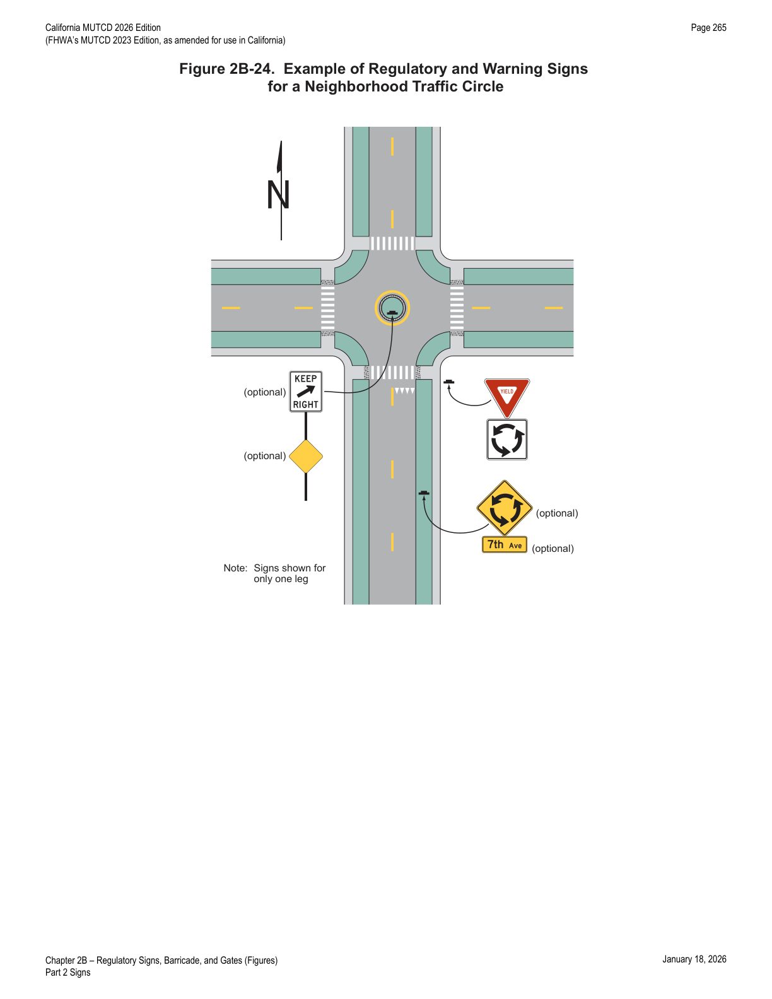
In practice, the four roundabout/traffic-circle figures above (2B-21 through 2B-24) each show signing for only one leg of the intersection; the same pattern is mirrored at every other approach. Guide signs at roundabouts are addressed separately in Section 2D.39, and roundabout pavement markings are addressed in Chapter 3D.
2B.52Parking, Standing, and Stopping Signs (R7 and R8 Series)
- 01Parking signs pertain to the parking, standing, and stopping of vehicles along the roadway and in designated parking areas. They cover a wide variety of regulations, and only general guidance can be provided here. The word "standing," when used on the R7 and R8 series of signs, refers to the practice of a driver keeping the vehicle in a stationary position while continuing to occupy the vehicle. The word "stopping," when used on the R7 and R8 series signs, refers to any vehicle, occupied by a driver or not, that stops other than to avoid conflict with other traffic or to comply with official direction. Other types of activities such as active loading, active passenger loading, and/or waiting might be established in State or local codes for use on R7 and R8 series parking, standing, and stopping signs.
- 01aCVC Section 463 defines "parking," which involves the standing of a vehicle, whether occupied or not; however, the temporary loading or unloading of merchandise or passengers is not considered parking. CVC Section 587 defines "stopping," which involves the cessation of vehicle movement.
- 01bRefer to CVC 21112 through 22658 regarding the authorities for the various parking, stopping, and loading signs.
- 02Parking signs are categorized as either (1) prohibiting parking or (2) permitting parking with restrictions on how parking is allowed.
- 03The types of parking, standing, or stopping prohibitions that might be encountered include, but are not limited to: (A) Prohibited at all times; (B) Prohibited only at certain times of the day and/or days of the week; (C) Prohibited with exceptions, such as for bus stops, loading/unloading zones, persons with disabilities, or electric vehicle charging stations; or (D) Prohibited under certain conditions, such as Snow Emergency Routes.
- 04Permissive parking signs allowing parking with restrictions include, but are not limited to: (A) Parking only allowed for limited time duration (such as 30 minutes or 1 hour); (B) Metered parking requiring payment at an individual or a multi-space parking meter, or through electronic means such as by telephone or mobile application; (C) Parking only for specific persons (such as those with disabilities, or patrons or employees of a business) or specific vehicle types (such as electric vehicles, police/government vehicles, motorcycles, bicycles, or taxis); (D) Angled or back-in angled parking when it is not commonly used in the area; (E) Parking programs such as neighborhood/residential permits, school areas, or special events; and (F) Emergency parking or stopping only.
- 04aRefer to FHWA's List of Known Errors for an error in the Paragraph 4, Item B text. Refer to Section 1A.04 for more details.
Parking Regulations
- 05Parking on freeways which have full control of access and no crossing at grade may be prohibited under CVC Section 21960.
- 06Parking on other State highways may be restricted or prohibited under CVC Sections 22505 and 22506.
- 07The Caltrans District Director is authorized to issue orders prohibiting or restricting the parking of vehicles on State highways. The District Director is also authorized to approve ordinances or resolutions of local authorities prohibiting or restricting parking on State highways.
- 08The delegation of maintenance activities to local authorities is usually exercised under the authority of SHC Section 130. Under a proposal to delegate maintenance and parking regulation authority under CVC Section 22506, Caltrans retains the authority to regulate parking under the three conditions specified in CVC Section 22505(a). The District Director of Transportation is authorized to make this delegation of authority.
Policy on Parking Restrictions
- 09No Stopping Any Time — stopping should be prohibited at locations where the prohibition would reduce the risk of collisions or where parking would unduly interfere with the movement of traffic.
- 10No Parking Anytime — parking should be prohibited at locations where the prohibition is necessary to accommodate other activities and objectives, such as street sweeping, snow removal, public safety, or preferential parking.
- 11Major factors that may be considered for No Stopping Anytime include: narrow roadway width; restricted visibility at intersections for pedestrian and vehicular traffic; narrow shoulder width; and conversion of a parking lane to a through lane or right-turn lane.
- 12Limited Time Parking — Caltrans does not issue orders for limited time parking.
- 13On State highways, limited time parking restrictions may be initiated by local authorities and approved by Caltrans. Parking prohibitions between certain hours may also be initiated by local authorities.
- 14Before time limit parking regulations are approved in rural areas, the law enforcement agency shall be consulted.
Special Signs
- 15The OK TO PARK ON BRIDGE (R22(CA)) sign may be used to inform motorists that parking is permitted on a bridge. Refer to CVC 22500(k).
- 16The PARK PARALLEL (R24(CA)) sign should only be used where diagonal parking is prevalent in violation of CVC 22502.
- 17If supported by local ordinance, the BACK-IN ANGLE PARKING ONLY (R24F(CA)) sign should be used.
- 18The SCHOOL BUS ONLY w/ Double Arrow (R24A(CA)), TAXICAB ONLY w/ Double Arrow (R24B(CA)), and TOUR BUS ONLY w/ Double Arrow (R24C(CA)) signs shall be used to inform motorists of the location of stands for use by school buses, taxicabs, and tour buses, respectively. Refer to CVC 21112.
- 19The MAIL DEPOSIT ONLY w/ Double Arrow (R24D(CA)) sign shall be used to inform motorists of curb restrictions at locations for depositing mail in an adjacent mailbox. Refer to CVC 21458(a)(3)(B).
- 20The BLOCK WHEELS TO CURB (R24E(CA)) sign shall be used to inform motorists to block the wheels of the vehicle, when parking on a hill, by turning them against the curb or by other means, when leaving it to stand unattended upon any grade exceeding 3 percent. Refer to CVC 22509.
- 21The PARK OFF PAVEMENT (R25(CA)) sign may be used where it is likely that vehicles may stop on the traveled way and interfere with through traffic. It may also be used as a temporary sign in snow areas where parking is permitted.
- 22The LOADING ONLY 7AM TO 6PM EXCEPT SUNDAY 30 MINUTE LIMIT w/ Double Arrow (R25A-1(CA)) sign shall be used to inform motorists of curb restrictions at locations for loading or unloading passengers or freight for the time specified by local ordinance. Refer to CVC 21458(a)(2).
- 23The following signs shall be used to inform motorists of curb restrictions at locations for loading or unloading of passengers for the time specified by local ordinance (refer to CVC 21458(a)(3)(A)): PASSENGER LOADING ONLY 5 MINUTE LIMIT w/ Double Arrow (R25C(CA)); School Passenger Loading ONLY 7AM TO 4PM SCHOOL DAYS 5 MINUTE LIMIT w/ Double Arrow (R25D-1(CA)); PASSENGER LOADING ONLY 7AM TO 4PM SCHOOL DAYS 5 MINUTE LIMIT w/ Double Arrow (R25E(CA)); School Bus Passenger Loading ONLY w/ Double Arrow (R25F-1(CA)); and Tour Bus Passenger Loading ONLY w/ Double Arrow (R25H-1(CA)).
- 24The CAR SHARE PARKING ONLY PERMIT REQUIRED w/ Double Arrow (R25J(CA)) sign shall be used to designate certain streets or portions of streets for the exclusive parking privilege of vehicles participating in a car share vehicle program or ridesharing program. Refer to CVC 22507.1.
- 25The NO PARKING ANY TIME with arrow (R28(CA)) or without arrow (R26(CA)) signs may be used to inform motorists of a parking prohibition at a specific location. The NO PARKING ANY TIME with arrow (R28A(CA)) or without arrow (R26A(CA)) signs may be used where a larger size is desirable.
- 26CVC Section 21718 prohibits the stopping, parking, or leaving of any vehicle upon a freeway. Large NO PARKING ANY TIME (R26(CA)) or EMERGENCY PARKING ONLY (R8-4) signs may be installed on freeways that have full control of access and no crossing at grade to inform traffic that stopping, parking, or leaving of any vehicle upon a freeway is prohibited.
- 27The Tow-Away No Parking (R26K(CA)) sign may be used to inform motorists of a parking prohibition and tow-away zone at a specific location.
- 28The NO STOPPING FIRE LANE (R26F(CA)) sign may be used to inform motorists of a designated fire lane. Refer to CVC 22500.1.
- 29The NO STOPPING ANY TIME (R26(S)(CA)) sign or Tow-Away NO STOPPING ANY TIME (R26L(CA)) sign shall be used to inform motorists of a No Stopping Zone at a specific location where red curb marking is not used.
- 30The NO PARKING HERE TO CORNER (R26M(CA)) sign shall be installed to inform motorists that parking is prohibited within 20 feet of the vehicle approach side of a marked or unmarked crosswalk at a corner, or within 15 feet of any marked or unmarked crosswalk at a corner where a curb extension is present. Refer to CVC Section 22500.
- 31For midblock crosswalk configurations, the NO PARKING HERE TO X-ING (R26M-1(CA)) sign shall be used in place of the standard R26M(CA) sign.
- 32The Tow-Away NO STOPPING 4 TO 6 PM (R107(CA)) sign in a tow-away zone shall be used to inform motorists of a stopping restriction at a specific location during specific hours.
- 33In zones where vehicles can be towed for violating the posted prohibition, the "Tow-Away" message or symbol shall be used. Where the "Tow-Away" symbol is used in a 12-inch width format, it shall be as shown on the R26K(CA) sign; when used in an 18-inch width format, it shall be as shown on the R107(CA) sign.
- 34The NO STOPPING ANY TIME (R26A(S)(CA)) sign may be used where a larger size is desirable.
- 35The NO PARKING ON BRIDGE (R27(CA)) sign may be used only where parking is prevalent in violation of CVC 22500(k).
- 36The NO PARKING ON BRIDGE (R27A(CA)) sign may be used where a larger size is desirable.
- 37The NO STOPPING ANY TIME with arrow (R28(S)(CA)) sign may be used to inform motorists of no stopping zones, and should be used only where the beginning and ending points of the prohibition are not otherwise indicated. The NO STOPPING ANY TIME with arrow (R28A(S)(CA)) sign may be used where a larger size is desirable.
- 38The NO STOPPING BUS ONLY w/ Arrow (R28C(CA)) sign shall be used to inform motorists of no stopping zones at bus stops.
- 39On State highways, the NO PARKING VEHICLES OVER 6' HIGH w/ Double Arrow (R28D(CA)) or NO STOPPING VEHICLES OVER 6' HIGH w/ Double Arrow (R28D(S)(CA)) sign shall be used to inform motorists of a parking or stopping prohibition applicable only to vehicles 6 feet or more in height. Refer to CVC 22505.
- 40The R28D(CA) or R28D(S)(CA) sign may be installed within 100 feet of an intersection to improve the visibility of motorists in accordance with CVC 22507, except where parking would obstruct the applicable sight distance as determined by a qualified engineer.
- 41The NO PUBLIC PARKING SUBJECT TO CITATION AND REMOVAL AT OWNER'S EXPENSE (R28E(CA)) sign shall be used to inform motorists of a parking prohibition on private property. Refer to CVC 22658.
- 42The No Parking VEHICLES OVER 5 TONS (R28F(CA)) sign shall be used to inform motorists of a parking prohibition in a residential district for commercial vehicles having a manufacturer's gross vehicle weight rating of 5 tons or more. Refer to CVC 22507.5.
- 43The No Stopping/No Parking Specific Hours (R29(CA)) sign shall be used to inform motorists of a stopping and parking prohibition during certain hours at a specific location.
- 44The No Parking Specific Hours (R30(CA) and R30A(CA)) signs shall be used to inform motorists of a parking restriction during certain hours at a specific location.
- 45The No Parking 10AM TO 12PM WEDNESDAY STREET SWEEPING (R30B(CA)) sign shall be used to inform motorists of a parking prohibition for the purpose of street sweeping. Refer to CVC 22507.6.
- 46The No Parking 2AM TO 6AM EXCEPT BY PERMIT (R30C(CA)) or No Parking 2AM TO 6AM CITYWIDE EXCEPT BY PERMIT (R30D(CA)) sign shall be used to inform motorists of a parking prohibition between the hours of 2 a.m. and 6 a.m. Refer to CVC 22507.5.
- 47When used, the R30D(CA) sign should be posted below the City Limit (G9-5(CA)) sign or downstream from a freeway off-ramp. Refer to CVC 22507.5.
- 46The No Parking w/Double Arrow (R30E(CA)) sign shall be used to inform motorists of a parking restriction at a specific location. (Source paragraph numbering repeats "46" here — reproduced as printed.)
- 47The No Stopping Specific Hours School Days (R30F(CA)) sign shall be used to inform motorists of a stopping prohibition during certain hours at a specific location in a school zone area. (Source paragraph numbering repeats "47" here — reproduced as printed.)
- 48The No Parking/Parking Specific Hours (R31(CA) and R32B(CA)) and No Stopping/Parking Specific Hours (R31(S)(CA)) signs may be used to inform motorists of a stopping/parking prohibition during certain hours and a parking time limit during other hours at a specific location. The R31(S)(CA) sign is used for stopping prohibitions, generally during peak traffic hours.
- 49The Limited Hour/Minute Parking Specific Hours (R32(CA)) sign may be used to inform motorists of a parking time limit with specific hours and/or minutes during certain hours at a specific location.
- 50The 2 HOUR PARKING 8AM TO 6PM DISTRICT 7 PERMITS EXEMPT (R32C(CA)) sign or 30 MINUTE PARKING 2AM TO 6AM DISTRICT 3 PERMITS EXEMPT (R32D(CA)) sign shall be used to inform motorists of a parking time limit designation on certain streets upon which preferential parking privileges are given to residents and merchants adjacent to the streets, under which the residents and merchants can be issued a permit or permits that exempt them from the prohibition or restriction. Refer to CVC 22507.
- 51A combined 2 HOUR PARKING 8AM TO 4PM – PASSENGER LOADING ONLY 4PM TO MIDNIGHT 5 MINUTE LIMIT w/ Double Arrow (R32E(CA)) sign shall be used to inform motorists of a parking time limit with specific hours and of curb restrictions at locations for loading or unloading of passengers for the time specified by local ordinance. Refer to CVC 21458(a)(3)(A).
- 52The 2 HOUR PARKING 8AM TO 6PM MOTORCYCLE PARKING ONLY w/ Double Arrow (R32F(CA)) sign shall be used to inform motorists of a parking time limit with specific hours for motorcycles. Refer to CVC 22503.5.
- 53The Tow-Away No Stopping/No Parking Specific Hours (R37(CA)) sign may be used to inform motorists of no stopping and parking prohibitions and a tow-away zone at a specific location.
- 54The Tow-Away No Parking/Limited Hour Parking Specific Hours (R38(CA)) sign may be used to inform motorists of a parking restriction and tow-away zone at a specific location.
- 55The Tow-Away No Stopping/Limited Hour Parking Specific Hours (R38(S)(CA)) sign may be used for stopping prohibitions, generally during peak hours.
- 56Local agencies are allowed to adopt, by resolution or ordinance, the restriction of parking and the impounding of vehicles for sale, subject to the requirements of CVC Section 22651.9. Under these requirements, a vehicle can be impounded if a parking violation was received within the last 30 days and a warning was issued.
- 57The No Parking of Vehicles for Sale (R108(CA)) signs may be posted to inform motorists that the parking of vehicles for sale is prohibited and that vehicles may be impounded, as prescribed in CVC Section 22651.9 and as authorized by a local ordinance or resolution.
- 58If used, the applicable municipal code or county code should be shown on the R108(CA) signs to assist enforcement personnel in identifying the appropriate parking infraction, due to the special requirements prescribed in CVC Section 22651.9.
- 59The combined TOW-AWAY NO STOPPING 7AM TO 9AM - PASSENGER LOADING ONLY ALL OTHER TIMES 5 MINUTE LIMIT w/ Double Arrow (R38A(CA)) sign shall be used to inform motorists of no stopping and parking prohibitions and a tow-away zone at a specific location during specific hours, and of curb restrictions at locations for loading or unloading of passengers for the time specified by local ordinance. Refer to CVC 21458(a)(3)(A).
- 60The NO PARKING OF COMMERCIAL VEHICLES EXCEPT BY PERMIT (R39(CA)) sign may be used on any roadway on which local ordinance or resolution per CVC Section 22505 and 22507 has been established to prohibit parking of commercial vehicles.
- 61If used, the R39(CA) sign shall be used to identify only those street or highway locations, either State or local, upon which parking of commercial vehicles is prohibited except by permit, as established by the local ordinance or resolution.
- 62The NO DOUBLE PARKING ANYTIME COMMERCIAL VEHICLES INCLUDED (R39-1(CA) or R39-2(CA)) sign shall be used to inform motorists of a parking prohibition in a business district for commercial vehicles where a local agency has adopted an ordinance per CVC 22502(c).
- 63The NO IDLING COMMERCIAL VEHICLES AND ALL BUSES (SR62(CA)) or NO IDLING All Buses and Commercial Vehicles (SR63(CA)) symbol sign may be placed to remind commercial vehicle operators that idling is prohibited for commercial vehicles and all buses for a duration greater than 5 minutes.
- 64Refer to CCR Title 13, Division 3, Chapter 10, Article 1, Sections 2480 and 2485, which prohibit unnecessary idling of commercial vehicles and all buses.
- 65If used, the NO IDLING COMMERCIAL VEHICLES AND ALL BUSES (SR62(CA)) sign, the NO IDLING All Buses and Commercial Vehicles (SR63(CA)) symbol sign, or the NO IDLING All Buses and Commercial Vehicles REPORT VIOLATIONS (SR63A(CA)) sign shall be placed in areas where idling commonly occurs.
- 66The NO IDLING All Buses and Commercial Vehicles REPORT VIOLATIONS (SR63A(CA)) sign may be used in areas with idling concerns for heavy-duty diesel trucks and buses, to report violators directly to the California Air Resources Board (CARB) or local law enforcement agencies.
- 67The phone number used on the SR63A(CA) sign shall be either 1-800-CUT-SMOG or 1-800-END-SMOG, or another local law enforcement agency's number, for signs located in the South Coast Air Quality Management District. SR63A(CA) signs located elsewhere in the State shall use 1-800-END-SMOG or another local law enforcement agency's number.
- 68Refer to Health and Safety Code, Division 26, Part 4, Chapter 5, Section 42705.5, and Health and Safety Code, Division 26, Part 6, Chapter 6, Section 44391.2.
- 69If using the SR63A(CA) sign, these signs should be placed within 100 feet of sensitive receptors, such as daycares, schools, senior care facilities, hospitals, and residential neighborhoods.
- 70CCR Title 13, Sections 2480 and 2485, prohibit unnecessary idling of commercial vehicles and all buses for a duration greater than 5 minutes. Sign locations are determined by Air Resources Board representatives and officials of the law enforcement agency responsible for enforcement, and the jurisdiction that owns the roadway installs the signs.
- 71The Accessible Parking Only (R99(CA)) sign in combination with the MINIMUM FINE $250 (R99B(CA)) plaque, or the Accessible Parking Only Minimum Fine $250 (R99C(CA)) sign, shall be used in on-street and off-street parking facilities to designate stalls for vehicles with a special identification license plate or a distinguishing placard for persons with disabilities.
- 72The R99(CA) sign in combination with the R99B(CA) plaque, or the R99C(CA) sign, together with blue pavement markings and the International Symbol of Accessibility marking, are required for enforcement of these parking areas. Refer to CVC 22511.7 and 22511.8.
- 73The VAN ACCESSIBLE (R7-8b) sign shall be mounted below the Accessible Parking Only (R99(CA)) sign in combination with the MINIMUM FINE $250 (R99B(CA)) plaque, or the Accessible Parking Only Minimum Fine $250 (R99C(CA)) sign, of the parking space designated as the van-accessible space for persons with disabilities, as provided in Title 24, Part 2, California Building Code (CBC) Section 1129B.
- 74The TOW-AWAY SPECIAL PLACARD OR LICENSE PLATE REQUIRED (R100A(CA)) sign may be used with the R99(CA) sign in combination with the R99B(CA) plaque, or the R99C(CA) sign, to inform motorists that their vehicle will be towed away if they do not have a special identification license plate or a distinguishing placard for persons with disabilities.
- 75The Disabled Tow-Away (R100B(CA)) sign shall be placed immediately adjacent to, and visible from, the stall or space, or at each entrance to an off-street parking facility, to inform motorists that their vehicle will be towed away if they park in designated stalls or spaces without a special identification license plate or a distinguishing placard for persons with disabilities. The sign shall include the address where the towed vehicle can be reclaimed and the telephone number of the local traffic law enforcement agency. Refer to CVC 22511.8 and 22511.9.
- 76The DISPLAY OF VEHICLES FOR SALE PROHIBITED (SR26(CA)) sign may be used on any roadway on which local ordinance or resolution per SHC Section 731 has been established to prohibit the display of vehicles for sale.
- 77If used, the SR26(CA) sign shall be used to identify only those street or highway locations, either State or local, upon which display of vehicles for sale is prohibited, as established by the local ordinance or resolution.
- 78The TOW-AWAY NO PARKING WHEN SNOW REMOVAL CONDITIONS EXIST (SR49(CA)) sign may be used to prohibit or restrict the parking or standing of vehicles on designated streets or highways, or portions thereof, for the purpose of snow removal. Refer to CVC 22510.
- 79The SNOW NOT REMOVED BEYOND HERE (SR20-1(CA)) sign should be erected at the beginning of the snow season and removed in the spring when the road is opened. The SR20-1(CA) sign should be placed at a location that will provide a motorist the opportunity to turn around.
- 80The CHAIN INSTALLATION ONLY (R74(CA)) sign may be erected where parked vehicles interfere with normal winter operations.
- 81The R74(CA) sign should be turned or covered at the end of the chain requirement season.
- 82The CHAINS REQUIRED (X MILE(S)) AHEAD (R75(CA)) sign shall be used to give advance notice that chains are required ahead.
- 83The CHAINS REQUIRED (R76(CA)) sign shall be used at the beginning of chain control areas and intermittently as needed.
- 84The R76(CA) sign is installed in combination with the Speed Limit (R2-1), R79(CA), and R80-1(CA) signs.
- 85The ON SINGLE AXLE DRIVE VEHICLE WITH TRAILER (R76-1(CA)) sign may be used when road conditions are such that only single drive vehicles with trailers need chains.
- 86When used, the R76-1(CA) sign shall be mounted below the CHAINS REQUIRED (R76(CA)) sign.
- 87The NO EXCEPTIONS (R77(CA)) sign shall be used with the Speed Limit (R2-1) and CHAINS REQUIRED (R76(CA)) signs when chains are required with no exceptions.
- 88The END CHAIN CONTROL (R78(CA)) sign shall be used to advise the motorist that the chain control area has ended.
- 89The AUTOS & PICKUPS SNOW TIRES OK – CARRY CHAINS (R79(CA)) sign shall be used with the Speed Limit (R2-1) and CHAINS REQUIRED (R76(CA)) signs when chains are required but autos and pickups with snow tires are excepted from using chains.
- 90The 4-W DRIVE WITH SNOW TIRES OK – CARRY CHAINS (R80-1(CA)) sign shall be used with the Speed Limit (R2-1) and CHAINS REQUIRED (R76(CA)) signs when chains are required.
- 91Vehicles with four-wheel drive and snow tires on all four wheels are exempt from using chains.
Electric Vehicle Charging Station Signs
- 92If used, the Electric Vehicle Charging Station Tow-Away (R112(CA)) sign (see Figure 2B-25(CA)) shall be placed immediately adjacent to, and visible from, the charging station stall or space, or at each entrance to an off-street parking facility, to inform motorists that their vehicles will be towed away if parked in designated stalls or spaces without being connected for electric charging purposes. The sign shall include the address where the towed vehicle can be reclaimed and the telephone number of the local traffic law enforcement agency. Refer to CVC 22511.
- 93Local agencies may, at their discretion, include the CVC Section 22511 citation, or a local municipal code section or ordinance number, on the Electric Vehicle Charging Station Tow-Away (R112(CA)) sign.
- 94If used, the No Parking (symbol) EXCEPT FOR EV CHARGING (R113(CA)) sign, or the No Parking (symbol) EXCEPT FOR ELECTRIC VEHICLE CHARGING (R113A(CA)) sign (see Figure 2B-25(CA)), shall be placed immediately adjacent to, and visible from, each charging station stall or space.
- 95If used, the __HOUR EV CHARGING __AM TO __PM (R114(CA)) sign, or the __HOUR ELECTRIC VEHICLE CHARGING __AM TO __PM (R114A(CA)) sign (see Figure 2B-25(CA)), shall be placed immediately adjacent to, and visible from, each charging station stall or space to identify the allowable time limit for which electric vehicles may be connected, depending on the time limitations that apply to each charging station.
- 96Identification signs and surface markings shall be placed for Van Accessible, Standard Accessible, and Ambulatory electric vehicle charging stations, as required by Chapter 11B of Title 24, Part 2, California Building Code (CBC) Section 1129B. The International Symbol of Accessibility for the Handicapped (D9-6) sign in combination with the VAN ACCESSIBLE (R7-8b) sub-plaque shall be placed at Van Accessible electric vehicle charging stations; the D9-6 sign alone shall be placed at Standard Accessible electric vehicle charging stations (see CBC 11B-812.8 and Section 3B.20 for surface markings).
- 97The Rest Area/Vista Point 8 HOUR PARKING (S23(CA)) sign may be used to discourage extended stays in roadside rests or vista points for noncommercial vehicles. The 10 HOUR PARKING COMMERCIAL MOTOR VEHICLES (R39-3(CA)) sign may be used to allow ten total hours of parking for commercial vehicles. Refer to CVC 22651(s)(1) and CVC 22651(s)(2).
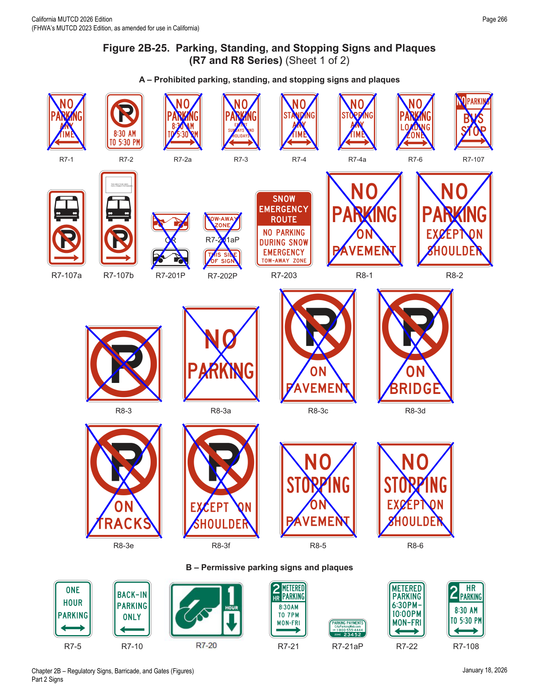
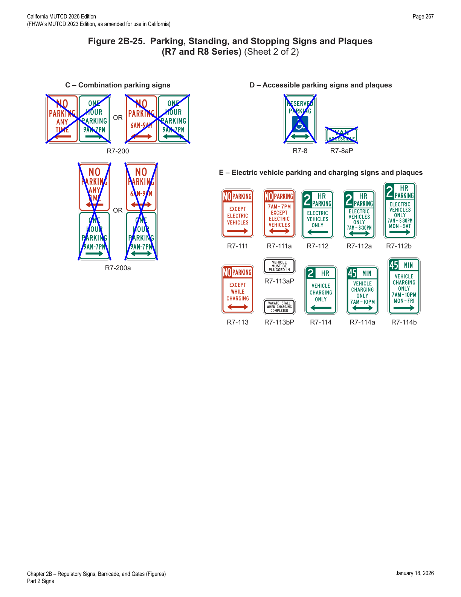
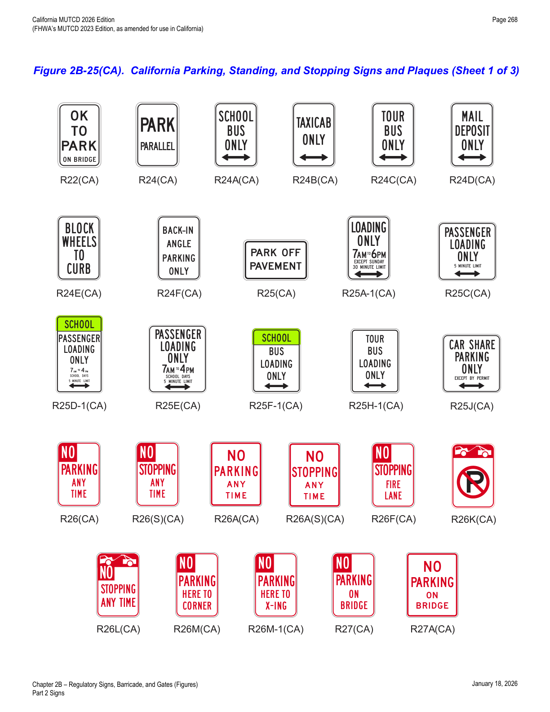
In practice, the R7/R8/R2x–R11x series in this Section is the single largest sign family in the CA MUTCD: most agencies maintain a local "parking sign catalog" cross-referencing each CVC citation to the exact sign designation so that field crews and enforcement staff use a consistent legend for a given restriction rather than ad hoc custom wording.
2B.53Design of Parking, Standing, and Stopping Signs
- 01Parking, standing, loading, or stopping signs (see Figure 2B-25) shall be rectangular or square.
- 02Public agencies shall follow established law (State law, local ordinance, or regulation) as adopted by the authorized agency regarding what messages are allowed on parking signs.
- 03The legend on parking signs shall state applicable regulations. Parking signs shall comply with the standards of shape, color, and location.
- 04The colors in parking signs shall conform to their associated curb zone colors. Prohibitive parking signs (see Drawing A in Figure 2B-25 for some commonly used examples) shall be used where parking is prohibited at all times or at specific times. Except as otherwise provided in this Section, parking signs shall have a red legend and border on a white background and, when the parking prohibition symbol is used, the symbol "P" shall be black. Where an exclusive zone is established for freight or passenger loading or mail deposit, the signs shall have a black legend on a white background. Where an exclusive zone is established for disabled persons, the signs shall have a white legend on a blue background, as shown on the R99(CA) sign.
- 05Permissive parking signs (see Drawing B in Figure 2B-25) shall be used where only time-limited parking or parking in a particular manner is allowed. Permissive parking signs shall have a green legend and border on a white background.
- 06Parking information should be displayed from top to bottom of the sign, as applicable, in the following order: (A0) any tow-away message or symbol; (A) the restriction or prohibition; (B) the times of day it is applicable, if not all hours; (C) the days of the week it is applicable, if not every day; (D) qualifying or supplementary information; (E) exemptions to the restriction or prohibition; (F) any tow-away message or symbol; (G) the appropriate municipal or county code on selected signs, when deemed necessary to aid enforcement personnel in identifying the appropriate infraction; and (H) the phone number to call to recover an impounded or towed vehicle.
- 07If the parking regulation applies to a limited area or zone, the limits of the regulation should be shown by arrows or supplemental plaques. If arrows are used and the sign is at the end of a parking zone, there should be either no arrows or a single-headed arrow pointing in the direction the regulation is in effect. If the sign is at an intermediate point in a zone, there should be a double-headed arrow pointing both ways. When a single sign is used at the transition point between two parking zones, it should display a right arrow and a left arrow pointing in the direction the respective regulations apply.
- 08The times and days for which the parking regulations are in effect shall be posted if they are not in effect at all times of day or all days of the week.
- 09As an alternate to using arrows to show designated restriction zones, the following word messages may be used: BEGIN, END, HERE TO CORNER, HERE TO ALLEY, and THIS SIDE OF SIGN.
- 10The R8 series signs (see Drawing A in Figure 2B-25) may be used where sufficient notice of a parking prohibition is satisfied by single signs and are not needed to designate the beginning and end of a zone in which parking is prohibited or restricted. In rural and certain other areas the legends NO PARKING ON PAVEMENT (R8-1) or NO STOPPING ON PAVEMENT (R8-5) are generally suitable and may be used where parking or stopping is allowed on an unpaved shoulder or border adjacent to the paved portion of the road. If a roadway has an adjacent paved shoulder on which parking or stopping is allowed, the legend NO PARKING EXCEPT ON SHOULDER (R8-2) or NO STOPPING EXCEPT ON SHOULDER (R8-6) may be used. The R8-3 symbol sign or the word message NO PARKING may be used to prohibit any parking along a roadway. Word legend supplemental plaques may be mounted below the NO PARKING signs, or the word legend may be incorporated within signs whose sizes are increased accordingly. The R8-3 series signs may include word legends such as ON PAVEMENT (R8-3c), ON BRIDGE (R8-3d), ON TRACKS (R8-3e), and EXCEPT ON SHOULDERS (R8-3f).
- 11Where special parking restrictions are imposed during heavy snowfall or a declared snow emergency, a Snow Emergency Route (R7-203) sign (see Drawing A in Figure 2B-25) should be installed. The legend should be modified to display the specific regulations. The upper section of the sign should display the designation as a snow emergency route in a white legend and border on a red background.
- 12If a fee is charged for on-street parking and payments are made at a multi-space parking meter, instead of individual parking meters for each parking space, Metered Parking (R7-21 and R7-22) signs and a PAY AT STATION (R109P(CA)) plaque (see Drawing B in Figure 2B-25) should be used to define the area where the multi-space parking meter applies. The Multi-Space Parking Meter (R7-20) sign (see Drawing B in Figure 2B-25) should be used at the meter location to direct road users to the meter.
- 13Where payments can be made electronically, such as by telephone or mobile application, the Mobile Parking Payment (R7-21aP) plaque (see Drawing B in Figure 2B-25) may be installed below or as part of the legend of a Metered Parking sign.
- 14If the metered parking is subject to a maximum time limit, the appropriate time limit (number of hours or minutes) shall be displayed on the Metered Parking (R7-21 and R7-22) signs and, except as provided in Paragraph 15 of this Section, on the Multi-Space Parking Meter (R7-20) signs.
- 15Where the maximum time limit varies by time of day or day of week, the display of the time limits may be omitted from the R7-20 sign and instead be displayed on the multi-space parking meter so they are visible to pedestrians as they make payments.
- 16Where parking spaces are reserved for persons with disabilities, the Accessible Parking (R7-8, R99(CA)) sign (see Drawing D in Figure 2B-25(CA)) shall be used to designate the space and shall display the official International Symbol of Accessibility.
- 17Where parking spaces reserved for persons with disabilities are designed to accommodate wheelchair vans, a VAN ACCESSIBLE (R7-8aP, R7-8bP(CA)) plaque (see Drawing D in Figure 2B-25) shall be mounted below the R7-8/R99(CA) sign. Refer to CCR Title 24, § 1129B.4.
- 17aRefer to Section 2B.52 for the R99(CA) sign and R7-8bP(CA) plaque.
- 18Where parking spaces are designated for parking of electric vehicles, an Electric Vehicle Parking (R7-111 series, R7-112 series, and R7-113) sign (see Drawing E of Figure 2B-25) should be installed adjacent to the designated spaces. Where there is no time limit, the R7-111 series sign should be used. Where parking is subject to a time limit, the R7-112 series sign should be used.
- 19Where parking spaces are only designated for charging of electric vehicles, an R7-113 sign or R7-114 series sign (see Drawing E in Figure 2B-25) should be installed adjacent to the designated spaces.
- 20Where additional restrictions apply while a vehicle occupies the designated space, the R7-113P series plaques should be installed below the R7-113 sign or the R7-114 series signs.
- 21Where parking is prohibited during certain hours and time-limited parking or parking in a particular manner is allowed during certain other time periods, the red Parking Prohibition and green Permissive Parking signs may be designed as follows (see Drawing C in Figure 2B-25): (A) two 12 x 18-inch parking signs may be used with the red Parking Prohibition (R7-1) sign installed above or to the left of the green Permissive Parking (R7-108) sign; or (B) a single sign (R7-200 or R7-200a) may be used.
- 22At the transition point between two parking zones, a single sign (R7-200 or R7-200a) or two signs mounted side-by-side may be used.
- 22aOn any sign, the words "Tow-Away" may be used interchangeably with the Tow-Away symbol.
- 23On any sign, the words NO PARKING may be used as an alternative to the No Parking symbol (see the R7-2a sign in Drawing A in Figure 2B-25).
- 24Alternate designs for the R7-107 sign may be developed, such as the R7-107a sign (see Drawing A in Figure 2B-25). Alternate designs may include, on a single sign, a transit logo, an approved bus symbol, a parking prohibition, the words BUS STOP, and an arrow. The reverse side of the R7-107 series signs may display bus routing information for pedestrians.
- 25A Tow-Away Zone (R7-201P or R7-201aP) plaque (see Drawing A in Figure 2B-25) may be mounted below any parking prohibition sign. The word legend TOW-AWAY ZONE may be incorporated into the parking prohibition sign in lieu of using a separate plaque.
- 26The R7-201P plaque may have a black or red symbol and border on a white background.
- 27When a legend other than that on the standard parking signs is necessary, letter height, symbol size, and basic sign layout should be consistent with those shown on the standard parking signs as detailed in the "Standard Highway Signs" publication (see Section 1A.05).
- 27aRefer to FHWA's List of Known Errors for errors in the Paragraph 27 text. Refer to Section 1A.04 for more details.
- 28In general, the letter height of the principal legend on parking signs sized for urbanized applications should be at least 2 inches.
2B.54Placement of Parking, Standing, and Stopping Signs
- 01The efficacy of parking, standing, and stopping signs, when used on conventional roads in urbanized or developed environments, depends on their visibility and consistent placement along a street or within a particular block. It is often impracticable for the entire legend to be legible from the same distances as other types of signs. Therefore, it is important that their conventional form be recognizable from an adequate distance so the road user can obtain the information upon closer inspection.
- 02When signs with arrows are used to indicate the extent of the restricted zones, the signs should be set at an angle of not less than 30 degrees nor more than 45 degrees with the line of traffic flow in order to be visible to approaching traffic.
- 03When signs are placed at the head of perpendicular parking stalls, the signs should be parallel to the roadway, facing the parking stall.
- 04Spacing of signs should be based on legibility (see Section 2A.08), conspicuity, and sign orientation (see Section 2A.17).
- 05If the zone is long, signs should be used at intermediate points within the zone.
- 06If the signs are mounted at an angle of 90 degrees to the curb line, two signs should be mounted back to back at the transition point between two parking zones, each with an appended THIS SIDE OF SIGN (R7-202P) supplemental plaque (see Drawing A in Figure 2B-25).
- 07If the signs are mounted at an angle of 90 degrees to the curb line, signs without arrows or appended plaques should be used at intermediate points within a parking zone, facing in the direction of approaching traffic. Otherwise, the standards of placement should be the same as for signs using directional arrows.
- 08Blanket parking regulations that apply to an entire jurisdiction may, if legal, be posted in the vicinity of the jurisdictional boundary lines. Blanket parking regulations that apply to a posted zone or district may, if legal, be posted at the entry points to the zone or district.
2B.55Emergency Restriction Signs (R8-4 and R8-7)
- 01Emergency Restriction signs (see Figure 2B-26) shall be rectangular and shall have a black legend and border on a white background.
- 02The EMERGENCY PARKING ONLY (R8-4) sign or the EMERGENCY STOPPING ONLY (R8-7) sign may be used to discourage or prohibit shoulder parking, particularly where scenic or other attractions create a tendency for road users to want to stop temporarily.
- 03Section 8B.07 contains information on the use of the DO NOT STOP ON TRACKS (R8-8) sign (see Figure 8B-1) to discourage or prohibit parking or stopping on railroad or light rail transit tracks.
- 04The EMERGENCY PARKING ONLY (R8-4) sign shall be used at the beginning of freeways below the BEGIN FREEWAY (R57(CA)) sign. Refer to CVC 21960.
- 05See Section 2B.109(CA) for the BEGIN/END FREEWAY (R57(CA) and R58(CA)) sign.
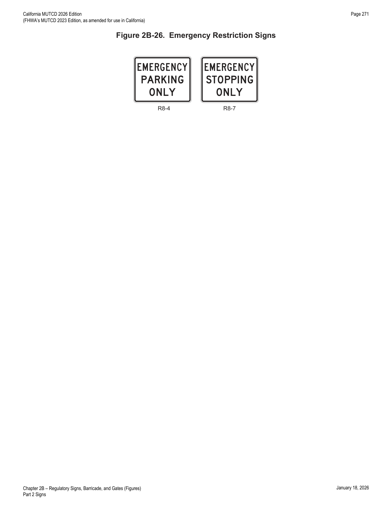
2B.56WALK ON LEFT FACING TRAFFIC and No Hitchhiking Signs (R9-1, R9-4, and R9-4a)
- 01The WALK ON LEFT FACING TRAFFIC (R9-1) sign (see Figure 2B-27) may be used on highways where no sidewalks are provided.
- 02If used, the WALK ON LEFT FACING TRAFFIC sign should be installed on the right-hand side of the road where pedestrians walk on the pavement or shoulder in the absence of pedestrian pathways or sidewalks.
2B.57Pedestrian Crossing Signs (R9-2 and R9-3)
- 01Pedestrian Crossing signs (see Figure 2B-27) may be used to limit pedestrian crossing to specific locations.
- 02If used, Pedestrian Crossing signs shall be installed to face pedestrian approaches.
- 03Where crosswalks are clearly defined, the CROSS ONLY AT CROSSWALKS (R9-2) sign may be used to prohibit pedestrians from crossing at locations away from crosswalks.
- 04The No Pedestrian Crossing (R9-3) sign may be used to prohibit pedestrians from crossing a roadway at an undesirable location or in front of a school or other public building where a crossing is not designated.
- 05The NO PEDESTRIAN CROSSING (R9-3a) word message sign may be used as an alternate to the R9-3 symbol sign. The USE CROSSWALK (R9-3bP) supplemental plaque, along with an arrow, may be installed below either sign to designate the direction of the crossing.
- 05aThe NO PED CROSSING – USE CROSSWALK (R49(CA)) sign may be used as an alternate to the combined R9-3 and R9-3bP signs.
- 05bThe NO PED CROSSING – USE CROSSWALK (R49(CA)) sign shall only be mounted on a Pedestrian Barricade.
- 06Pedestrians with vision disabilities might need features other than traffic control devices to provide effective communication of the prohibition of pedestrian crossing.
- 07The R9-3bP plaque should not be installed in combination with educational plaques.
- 08Refer to CVC 21106.
2B.58Traffic Signal Pedestrian and Bicyclist Actuation Signs (R10-1 through R10-4 and R10-24 series)
- 01Where manual actuation of a traffic signal is required for pedestrians or bicyclists to call a signal phase to cross the roadway, traffic signal signs applicable to pedestrian actuation (see Figure 2B-27) or bicyclist actuation (see Figure 9B-1) shall be mounted immediately above or incorporated into the push button detector units (see Section 4I.05).
- 02Traffic signal signs applicable to pedestrians include: (A) CROSS ONLY ON GREEN (symbolic circular green) (R10-1); (B) CROSS ONLY ON (symbolic walk indication) SIGNAL (R10-2); (C) Push Button for Walk Signal (R10-3 series); and (D) Push Button for Green Signal (R10-4 series).
- 03The following signs may be used as an alternate for the R10-3 and R10-4 signs: (A) Push Button to Cross Street Wait for Walk Signal (R10-3a); or (B) Push Button to Cross Street Wait for Green Signal (R10-4a).
- 04The name of the street to be crossed may be substituted for the word STREET in the legends on the R10-3a and R10-4a signs.
- 05The finger in the push button symbol on the R10-3, R10-3a, R10-4, and R10-4a signs should point in the same direction as the arrow on the sign.
- 06Where symbolic pedestrian signal indications are used, an educational sign (R10-3b) may be used instead of the R10-3 sign to improve pedestrian understanding of pedestrian indications at signalized intersections. Where word-legend pedestrian signal indications are being retained for the remainder of their useful service life, the legends WALK/DONT WALK may be substituted for the symbols on the educational sign R10-3b, creating educational sign R10-3c. The R10-3d educational sign may be used to inform pedestrians that the pedestrian clearance time is sufficient only for the pedestrian to cross to the median at locations where pedestrians cross in two stages using a median refuge island. The R10-3e educational sign may be used where countdown pedestrian signals have been provided. To assist the pedestrian in understanding which push button to push, the R10-3f through R10-3i educational signs, which provide the name of the street to be crossed, may be used instead of the R10-3b through R10-3e educational signs.
- 06aThe R10-3e(CA) or R10-3i(CA) educational sign may be used where countdown pedestrian signals have been provided.
- 06bPedestrian pushbuttons or touch-free detectors may be used to actuate pedestrian signal timing, to activate accessible pedestrian signals, or both. Refer to Chapter 4K regarding the application of accessible pedestrian signals and detectors.
- 06cThe R10-3j(CA) sign may be used where the pedestrian signal can be activated by pushing the button or waving at the button.
- 06dThe R10-3k(CA) sign may be used where warning lights or rapid flashing beacons can be activated by pushing the button or waving at the button.
- 06eThe bottom panels of signs R10-3e(CA) and R10-3i(CA) shall not be used where the pedestrian signal timing is non-actuated and the pedestrian push button is used solely to activate accessible pedestrian signals.
- 07The R10-24 or R10-26 sign (see Section 9B.20) may be used where a push button detector has been installed exclusively to actuate a green phase for bicyclists.
- 08The R10-25 sign (see Figure 2B-27) may be used where a push button detector has been installed for pedestrians to activate In-Roadway Warning Lights (see Chapter 4U) or flashing beacons added to the pedestrian warning signs.
- 08aRefer to Section 4U.02 for standards related to the R10-25 sign.
- 09Section 4I.05 contains information regarding the application of the R10-32P plaque.
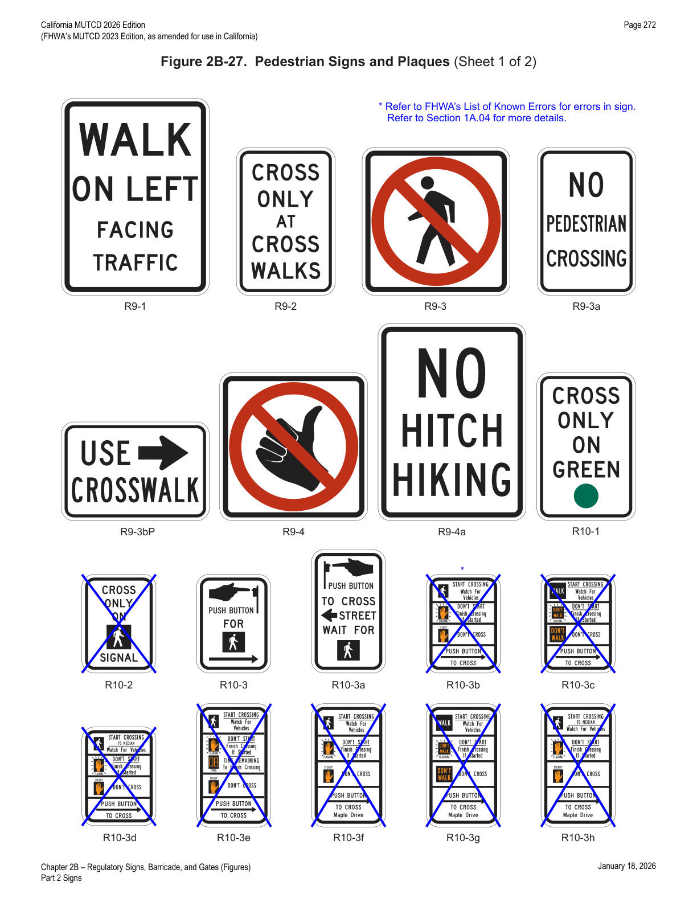
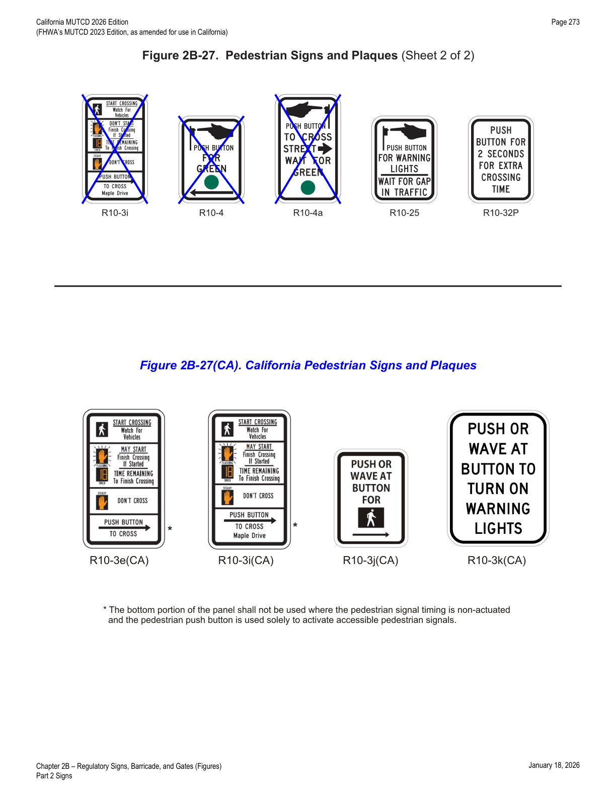
2B.59Traffic Signal Signs and Plaques (R10-5 through R10-30)
- 01To supplement traffic signal control, traffic signal (R10-5 through R10-30) signs (see Figure 2B-28) may be used to regulate road users.
- 02Traffic signal signs may be installed at certain locations to clarify signal control. Among the legends that may be used for this purpose are: (A) LEFT (RIGHT) ON GREEN ARROW ONLY (R10-5); (B) STOP HERE ON RED (R10-6 or R10-6a) for observance of stop lines; (C) DO NOT BLOCK INTERSECTION (R10-7) for avoidance of traffic obstructions; (D) USE LANE(S) WITH GREEN ARROW (R10-8) for obedience to lane-use control signals (see Chapter 4T); (E) LEFT (RIGHT) TURN SIGNAL (R10-10); (F) U TURN SIGNAL (R10-10a) for exclusive control of a U-turn movement; (G) U TURN YIELD TO RIGHT TURN (R10-16); (H) LEFT (RIGHT) TURN YIELD ON GREEN (symbolic circular green) (R10-12); (I) LEFT (RIGHT) TURN YIELD ON FLASHING YELLOW ARROW (R10-12a); and (J) LEFT (RIGHT) TURN YIELD ON FLASHING RED ARROW AFTER STOP (R10-27).
- 02aRefer to CVC 22526 for the DO NOT BLOCK INTERSECTION (R10-7) sign.
- 02bThe LEFT (RIGHT) TURN YIELD ON FLASHING RED ARROW AFTER STOP (R10-27) sign is deleted. Refer to CVC 21457 for the rules governing driver behavior at a flashing red indication at traffic signals.
- 03If used, the LEFT ON GREEN ARROW ONLY sign, the LEFT TURN SIGNAL sign, the LEFT TURN YIELD ON GREEN (symbolic circular green) sign, the LEFT TURN YIELD ON FLASHING YELLOW ARROW sign, or the LEFT TURN YIELD ON FLASHING RED ARROW AFTER STOP sign should be located adjacent to the left-turn signal face.
- 03aRefer to FHWA's List of Known Errors for errors in the Paragraph 3 text. Refer to Section 1A.04 for more details.
- 04If used, the RIGHT ON GREEN ARROW ONLY sign, the RIGHT TURN SIGNAL sign, the RIGHT TURN YIELD ON FLASHING YELLOW ARROW sign, or the RIGHT TURN YIELD ON FLASHING RED ARROW AFTER STOP sign should be located adjacent to the right-turn signal face.
- 05A U TURN YIELD TO RIGHT TURN (R10-16) sign should be installed near the left-turn signal face if U-turns are allowed on a protected left-turn movement on an approach from which a right-turn GREEN ARROW signal indication is simultaneously being displayed to drivers making a right turn from the conflicting approach to their left.
- 5aThe U-TURN YIELD TO RIGHT TURN (R10-16) sign is deleted, as this condition should not be practiced. The actual movement conflict should be eliminated rather than corrected with this sign.
- 06If used, a U TURN SIGNAL (R10-10a) sign may be installed adjacent to the signal face that exclusively controls a U-turn movement.
- 07If needed for additional emphasis, an additional LEFT TURN YIELD ON GREEN (symbolic circular green) (R10-12) sign with an AT SIGNAL (R10-31P) supplemental plaque (see Figure 2B-28) may be installed in advance of the intersection.
- 07aIf used, the location of this additional R10-12 sign should be in the raised median at the beginning of the left-turn lane, or be based upon Table 2C-3, or as determined by engineering judgment.
- 07bThe LEFT TURN ON GREEN ARROW ONLY – NO U TURN (SR39B(CA)) sign (see Figure 2B-28(CA)) may be used at signalized intersections with separate left-turn phases to inform traffic that left turns can only be made on a green arrow, in accordance with CVC 21454, and that U-turns are prohibited.
- 07bThe LEFT OR U TURN ON GREEN ARROW ONLY (SR39A(U)(CA)) sign (see Figure 2B-28(CA)) may be used at signalized intersections with separate left-turn phases to inform traffic that left turns and U-turns can only be made on a green arrow, in accordance with CVC 21454.
- 08In situations where traffic control signals are coordinated for progressive timing, the Traffic Signal Speed (I1-1) sign may be used (see Section 2H.04).
- 09The CROSSWALK—STOP ON RED (symbolic circular red) (R10-23) sign and/or the STOP ON STEADY RED-YIELD ON FLASHING RED AFTER STOP (R10-23a) sign (see Figure 2B-28) shall only be used in conjunction with pedestrian hybrid beacons (see Section 4J.02).
- 09aRefer to FHWA's List of Known Errors for errors in the Paragraph 9 text. Refer to Section 1A.04 for more details.
- 10The EMERGENCY SIGNAL (R10-13) sign (see Figure 2B-28) shall be used in conjunction with emergency-vehicle traffic control signals (see Section 4M.02).
- 11The EMERGENCY SIGNAL—STOP ON FLASHING RED (R10-14 or R10-14a) sign (see Figure 2B-28) shall be used in conjunction with emergency-vehicle hybrid beacons (see Section 4N.02).
- 12If needed for extra emphasis, a STOP HERE ON FLASHING RED (R10-14b) sign may be installed with an emergency-vehicle hybrid beacon.
- 13The Left Turn Yield to Bicycles (R10-12b) sign shall be limited to applications where the conflicting bicyclist movement would be unexpected in direction, location, or a similar condition that would tend to violate the expectation of a turning motorist.
- 14The Left Turn Yield to Bicycles sign should be located adjacent to the left-turn signal face.
- 15If needed for additional emphasis, an additional Left Turn Yield to Bicycles sign with an AT SIGNAL (R10-31P) supplemental plaque (see Figure 2B-28) may be installed in advance of the intersection for motor vehicles.
- 15aIf used, the location of this additional R10-12b sign should be in the raised median at the beginning of the left-turn lane, or be based upon Table 2C-3, or as determined by engineering judgment.
- 16Where conditions might warrant additional emphasis to drivers turning at a signalized intersection where potential pedestrian conflicts might not be readily apparent, a Turning Vehicles Yield to (Stop for) Pedestrians (R10-15, R10-15a) sign (see Figure 2B-28) may be used.
- 17The Turning Vehicles Stop for Pedestrians (R10-15a) sign shall only be used in jurisdictions where laws, ordinances, or resolutions specifically require that a driver must stop for a pedestrian.
- 17aThe Turning Vehicles Stop for Pedestrians (R10-15a) sign is deleted, as a stop is not required in California per CVC 21950.
- 18The R10-15 series signs, where used, should be placed as follows: (A) on the near right corner of the signalized intersection for right-turning vehicles; (B) on the far left corner of the signalized intersection for left-turning vehicles onto a two-way street; (C) on the near left corner of the signalized intersection for left-turning vehicles from a one-way street onto a one-way street.
2B.60No Turn on Red Signs (R10-11 Series, R10-17a, and R10-30)
- 01Where a right turn on a circular red signal indication (or a left turn on a circular red signal indication from a one-way street to a one-way street) is to be prohibited, a NO TURN ON RED (R10-11, R10-11b) word message sign (see Figure 2B-28) shall be used. A NO TURN ON RED (symbolic circular red) (R10-11a) sign (see Figure 2B-28) shall be used when the approach is controlled by both circular red and red arrow indications.
- 01aRefer to CVC 22101 for the No Turn on Red signs.
- 02If used, the No Turn on Red sign should be installed near the appropriate signal head.
- 02aA No Right Turn on Red sign may be used on the near right of skewed intersections where the adjacent approach leg to the left intersects the road user's approach leg at an angle of less than 75 degrees.
- 02bA No Turn on Red sign may be used on the near right of extremely wide intersections.
- 02cWhen used, the No Turn on Red sign should be placed where it will most easily be seen by the road user intending to turn. At least one should be placed overhead, or at a right/left-hand corner facing approaching traffic.
- 03A No Turn on Red sign should be considered when an engineering study finds that one or more of the following conditions exists: (A) inadequate sight distance to vehicles approaching from the left (or right, if applicable); (B) geometrics or operational characteristics of the intersection that might result in unexpected conflicts; (C) an exclusive pedestrian or bicycle phase; (D) an unacceptable number of conflicting pedestrian movements with right-turn-on-red maneuvers, especially involving children, older pedestrians, or persons with disabilities; (E) more than three right-turn-on-red crashes reported in a 12-month period for the particular approach; or (F) the skew angle of the intersecting roadways creates difficulty for drivers to see traffic approaching from their left (or right, if applicable).
- 04If an R10-11, R10-11a, R10-11b, or R10-17a sign of conventional road size (see Table 2B-1) is used on an approach on the far side of the intersection and the distance between the stop line and the sign is greater than 120 feet, a duplicate sign shall be located on the near side of the intersection to supplement the sign on the far side.
- 05When a no-turn-on-red restriction applies during certain time periods only, the following alternatives may be used: (A) Movement Prohibition (R3-1, R3-2, R3-4, R3-18, and R3-27) signs or NO TURN ON RED signs displayed by using an activated blank-out sign for the time period or one or more portions of a particular signal cycle during which the prohibition is applicable; or (B) static signs incorporating a supplemental legend, or a supplemental R10-20aP plaque (see Figure 2B-28), showing the hours and days during which the prohibition is applicable.
- 06White LEDs may be used in the border and activated during periods of turn prohibition to enhance sign conspicuity.
- 07On signalized approaches with more than one right-turn lane, a NO TURN ON RED EXCEPT FROM RIGHT LANE (R10-11c) sign (see Figure 2B-28) may be post-mounted at the intersection, or a NO TURN ON RED FROM THIS LANE (with down arrow) (R10-11d) sign (see Figure 2B-28) may be mounted over the approximate center of the lane from which turns on red are prohibited.
- 08Where turns on red are permitted and the signal indication is a steady RED ARROW, the RIGHT (LEFT) ON RED ARROW AFTER STOP (R10-17a) sign (see Figure 2B-28) should be installed adjacent to the RED ARROW signal indication. A circular red signal face should be used instead of correcting the condition with this sign.
- 08aThe RIGHT (LEFT) ON RED ARROW AFTER STOP (R10-17a) sign is deleted, as it compromises the meaning of the red arrow.
- 09A RIGHT TURN ON RED MUST YIELD TO U-TURN (R10-30) sign (see Figure 2B-28) may be installed to remind road users that they must yield to conflicting U-turn traffic on the street or highway onto which they are turning right on a red signal after stopping.
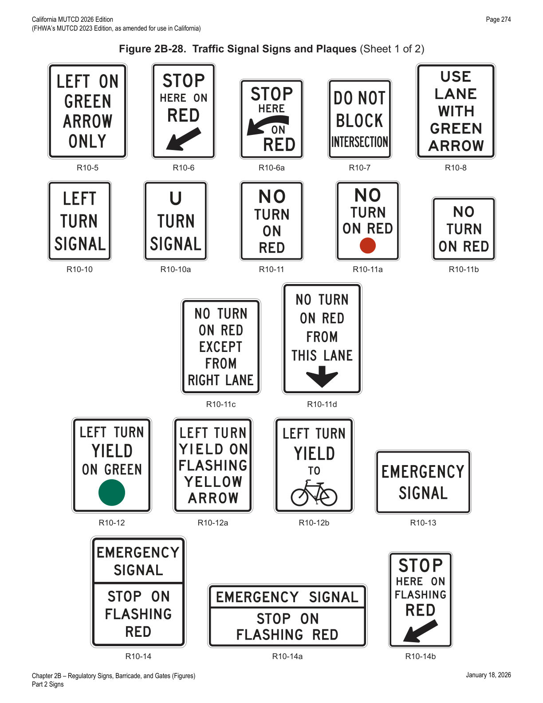
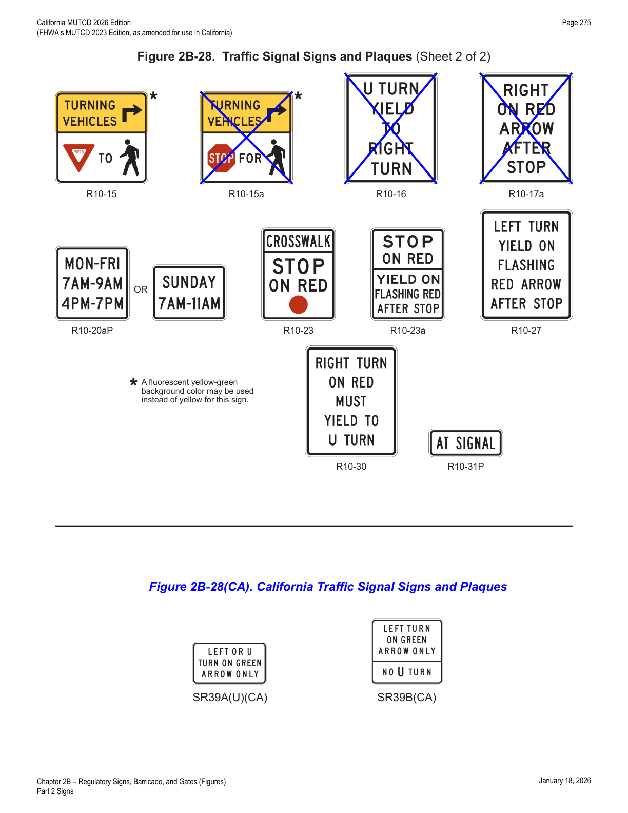
2B.61Ramp Metering Signs (R10-28 and R10-29)
- 00aFor State highways, refer to Caltrans' Ramp Metering Design Manual. Refer to Section 1A.05 for information regarding this publication.
- 00bRefer to Section 2G.102(CA) for regulatory signs for HOV lanes at metered ramps.
- 01When ramp control signals (see Chapter 4P) are used to meter traffic on a freeway or expressway entrance ramp, regulatory signs with legends appropriate to the control may be installed adjacent to the ramp control signal faces.
- 02For entrance ramps with only one controlled lane, an XX VEHICLE(S) PER GREEN (R10-28, R89A(CA)) sign (see Figure 2B-29(CA)) may be used to inform road users of the number of vehicles permitted to proceed during each short display of the green signal indication. For entrance ramps with more than one controlled lane, an XX VEHICLE(S) PER GREEN EACH LANE (R10-29) sign (see Figure 2B-29) may be used to inform road users of the number of vehicles permitted to proceed from each lane during each short display of the green signal indication.
- 03Chapter 2L contains provisions for the use of blank-out or changeable message signs when the metering is limited by time, day, or condition.
- 04The STOP HERE ON RED (R10-6) sign should be placed on Type 1 standards near the limit line at metered entrance ramps with three or more lanes.
- 05The R10-6 sign is used to emphasize the required observance of the signal limit line, such as the metering signal controlling traffic on metered freeway entrance ramps.
- 06The ALL VEHICLES STOP ON RED (R90-1(CA)) sign should be placed when converting a non-metered HOV preferential lane to a metered one.
- 07The R90-1(CA) sign may also be used on new installations where potential for confusion exists.
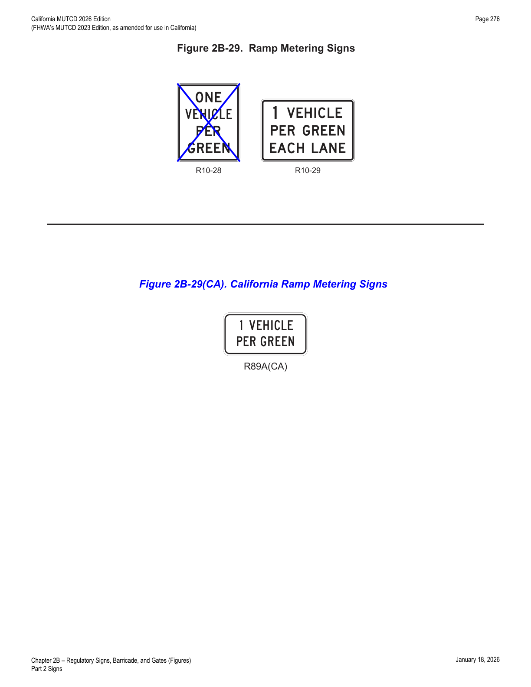
2B.62KEEP OFF MEDIAN Sign (R11-1)
- 01The KEEP OFF MEDIAN (R11-1) sign (see Figure 2B-30) may be used to prohibit driving into or parking on the median.
- 02The KEEP OFF MEDIAN sign should be installed on the left-hand side of the roadway within the median at random intervals as needed wherever there is a tendency for encroachment.
2B.63ROAD CLOSED Sign (R11-2) and LOCAL TRAFFIC ONLY Signs (R11-3 Series, R11-4)
- 01The ROAD CLOSED (R11-2) sign should be installed where roads have been closed to all traffic (except authorized vehicles).
- 02ROAD CLOSED—LOCAL TRAFFIC ONLY (R11-3) or ROAD CLOSED TO THRU TRAFFIC (R11-4) signs should be used where through traffic is not permitted, or for a closure some distance beyond the sign, but where the highway is open for local traffic up to the point of closure.
- 03The Road Closed (R11-2, R11-3 series, and R11-4) signs (see Figure 2B-30) shall be designed as horizontal rectangles. These signs shall be preceded by the applicable Advance Road Closed warning sign with the secondary distance legend or AHEAD and, if applicable, an Advance Detour warning sign (see Section 6H.04).
- 04An intersecting street name or a well-known destination may be substituted for the XX MILES AHEAD legend in urban areas.
- 05The word message BRIDGE OUT or CLOSED may be substituted for the ROAD CLOSED legend where applicable.
- 05a"Bridge Out" refers to conditions where the bridge is destroyed, washed out, or submerged.
- 05b"Bridge Closed" refers to situations where the bridge is closed temporarily for maintenance, construction, or other activities but remains structurally intact.
- 06Where conditions allow for bicycle travel on the road beyond the point of closure to motor vehicles, an EXCEPT BICYCLES (R3-7bP) plaque (see Figure 2B-4) may be used with the ROAD CLOSED sign.
- 07The RAMP CLOSED (C2(CA)) sign should be installed where ramps or bridges have been closed to all traffic (except authorized vehicles).
- 08The word BRIDGE may be substituted for RAMP where applicable.
2B.64Weight Limit Signs (R12-1 through R12-7)
- 01Weight limit signs (see Figure 2B-30) shall be used to indicate a section of highway or structure that has a vehicle weight restriction.
- 01aThe weight limit signs shall be placed at each end of the affected portion of a highway section.
- 01bThey should be placed at a distance of not more than 500 feet from the ends of an affected bridge or structure.
- 02The units shown on any weight limit sign should be consistent within a State or region with respect to pounds or tons.
- 03Where the restriction applies to axle weight rather than gross load, the legend AXLE WEIGHT LIMIT XX TONS or AXLE WEIGHT LIMIT XX LBS (R12-2) may be used.
- 04In areas where multiple regulations are applicable, such as limiting both axle weight and gross vehicle weight, a WEIGHT LIMIT XX TONS PER AXLE, XX TONS GROSS (R12-4) sign combining the necessary messages on a single sign may be used.
- 05Posting of specific load limits may be accomplished by use of the Weight Limit (R12-5) symbol sign. A sign containing the legend WEIGHT LIMIT on the top two lines, and showing up to three different truck symbols and their respective weight limits for which restrictions apply, may be used, with the weight limits displayed to the right of each symbol as XX T. A bottom line of legend stating GROSS WT may be included if needed for enforcement purposes.
- 06A specialized hauling vehicle is a single-unit truck with multiple closely-spaced axles. Examples include dump trucks, construction vehicles, solid waste trucks, and other hauling trucks. Specialized hauling vehicles typically have 4 to 7 axles.
- 07The Weight Limit (R12-6) sign may be used to indicate vehicle weight restrictions for specialized hauling vehicles.
- 07aThe Commercial Vehicle Weight Exclusion (R36(CA)) sign (see Figure 2B-30(CA)) may be used to indicate that vehicles over a specified number of tons are prohibited from certain streets and highways.
- 08The symbols shown on the R12-5 and R12-6 Weight Limit signs shall apply to all trucks of that configuration (single-unit, single-trailer, or multi-trailer) regardless of the shape of the vehicle. Symbolic representations of other vehicle shapes or modifications of standard symbols shall not be used.
- 09The facility type (such as "BRIDGE") may be added to the beginning of the sign legend to clarify the specific applicability of the weight limit.
- 10If the R12-5 sign depicts only one single-unit vehicle symbol, the weight limit associated with that single-unit vehicle symbol shall apply to all single-unit vehicles, regardless of number of axles.
- 11The weight limit associated with the single-trailer vehicle symbol shall apply to all single-trailer vehicles, regardless of number of axles or vehicle shape.
- 12The weight limit associated with the multi-trailer vehicle symbol shall apply to all multi-trailer vehicles with two or more trailers, regardless of number of axles or vehicle shape.
- 13A weight limit sign (see Figure 2B-30) shall be located at the applicable section of highway or structure.
- 14An additional weight limit sign, with an advisory distance or directional legend, shall be located in advance of the applicable section of highway or structure so that prohibited vehicles can detour or turn around prior to the limit zone.
- 14aRefer to Section 2C.102(CA) for warning Weight Limit signs used to select an alternate route.
- 15An emergency vehicle is designed to be used under emergency conditions to transport personnel and equipment in support of fire suppression and mitigation of other hazardous situations. Emergency vehicles are typically operated by fire departments and are primarily equipped for firefighting, but are also used to respond to and mitigate other hazardous situations in an emergency. They can create higher load effects compared to non-emergency vehicles of similar weight.
- 16The Emergency Vehicle Weight Limit (R12-7) sign, carrying the legend EMERGENCY VEHICLE WEIGHT LIMIT SINGLE AXLE XX TONS, TANDEM XX TONS, and GROSS XX TONS, may be used to indicate vehicle weight restrictions for emergency vehicles.
- 17When the emergency-vehicle weight limit is displayed in the same assembly as the primary weight limit sign, the Emergency Vehicle Weight Limit (R12-7aP) plaque shall be mounted below.
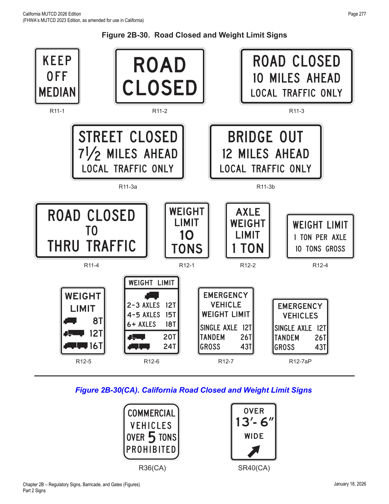
2B.65Weigh Station Sign (R13-1)
- 01An R13-1 sign with the legend TRUCKS OVER XX TONS MUST ENTER WEIGH STATION NEXT RIGHT (see Figure 2B-31) should be used to direct appropriate traffic into an inspection station.
- 02The R13-1 sign should be supplemented by the D8 series of guide signs (see Section 2D.51).
- 03An SR57-1(CA) sign with the legend ALL TRUCKS STOP AT SCALES, with the NO PICKUPS (SR57-1P(CA)) plaque mounted below (see Figure 2B-31(CA)), should be used to direct appropriate traffic into a weigh station.
- 04The SR57-1(CA) and SR57-1P(CA) sign combination should be supplemented by the D8 series of guide signs (see Section 2D.51).
- 05Refer to Figure 2B-31(CA) and Figure 2E-59 for Weigh Station Signs.
- 06The TRUCKS NOT GIVEN BYPASS SIGNAL MUST ENTER OPEN SCALES (SR17(CA)) sign should be used in advance of a truck weigh station equipped with a mainline bypass system and weigh-in-motion scales to electronically weigh and verify compliance of commercial trucks as they approach the weigh station.
- 07The Width Limit (SR40(CA)) sign (see Figure 2B-30(CA)) should be placed at truck weigh stations to direct over-width vehicles around the station if the weigh station lacks adequate width. The California Highway Patrol should be contacted to determine where these signs are needed. Refer to CVC 35790.
- 08The ALL BUSES STOP AT SCALES (SR41(CA)) and ALL BUSES with Arrow (SR42(CA)) signs shall be used as a temporary sign for Critical Item Bus Inspections on State highways.
- 09The Weigh Station Repair Service (S21P(CA)) plaque may be installed at commercial vehicle inspection facilities on State highways where needed, at the request of the California Highway Patrol.
- 10The WAIT HERE UNTIL SCALE CLEAR (SR6-1(CA)) sign may be used at weigh stations to provide guidance to trucks entering the scales.
- 11The RELEASE BRAKES WHILE ON SCALE (SR7-1(CA)) sign may be used at weigh stations to provide guidance to trucks when they are on the scales.
- 12The SET PARKING BRAKES (SR8-1(CA)) sign may be used at weigh stations to provide guidance to trucks when they are on the scales.
- 13The LOADED (SR9-1(CA)) sign may be used at weigh stations to designate the lane loaded trucks are to use when passing through the scales.
- 14The EMPTY (SR10-1(CA)) sign may be used at weigh stations to designate the lane empty trucks are to use when passing through the scales.
- 15The EMPTY 5 MPH (SR11-1(CA)) sign may be used at weigh stations to control the speed of empty trucks passing through the scales.
- 16The LOADED 3 MPH (SR12-1(CA)) sign may be used at weigh stations to control the speed of loaded trucks passing through the scales.
- 17The Theft/CHP plaque (SR13-1P(CA)) may be used at weigh stations to advise scale users that removing any property from the weigh station without authorization from the California Highway Patrol is a violation of the Penal Code.
2B.66TRUCK ROUTE Sign (R14-1)
- 01The TRUCK ROUTE (R14-1) sign (see Figure 2B-31) should be used to mark a route that has been designated to allow truck traffic.
- 02Section 2D.20 contains information regarding the use of the TRUCK (M4-4P) auxiliary plaque (see Figure 2D-5) on a designated numbered alternative route.
- 03Refer to CVC §§ 21101 through 21104 and 35701 through 35715.
- 04Generally, Caltrans is not unilaterally authorized to prohibit truck travel on State highways. Various sections of the CVC allow cities and counties to restrict, by ordinance, commercial vehicles subject to the specific conditions in those sections.
- 05Generally, no such local ordinance is effective with respect to any State highway until the ordinance has been approved by Caltrans. This approval shall be made by the Caltrans Director.
- 06The proposed local ordinance shall designate an unrestricted alternate route, or routes, for use by the prohibited vehicles. Such proposed local ordinances shall not be approved unless the alternate route(s) are considered suitable by Caltrans.
- 07An investigation of designated alternate routes shall be made with special attention given to the following features: (1) geometrics; (2) increase in distance of travel and comparisons in time of travel; (3) railroad grade crossings; (4) present traffic and practical capacity of proposed alternates; (5) structural adequacy of pavement for heavy truck traffic; (6) heavy grades; (7) proximity to schools or school routes; and (8) developed residential areas.
2B.67Hazardous Material Signs (R14-2 and R14-3)
- 01The Hazardous Material Route (R14-2) sign (see Figure 2B-31) shall be used to identify routes that have been designated by proper authority for vehicles transporting hazardous material and/or waste.
- 01aThe R14-2 sign may be used to guide road users around routes where the transportation of hazardous material and/or waste is permitted.
- 01bThe HAZARDOUS WASTE PERMITTED (R103aP(CA)) or the HAZARDOUS MATERIAL PERMITTED (R105aP(CA)) sign shall be positioned below the R14-3 symbol sign.
- 01dRefer to CVC §§ 31303 and 31304.
- 02On routes where the transporting of hazardous material and/or waste is prohibited, the Hazardous Material Prohibition (R14-3) sign (see Figure 2B-31) shall be used.
- 02aThe HAZARDOUS WASTE PROHIBITED (R102aP(CA)) or the HAZARDOUS MATERIAL PROHIBITED (R104aP(CA)) sign shall be positioned below the R14-2 sign.
- 02bRefer to CVC §§ 31303 and 31304.
- 03If used, the Hazardous Material Prohibition sign should be installed on a street or roadway at a point where vehicles transporting hazardous material have the opportunity to take an alternate route.
- 04Refer to Figure 2B-31(CA) for Hazardous Waste/Material signs.
- 05The NO EXPLOSIVES OR FLAMMABLES (SR18(CA)) sign should be placed on highways, structures, tunnels, etc. where vehicles transporting explosives or flammable materials are prohibited. The SR18(CA) sign should be placed at a location that will provide a motorist the opportunity to turn around.
- 06The EXPLOSIVES AND CORROSIVES PROHIBITED WITHOUT PERMIT (SR19-1(CA)) sign should be placed on highways, structures, tunnels, etc. where vehicles transporting explosives or corrosive materials are prohibited without a permit. The SR19-1(CA) sign should be placed at a location that will provide a motorist the opportunity to turn around.
- 07The TRANSPORTING ILLEGAL FIREWORKS PROHIBITED (SR25(CA)) sign may be used on any roadway upon which the transportation of illegal fireworks has been prohibited by a local ordinance or resolution, per California Health & Safety Code Division 11, Part 2, Sections 12500 through 12726.
- 08If used, the SR25(CA) sign shall be used to identify only those street or highway locations, either State or local, upon which the transportation of illegal fireworks is prohibited, as established by the local ordinance or resolution.
2B.68National Network Signs (R14-4 and R14-5)
- 01The signing of the National Network routes for trucking is optional. Refer to Chapter 2I.
- 02When a National Network route is signed, the National Network (R14-4) sign (see Figure 2B-31) shall be used.
- 03The National Network Prohibition (R14-5) sign (see Figure 2B-31) may be used to identify routes, portions of routes, and ramps where trucks are prohibited. The R14-5 sign may also be used to mark the ends of designated routes.
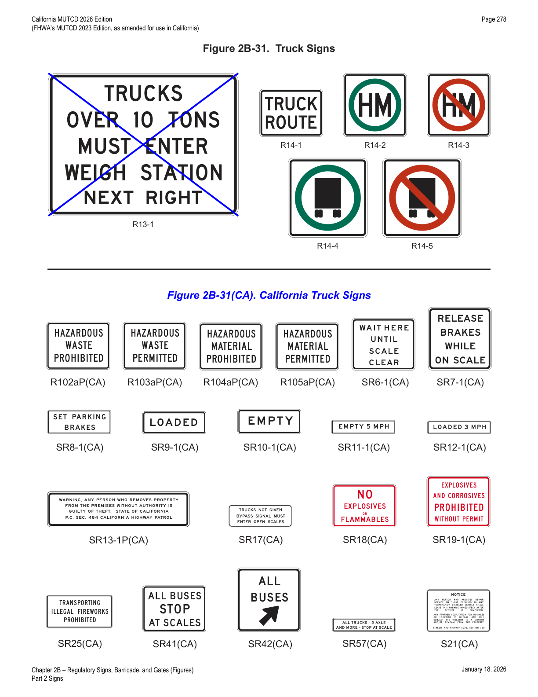
2B.69Photo Enforced Signs and Plaques (R10-18, R10-18a, R10-19P, R10-19aP)
- 01A Traffic Laws Photo Enforced (R10-18) sign (see Figure 2B-32) may be installed at a jurisdictional boundary to advise road users that some of the traffic regulations within that jurisdiction are being enforced by photographic equipment.
- 02A Traffic Signal Photo Enforced (R10-18a) sign (see Figure 2B-32) shall be installed within 200 feet in advance of or at a traffic signal to advise road users that compliance with the signal is enforced by photographic equipment. Refer to CVC § 21455.5.
- 02aA Signal Ahead (W3-3) sign and a Traffic Signal Photo Enforced (R10-18a) sign may be used on the same approach, provided they are on separate supports.
- 02bThe RED LIGHT VIOLATION $___ FINE (SR58(CA)) sign (see Figure 2B-3(CA)) may be used in advance of signalized intersections where a local agency has adopted an ordinance setting a specific fine amount for red light violations within its jurisdiction. The SR58(CA) sign may be placed on State highways when requested by the local agency.
- 03A Photo Enforced (R10-19P) plaque or a PHOTO ENFORCED (R10-19aP) word message plaque (see Figure 2B-32) may be mounted below a regulatory sign to advise road users that the regulation is enforced by photographic equipment.
- 04The Traffic Signal Photo Enforced (R10-18a) sign shall not be installed on approaches to signalized locations where red-light cameras are not present on any of the approaches to the signalized location.
- 05A Traffic Signal Photo Enforced (R10-18a) sign shall not be installed on the same support in combination with a Signal Ahead (W3-3) sign.
- 06If used below a regulatory sign, the Photo Enforced (R10-19P or R10-19aP) plaque shall be a rectangle with a black legend and border on a white background.
- 07Refer to CVC § 21455.5 for Traffic Signal Automated Enforcement: Photographic Records.
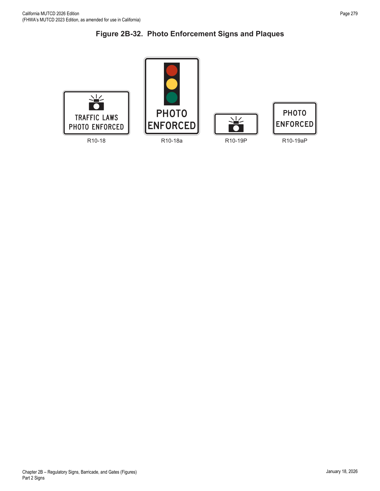
2B.70Move Vehicles from Travel Lanes Sign (R16-4)
- 01A STATE LAW MINOR CRASHES MOVE VEHICLES FROM TRAVEL LANES (R16-4) sign, or the STATE LAW MINOR CRASH NO INJURIES – SAFELY MOVE VEHICLES FROM TRAVEL LANES (SR61-1(CA)) sign (see Figure 2B-33 and Figure 2B-33(CA)), may be installed in accordance with Section 2A.01 to require motorists to move their vehicles out of the travel lanes if they have been involved in a non-injury crash.
- 02If the specific requirements of a State law vary, the word legend of the R16-4 sign may be modified to reflect the appropriate law.
2B.71Move Over or Reduce Speed Sign (R16-3)
- 01A STATE LAW MOVE OVER OR REDUCE SPEED FOR VEHICLES STOPPED ON SHOULDER (R16-3) sign, or the STATE LAW MOVE OVER OR SLOW FOR STOPPED EMERGENCY AND MAINTENANCE VEHICLES (R110-1(CA)) sign (see Figure 2B-33 and Figure 2B-33(CA)), may be installed in accordance with Section 2A.01 to require motorists to change lanes and/or reduce speed when passing stopped emergency vehicles on the shoulder. Refer to CVC 21809.
- 02If the specific requirements of a State law vary, the word legend of the R16-3 sign may be modified to reflect the appropriate law.
- 03The R110-1(CA) sign shall only be used within freeway facilities.
2B.72No Hand-Held Phone Use by Driver Signs (R16-15 and R16-15a)
- 01A STATE LAW NO HAND-HELD PHONE USE BY DRIVER (R16-15 or R16-15a) sign (see Figure 2B-33) may be installed in accordance with Section 2A.01 to notify drivers that they are prohibited from using hand-held telephones while driving.
- 02If the specific requirements of a State law vary, the word legend of the R16-15 series signs may be modified to reflect the appropriate law.
2B.73Headlight Use Signs (R16-5 through R16-11)
- 01Some States require road users to turn on their vehicle headlights under certain weather conditions, as a safety improvement measure on roadways experiencing high crash rates, or in special situations such as when driving through a tunnel.
- 01aRefer to CVC § 24400.
- 02Figure 2B-34 shows the various signs that can be used for informing motorists of these requirements.
- 03A LIGHTS ON WHEN USING WIPERS (R16-5) sign or a LIGHTS ON WHEN RAINING (R16-6) sign may be installed in accordance with Section 2A.01 to inform road users of State laws regarding headlight use. Although these signs are typically installed facing traffic entering the State just inside the State border, they may also be installed at other locations within the State.
- 04If a particular section of roadway has been designated as a safety improvement zone within which headlight use is required, a TURN ON HEADLIGHTS NEXT XX MILES (R16-7) sign or a BEGIN DAYTIME HEADLIGHT SECTION (R16-10) sign should be installed at the upstream end of the section, and an END DAYTIME HEADLIGHT SECTION (R16-11) sign should be installed at the downstream end of the section.
- 05A TURN ON HEADLIGHTS (R16-8) sign may be installed to require road users to turn on their headlights in special situations, such as when driving through a tunnel or at the entrances from major side roads to a daytime headlight section. A CHECK HEADLIGHTS (R16-9) sign may be installed downstream from the special situation to inform drivers that using their headlights is no longer required.
- 06A CHECK HEADLIGHTS (R16-9) sign should be placed approximately 500 feet beyond the end of a daytime headlight section.
- 07A Daytime Headlight (S30(CA)) sign (see Figure 2B-34(CA)) may be used, after a traffic investigation and consultation with the local CHP office and/or law enforcement, as a traffic safety improvement measure in high-accident locations on two-lane highways where there is a potential for head-on collisions.
- 08Refer to CVC § 21461 for enforcement of the S30(CA) series and R16-5 through R16-11 signs.
2B.74Seat Belt Symbol
- 01The seat belt symbol should not be used alone. If used, the seat belt symbol should be incorporated into regulatory sign messages for mandatory seat belt use.
- 01aThe Seat Belt (SR15(CA)) sign (see Figure 2B-33(CA)) should be placed in each direction on all freeways and other major State routes at approximate 50-mile intervals.
- 01bThe SAFETY BELT LAW ENFORCED (SR15aP(CA)) sign (see Figure 2B-33(CA)) shall be placed below each installation of the Seat Belt (SR15(CA)) sign.
- 01cThe Seat Belt (SR15(CA)) and SAFETY BELT LAW ENFORCED (SR15aP(CA)) sign combination may also be used on local arterials.
- 02The seat belt symbol is illustrated in the "Standard Highway Signs" publication (see Section 1A.05).
The Seat Belt (SR15(CA)) and SAFETY BELT LAW ENFORCED (SR15aP(CA)) signs are shown in Figure 2B-33(CA) above, alongside the other California regulatory signs covered in Sections 2B.70–2B.72.
2B.75Barricades
- 01Barricades may be used to mark any of the following conditions: (A) the end of a roadway; (B) a ramp or lane that is closed for operational purposes; or (C) the permanent or semi-permanent closure or termination of a roadway.
- 02When used to warn and alert road users of the terminus of a roadway, other than in temporary traffic control zones, barricades shall meet the design criteria of Section 6K.07 for a Type 3 Barricade, except that the colors of the stripes shall be retroreflective white and retroreflective red.
- 03An end-of-roadway marker or markers may be used, as described in Section 2C.73.
- 04Appropriate advance warning signs (see Chapter 2C) should be used.
This chapter does not include a dedicated figure for barricades; the Type 3 Barricade design detailed in Section 6K.07 is illustrated in Figure 8D-1 (Part 8).
2B.76Gates
- 01Gates described in this Section, used for weather or other emergency conditions, are typically permanently installed to enable the gate to be immediately deployed as needed to prohibit the entry of traffic to the highway segment(s).
- 02A gate typically features a gate arm that is moved from a vertical to a horizontal position, or is rotated in a horizontal plane from parallel to traffic to perpendicular to traffic. Traffic is obstructed and required to stop when the gate arm is placed in a horizontal position perpendicular to traffic. Another type of gate consists of a segment of fence (usually on rollers) that swings open and closed, or that is retracted to open and extended to close.
- 03Gates are sometimes used to enforce a required stop. Examples of such uses include: (A) parking facility entrances and exits; (B) private community entrances and exits; (C) military base entrances and exits; (D) toll plaza lanes; (E) movable bridges (see Chapter 4Q); (F) Automated Flagger Assistance Devices (see Chapter 6L); and (G) grade crossings (see Part 8).
- 04Gates are sometimes used to periodically close a roadway or a ramp. Examples of such uses include: (A) closing ramps to implement counter-flow operations for evacuations; (B) closing ramps that lead to reversible lanes; and (C) closing roadways for weather events such as snow, ice, or flooding, or for other emergencies.
- 05Except as provided in Paragraph 6, gate arms, if used, shall be fully retroreflective on both sides, with vertical stripes alternately red and white at 16-inch intervals measured horizontally, as shown in Figure 8D-1. The width (which becomes the height of the retroreflective sheeting when the gate is in the down position) of the retroreflective sheeting on the front of the gate arm shall be at least 4 inches. Refer to Section 8D.03, Paragraph 5, if the gate arm extends beyond 32 feet.
- 06If used on a one-way roadway or ramp, the retroreflective sheeting may be omitted on the side of the gate (or rolling fence) facing away from approaching traffic.
- 07Where gate arms are used to block off ramps into reversible lanes or to redirect approaching traffic, the red and white striping may be angled such that the stripes slope downward at an angle of 45 degrees toward the side of the gate arm on which traffic is to pass.
- 08The gate arm shall extend across the approaching lane or lanes of traffic to effectively block motor vehicle, bicycle, and/or pedestrian travel as appropriate.
- 09When a gate that is rotated in a horizontal plane is in the position where it is parallel to traffic (indicating that the roadway is open), the outer end of the gate arm should be rotated to the downstream direction (from the perspective of traffic in the lane adjacent to the gate support) to prevent spearing if the gate is struck by an errant vehicle.
- 10If red lights are attached to a traffic gate, the red lights shall be steadily illuminated or flashed only during the period when the gate is in the horizontal or closed position and when the gate is in the process of being opened or closed.
- 11Except as provided in Paragraph 6, rolling sections of fence, if used, shall include either a horizontal strip of retroreflective sheeting on both sides of the fence with vertical stripes alternately red and white at 16-inch intervals measured horizontally to simulate the appearance of a gate arm in the horizontal position, or one or more Type 4 object markers (see Section 2C.73), or both. If a horizontal strip of retroreflective sheeting is used, the bottom of the sheeting shall be located 3.5 to 4.5 feet above the roadway surface.
Like barricades, gates have no dedicated figure in this chapter; the red-and-white 16-inch striping pattern for gate arms is shown in Figure 8D-1 (Part 8).
California Sections
2B.101(CA)NO FISHING (JUMPING) FROM BRIDGE Sign (R23(CA))
- 01The NO FISHING (JUMPING) FROM BRIDGE sign (R23(CA)) (see Figure 2B-106(CA)) may be used when fishing or jumping from a bridge is prevalent and where investigation has shown that fishing or jumping is unsafe or interferes with the orderly movement of traffic.
2B.102(CA)$1000 Fine Signs (R47(CA) and R47A(CA))
- 01The $1000 FINE FOR LITTERING (R47(CA)) sign (see Figure 2B-106(CA)) may be used to inform the public that it is unlawful to dispose of litter on the highway.
- 02Refer to Streets and Highways Code Section 101.6 and CVC §§ 23111 through 23113 and 42001.7.
- 03The $1000 FINE FOR ANIMAL ABANDONMENT (R47A(CA)) sign (see Figure 2B-106(CA)) is used to inform the public that the abandonment or dumping of any animal is a criminal offense.
- 04The R47A(CA) sign should be placed on all major State highways, as close as practicable, following the Welcome to California (G10B(CA)) sign.
2B.103(CA)PRIVATE ROAD (PRIVATE PROPERTY) VEHICLE CODE ENFORCED Sign (R101(CA))
- 01The PRIVATE ROAD VEHICLE CODE ENFORCED (R101(CA)) sign (see Figure 2B-106(CA)) shall be used at the entrance to a privately owned and maintained road when enforcement of vehicle code provisions apply, as provided in CVC § 21107.7.
- 02The alternate message PRIVATE PROPERTY shall be used at each entrance to a privately owned and maintained off-street parking facility when enforcement of vehicle code provisions apply, as provided in CVC § 21107.8.
2B.104(CA)GOLF CARTS OK DAYLIGHT HOURS Sign (SR43(CA))
- 01The GOLF CARTS OK DAYLIGHT HOURS (SR43(CA)) sign (see Figure 2B-106(CA)) shall be placed on roadways which local authorities have designated for combined use in accordance with CVC § 21115.
- 02The ordinance number may be included on the sign.
2B.105(CA)Bus and Truck Registration Sign (SR44(CA))
- 01The Bus and Truck Registration (SR44(CA)) sign (see Figure 2B-106(CA)) should be placed at all Border Inspection Stations to relay this information to interstate carriers.
2B.106(CA)EMERGENCY ACCESS KEEP CLEAR Sign (SR46(CA))
- 01The EMERGENCY ACCESS KEEP CLEAR (SR46(CA)) sign (see Figure 2B-106(CA)) may be used where there is traffic back-up due to a controlled intersection or cross street that affects access to the driveway of any emergency service facility such as fire, police, or ambulance. Refer to CVC §§ 22500(d) and 22526.
- 02The SR46(CA) sign shall be used in conjunction with KEEP CLEAR pavement markings (see Section 3B.26) that delineate the limits of the keep clear area.
- 03The SR46(CA) signs may be placed on both ends of the keep clear area.
- 04However, if only one sign is used, it should be placed on the upstream side.
2B.107(CA)Off Highway Vehicle Signs (SR47(CA) and SR48(CA))
- 01The OFF HIGHWAY VEHICLE COMBINED USE NEXT (X MILES) (SR47(CA)) sign (see Figure 2B-106(CA)) should be used to inform motorists of the length of an Off Highway Vehicle Combined Use segment of the highway.
- 02The NO OFF HIGHWAY VEHICLES BEYOND THIS POINT (SR48(CA)) sign (see Figure 2B-106(CA)) should be placed at the end of an Off Highway Vehicle Combined Use segment of the highway.
2B.108(CA)NO CAMPING OR SLEEPING IN VEHICLE Sign (R119(CA))
- 01The NO CAMPING OR SLEEPING IN VEHICLE (R119(CA)) sign (see Figure 2B-106(CA)) may be used to inform the public that it is unlawful to camp or sleep in a vehicle in the right-of-way of a State highway or local roadway where there is an adopted resolution or ordinance that prohibits camping or sleeping in a vehicle and allows use of the sign. The resolution or ordinance number and adopting agency shall be included on the bottom of the sign.
- 02The NO CAMPING OR SLEEPING IN VEHICLE (R119(CA)) sign may have a supplemental plaque (R2-6bP) installed below the sign for the applicable fine amount per the adopted resolution or ordinance (e.g., "$XXXX FINE").
- 03The NO CAMPING OR SLEEPING IN VEHICLE (R119(CA)) sign should not be used when there is no adopted resolution or ordinance to support its use or enforcement.
2B.109(CA)BEGIN/END FREEWAY Sign (R57(CA) and R58(CA))
- 01The BEGIN FREEWAY (R57(CA)) sign shall be used to mark the beginning of a freeway.
- 02The R57(CA) sign shall be placed above the EMERGENCY PARKING ONLY (R8-4) sign. Refer to CVC § 21960.
- 03The END FREEWAY (R58(CA)) sign shall be used to mark the end of a freeway.
The source cross-references Figure 2B-25(CA) (Parking, Standing, and Stopping Signs and Plaques) for the R57(CA)/R58(CA) sign artwork, since the BEGIN/END FREEWAY signs are shown paired with the EMERGENCY PARKING ONLY (R8-4) sign in that figure series.
2B.110(CA)No Loitering, Camping, Vending or Parking of Vehicles 30 Feet or Longer Sign (S22(CA))
- 01The NO LOITERING, CAMPING, VENDING OR PARKING OF VEHICLES 30 FEET OR LONGER (S22(CA)) sign (see Figure 2B-106(CA)) may be placed at fringe and transportation corridor parking facilities constructed, maintained, or operated by Caltrans for the purpose of ridesharing. Refer to CVC § 22518.
★ Key Takeaways — Chapter 2B
- STOP and YIELD signs are shape-exclusive and highly regulated in placement: near-side, right-hand approach, never on the same post as each other, and governed by a strict hierarchy of intersection control (no control → yield control → minor-road stop → all-way stop) that must be justified by engineering judgment or the five all-way-stop warrants (crash experience, sight distance, transition, 8-hour volume, other factors) — meeting a warrant never mandates installation.
- Section 2B.21 (Speed Limit Sign) is the legal core of the chapter for California practice: non-statutory speed limits require an Engineering and Traffic Survey (E&TS); posted limits are set at the nearest 5 mph increment of the 85th-percentile speed with a hard 12.4 mph total-reduction ceiling (CVC § 22358.6(e)); the one-time-only additional 5 mph reduction under § 22358.7 is available solely for documented, engineer-certified "safety corridors" or "high bicyclist/pedestrian concentration" segments; and an E&TS is valid 5–14 years depending on enforcement method, which is what shields a jurisdiction from a "speed trap" challenge under CVC § 40802.
- Movement and lane control signs (2B.26–2B.35) distinguish Movement Prohibition signs (whole-approach turn bans, R3-1 through R3-4/R3-18/R3-27) from Intersection Lane Control signs (per-lane requirements/options, R3-5 through R3-8 series) — the two families are never substitutes for each other, and R73(CA)/R61(CA) series signs are the California-specific tool for regulating U-turns per signal phase at protected-left-turn intersections instead of a blanket No U-Turn sign.
- DO NOT ENTER, WRONG WAY, and ONE WAY signing at interchange ramps (2B.46–2B.50) follows prescribed sign packages and mounting heights (lower than standard, to be most responsive to headlights) specifically to combat wrong-way freeway entries.
- Parking, Standing, and Stopping signs (2B.52–2B.55) are keyed to curb-zone color, with red for prohibitive, green for permissive, blue for accessible parking (R7-8/R99(CA)), and a fixed top-to-bottom legend order (tow-away notice, restriction, times, days, qualifiers, exemptions, municipal code, impound phone number).
- Weight Limit signs (2B.64) fix vehicle-symbol meanings by configuration (single-unit, single-trailer, multi-trailer) regardless of actual axle count or shape, and require an advance sign so restricted vehicles can detour before reaching the limit zone.
- The ten California-only sections (2B.101(CA)–2B.110(CA)) cover locally-adopted-ordinance signs (fishing/jumping from bridges, littering and animal-abandonment fines, private-road vehicle-code enforcement, golf carts, emergency-access keep-clear, off-highway-vehicle routes, no-camping, begin/end freeway, and no-loitering/vending signs) — most require an underlying local resolution or ordinance before the sign may legally be posted or enforced.